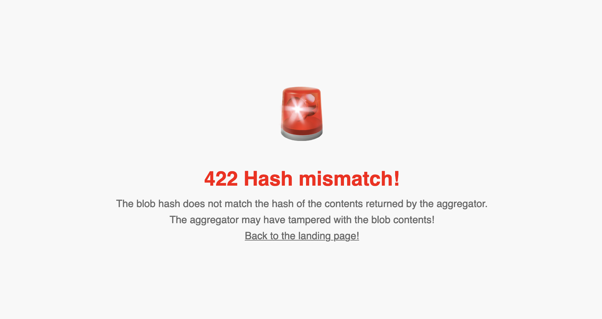

Walrus
Welcome to the developer documentation for Walrus, a decentralized storage and data availability protocol designed specifically for large binary files, or "blobs". Walrus focuses on providing a robust but affordable solution for storing unstructured content on decentralized storage nodes while ensuring high availability and reliability even in the presence of Byzantine faults.
If you are viewing this site at https://docs.wal.app, you are fetching this from Walrus behind the scenes. See the Walrus Sites chapter for further details on how this works.
Features
-
Storage and retrieval: Walrus supports storage operations to write and read blobs. It also allows anyone to prove that a blob has been stored and is available for retrieval at a later time.
-
Cost efficiency: By utilizing advanced erasure coding, Walrus maintains storage costs at approximately five times the size of the stored blobs, and encoded parts of each blob are stored on each storage node. This is significantly more cost-effective than traditional full-replication methods and much more robust against failures than protocols that only store each blob on a subset of storage nodes.
-
Integration with the Sui blockchain: Walrus leverages Sui for coordination, attesting availability, and payments. Storage space is represented as a resource on Sui, which can be owned, split, merged, and transferred. Stored blobs are also represented by objects on Sui, which means that smart contracts can check whether a blob is available and for how long, extend its lifetime or optionally delete it.
-
Epochs, tokenomics, and delegated proof of stake: Walrus is operated by a committee of storage nodes that evolve between epochs. A native token, WAL (and its subdivision FROST, where 1 WAL is equal to 1 billion FROST), is used to delegate stake to storage nodes, and those with high stake become part of the epoch committee. The WAL token is also used for payments for storage. At the end of each epoch, rewards for selecting storage nodes, storing and serving blobs are distributed to storage nodes and whose that stake with them. All these processes are mediated by smart contracts on the Sui platform.
-
Flexible access: Users can interact with Walrus through a command-line interface (CLI), software development kits (SDKs), and web2 HTTP technologies. Walrus is designed to work well with traditional caches and content distribution networks (CDNs), while ensuring all operations can also be run using local tools to maximize decentralization.
All blobs stored in Walrus are public and discoverable by all. Therefore you must not use Walrus to store anything that contains secrets or private data without additional measures to protect confidentiality. Refer to Data Security for such use cases.
Architecture and operations
Walrus's architecture ensures that content remains accessible and retrievable even when many storage nodes are unavailable or malicious. Under the hood it uses modern error correction techniques based on fast linear fountain codes, augmented to ensure resilience against Byzantine faults, and a dynamically changing set of storage nodes. The core of Walrus remains simple, and storage node management and blob certification leverages Sui smart contracts.
Organization
This documentation is split into several parts:
- Dev blog contains announcements and other blog posts.
- Usage provides concrete information for developers. If you want to get started quickly, you can jump directly to the setup chapter.
- Sites describes how you can use Walrus and Sui together to build truly decentralized websites.
- Design describes the objectives, security properties, and architecture of Walrus.
Finally, we provide a glossary that explains the terminology used throughout the documentation.
Sources
This documentation is built using mdBook from source files in https://github.com/MystenLabs/walrus. Please report or fix any errors you find in this documentation in that GitHub project.
The Walrus Dev Blog
This part of the Walrus documentation is used to publish news and updates about Walrus's development!
We generally keep older blog posts unchanged besides possibly fixing typos and updating or removing broken links. As a result they may contain information that is no longer accurate.
Announcing Walrus: A Decentralized Storage and Data Availability Protocol
Published on: 2024-06-18
This blog post is shown in its original form and may contain information that is no longer accurate. Some broken links may have been updated or removed.
Walrus is an innovative decentralized storage network for blockchain apps and autonomous agents. The Walrus storage system is being released today as a developer preview for Sui builders in order to gather feedback. We expect a broad rollout to other web3 communities very soon!
Leveraging innovations in erasure coding, Walrus enables fast and robust encoding of unstructured data blobs into smaller slivers distributed and stored over a network of storage nodes. A subset of slivers can be used to rapidly reconstruct the original blob, even when up to two-thirds of the slivers are missing. This is possible while keeping the replication factor down to a minimal 4x-5x, similar to existing cloud-based services, but with the additional benefits of decentralization and resilience to more widespread faults.
The Replication Challenge
Sui is the most advanced blockchain system in relation to storage on validators, with innovations such as a storage fund that future-proofs the cost of storing data on-chain. Nevertheless, Sui still requires complete data replication among all validators, resulting in a replication factor of 100x or more in today’s Sui Mainnet. While this is necessary for replicated computing and smart contracts acting on the state of the blockchain, it is inefficient for simply storing unstructured data blobs, such as music, video, blockchain history, etc.
Introducing Walrus: Efficient and Robust Decentralized Storage
To tackle the challenge of high replication costs, Mysten Labs has developed Walrus, a decentralized storage network offering exceptional data availability and robustness with a minimal replication factor of 4x-5x. Walrus provides two key benefits:
-
Cost-Effective Blob Storage: Walrus allows for the uploading of gigabytes of data at a time with minimal cost, making it an ideal solution for storing large volumes of data. Walrus can do this because the data blob is transmitted only once over the network, and storage nodes only spend a fraction of resources compared to the blob size. As a result, the more storage nodes the system has, the fewer resources each storage node uses per blob.
-
High Availability and Robustness: Data stored on Walrus enjoys enhanced reliability and availability under fault conditions. Data recovery is still possible even if two-thirds of the storage nodes crash or come under adversarial control. Further, availability may be certified efficiently without downloading the full blob.
Decentralized storage can take multiple forms in modern ecosystems. For instance, it offers better guarantees for digital assets traded as NFTs. Unlike current designs that store data off-chain, decentralized storage ensures users own the actual resource, not just metadata, mitigating risks of data being taken down or misrepresented.
Additionally, decentralized storage is not only useful for storing data such as pictures or files with high availability; it can also double as a low-cost data availability layer for rollups. Here, sequencers can upload transactions on Walrus, and the rollup executor only needs to temporarily reconstruct them for execution.
We also believe Walrus will accompany existing disaster recovery strategies for millions of enterprise companies. Not only is Walrus low-cost, it also provides unmatched layers of data availability, integrity, transparency, and resilience that centralized solutions by design cannot offer.
Walrus is powered by the Sui Network and scales horizontally to hundreds or thousands of networked decentralized storage nodes. This should enable Walrus to offer Exabytes of storage at costs competitive with current centralized offerings, given the higher assurance and decentralization.
The Future of Walrus
By releasing this developer preview we hope to share some of the design decisions with the decentralized app developer community and gather feedback on the approach and the APIs for storing, retrieving, and certifying blobs. In this developer preview, all storage nodes are operated by Mysten Labs to help us understand use cases, fix bugs, and improve the performance of the software.
Future updates to Walrus will allow for dynamically changing the set of decentralized storage nodes, as well as changing the mapping of what slivers are managed by each storage node. The available operations and tools will also be expanded to cover more storage-related use cases. Many of these functions will be designed with the feedback we gather in mind.
Stay tuned for more updates on how Walrus will revolutionize data storage in the web3 ecosystem.
What can developers build?
As part of this developer preview, we provide a binary client (currently macOS, ubuntu) that can be operated from the command line interface, a JSON API, and an HTTP API. We also offer the community an aggregator and publisher service and a Devnet deployment of 10 storage nodes operated by Mysten Labs.
We hope developers will experiment with building applications that leverage the Walrus Decentralized Store in a variety of ways. As examples, we hope to see the community build:
-
Storage of media for NFT or dapps: Walrus can directly store and serve media such as images, sounds, sprites, videos, other game assets, etc. This is publicly available media that can be accessed using HTTP requests at caches to create multimedia dapps.
-
AI-related use cases: Walrus can store clean data sets of training data, datasets with a known and verified provenance, model weights, and proofs of correct training for AI models. Or it may be used to store and ensure the availability and authenticity of an AI model output.
-
Storage of long term archival of blockchain history: Walrus can be used as a lower-cost decentralized store to store blockchain history. For Sui, this can include sequences of checkpoints with all associated transaction and effects content, as well as historic snapshots of the blockchain state, code, or binaries.
-
Support availability for L2s: Walrus enables parties to certify the availability of blobs, as required by L2s that need data to be stored and attested as available to all. This may also include the availability of extra audit data such as validity proofs, zero-knowledge proofs of correct execution, or large fraud proofs.
-
Support a full decentralized web experience: Walrus can host full decentralized web experiences including all resources (such as js, css, html, and media). These can provide content but also host the UX of dapps, enabling fully decentralized front- and back-ends on chain. It brings the full "web" back into "web3".
-
Support subscription models for media: Creators can store encrypted media on Walrus and only provide access via decryption keys to parties that have paid a subscription fee or have paid for content. (Note that Walrus provides the storage; encryption and decryption must be done off Walrus).
We are excited to see what else the web3 developer community can imagine!
Getting Started
For this developer preview the public Walrus Devnet is openly available to all developers. Developer documentation is available at https://docs.wal.app.
SUI Testnet token is the main currency for interacting with Walrus. Developers pay for Walrus Devnet storage using SUI Testnet tokens which can be acquired at the Sui Testnet Discord faucet.
One more thing …
The Walrus Sites website, the Walrus docs, and this very blog are hosted on Walrus. To learn more about Walrus Sites and how you can deploy your own, click here.
Devnet Update
Published on: 2024-08-12
This blog post is shown in its original form and may contain information that is no longer accurate. Some broken links may have been updated or removed.
We have redeployed the Walrus Devnet to incorporate various improvements to the Walrus storage nodes and clients. In this process, all blobs stored on Walrus were wiped. Note that this may happen again on Devnet and Testnet, but obviously not on the future Mainnet.
Migration and Re-deployment of Walrus Sites
You can obtain the latest version of the walrus binary and the new configuration as described in
the setup chapter.
If you had deployed any Walrus Sites, the site object on Sui and any SuiNS name are still valid.
However, you need to re-store all blobs on Walrus. You can achieve this by running the site-builder
tool (from the walrus-sites directory) as follows:
./target/release/site-builder --config site-builder/assets/builder-example.yaml update --force \
<path to the site> <site object ID>
Changes
Besides many improvements to the storage nodes, the new version of Walrus includes the following user-facing changes:
- Improved coin management: The client now better selects coins for gas and storage fees. Users no longer require multiple coins in their wallet.
- Improved connection management: The client now limits the number of parallel connections to improve performance for users with low network bandwidth storing large blobs.
- OpenAPI specification: Walrus storage nodes, aggregators, and publishers expose their API
specifications at the path
/v1/api. - System info in JSON: The
infocommand is now also available in JSON mode. - Client version: The
walrusCLI now has a--versionoption. - Support for the empty blob: The empty blob is now supported by Walrus.
- Default configuration-file paths: The client now looks for configuration files in
~/.config/walrusin addition to~/.walrusand recognizes the extension.ymlin addition to.yaml. - Home directory in paths: Paths specified in configuration files now expand the
~symbol at the beginning to the user's home directory. - More robust store and status check: The
storeandblob-statuscommands are now more robust against Sui full nodes that aggressively prune past events and against load-balancers that send transactions to different full nodes. - Fix CLI parsing: The
walrusCLI now properly handles hyphens in blob IDs.
This update also increases the number of shards to 1000, which is more representative of the expected value in Testnet and Mainnet.
Announcing the Official Walrus Whitepaper
Published on: 2024-09-17
This blog post is shown in its original form and may contain information that is no longer accurate. Some broken links may have been updated or removed.
In June, Mysten Labs announced Walrus, a new decentralized secure blob store design, and introduced a developer preview that currently stores over 12TiB of data. Breaking the Ice gathered over 200 developers to build apps leveraging decentralized storage.
It is time to unveil the next stage of the project: Walrus will become an independent decentralized network with its own utility token, WAL, that will play a key role in the operation and governance of the network. Walrus will be operated by storage nodes through a delegated proof-of-stake mechanism using the WAL token. An independent Walrus foundation will encourage the advancement and adoption of Walrus, and support its community of users and developers.
Today, we published the Walrus whitepaper (also on GitHub) that offers additional details, including:
- The encoding scheme and Read / Write operations Walrus uses to ensure both security and efficient scaling to 100s and 1000s of storage nodes, including interactions with the Sui blockchain which serves as a coordination layer for Walrus’ operations.
- The reconfiguration of storage nodes across epochs, and how the protocol ensures available blobs on Walrus remain available over long periods of time.
- The tokenomics of Walrus based on the WAL token, including how staking and staking rewards are structured, how pricing and payments for storage are handled and distributed in each epoch, and the governance of key system parameters.
- Forward-looking design options, such as a cheap mechanism to challenge and audit storage nodes, options for ensuring reads with a higher service quality, possibly against a payment, and designs that empower light nodes to meaningfully contribute to the protocol’s robustness, serve reads, and be rewarded.
The whitepaper focuses on the steady-state design aspects of Walrus. Further details about the project, such as timelines, opportunities for community participation, how to join the network as a storage node, and plans around light nodes, will be shared in subsequent posts.
To be part of this journey:
- Follow us on Twitter
- Join our Discord
- Build apps on Walrus
- Publish a Walrus Site and share it
Announcing Testnet
Published on: 2024-10-17
This blog post is mostly shown in its original form and may contain information that is no longer accurate. Some broken links may have been updated or removed.
Today, a community of operators launches the first public Walrus Testnet. This is an important milestone in validating the operation of Walrus as a decentralized blob store, by operating it on a set of independent storage nodes, that change over time through a delegated proof of stake mechanism. The Testnet also brings functionality updates relating to governance, epochs, and blob deletion.
Blob deletion
The most important user-facing new feature is optional blob deletion. The uploader of a blob can optionally indicate a blob is "deletable". This information is stored in the Sui blob metadata object, and is also included in the event denoting when the blob is certified. Subsequently, the owner of the Sui blob metadata object can "delete" it. As a result storage for the remaining period is reclaimed and can be used by subsequent blob storage operations.
Blob deletion allows more fine-grained storage cost management: smart contracts that wrap blob metadata objects can define logic that stores blobs and delete them to minimize costs, and reclaim storage space before Walrus epochs end.
However, blob deletion is not an effective privacy mechanism in itself: copies of the blob may exist outside Walrus storage nodes on caches and end-user stores or devices. Furthermore, if the identical blob is stored by multiple Walrus users, the blob will still be available on Walrus until no copy exists. Thus deleting your own copy of a blob cannot guarantee that it is deleted from Walrus as a whole.
- Find out how to upload and delete deletable blobs through the CLI.
- Find out more about how delete operations work.
Epochs
Walrus Testnet enables multiple epochs. Initially, the epoch duration is set to a single day to ensure the logic of epoch change is thoroughly tested. At Mainnet, epochs will likely be multiple weeks long.
The progress of epochs makes the end epoch of blobs meaningful, and blobs will become unavailable when they reach their end epoch. The store command may be used to extend the end epoch of a blob that is still available. This operation is efficient and only affects payments and metadata, and does not re-upload blob contents.
- Find out the current epoch through the CLI.
- Find out how to store a blob for multiple epochs.
The WAL token and the Testnet WAL faucet
Payments for blob storage and extending blob expiry are denominated in Testnet WAL, a Walrus token issued on the Sui Testnet. Testnet WAL has no value, and an unlimited supply; so no need to covet or hoard it, it's just for testing purposes and only issued on Sui Testnet.
WAL also has a smaller unit called FROST, similar to MIST for SUI. 1 WAL is equal to 1 billion (1000000000) FROST.
To make Testnet WAL available to all who want to experiment with the Walrus Testnet we provide a utility and smart contract to convert Testnet SUI (which also has no value) into Testnet WAL using a one-to-one exchange rate. This is chosen arbitrarily, and generally one should not read too much into the actual WAL denominated costs of storage on Testnet. They have been chosen arbitrarily.
Find out how to request Testnet WAL tokens through the CLI.
Decentralization through staking & unstaking
The WAL token may also be used to stake with storage operators. Staked WAL can be unstaked and re-staked with other operators or used to purchase storage.
Each epoch storage nodes are selected and allocated storage shards according to their delegated stake. At the end of each epoch payments for storing blobs for the epoch are distributed to storage nodes and those that delegate stake to them. Furthermore, important network parameters (such as total available storage and storage price) are set by the selected storage operators each epoch according to their stake weight.
A staking web dApp is provided to experiment with this functionality. Community members have also created explorers that can be used to view storage nodes when considering who to stake with. Staking ensures that the ultimate governance of Walrus, directly in terms of storage nodes, and indirectly in terms of parameters and software they chose, rests with WAL Token holders.
Under the hood and over the next months we will be testing many aspects of epoch changes and storage node committee changes: better shard allocation mechanisms upon changes or storage node stake; efficient ways to sync state between storage nodes; as well as better ways for storage nodes to follow Sui event streams.
- Explore the Walrus staking dApp.
- Look at recent activity on the Walrus Explorer.
New Move contracts & documentation
As part of the Testnet release of Walrus, the documentation and Move Smart contracts have been
updated, and can be found in the walrus-docs
repository.
New Walrus Sites features
With the move to Walrus Testnet, Walrus Sites have also been updated! The new features in this update greatly increase the flexibility, speed, and security of Walrus Sites. Developers can now specify client-side routing rules, and add custom HTTP headers to the portals' responses for their site, expanding the possibilities for what Walrus Sites can do.
Migrate now to take advantage of these new features! The old Walrus Sites, based on Walrus Devnet, will still be available for a short time. However, Devnet will be wiped soon (as described below), so it is recommended to migrate as soon as possible.
Discontinuation of Walrus Devnet
The previous Walrus Devnet instance is now deprecated and will be shut down after 2024-10-31. All data stored on Walrus Devnet (including Walrus Sites) will no longer be accessible at that point. You need to re-upload all data to Walrus Testnet if you want it to remain accessible. Walrus Sites also need to be migrated.
Announcing Testnet v2
Published on: 2025-01-16
This blog post is shown in its original form and may contain information that is no longer accurate. Some broken links may have been updated or removed.
We are today redeploying the Walrus Testnet to incorporate various improvements, including some backwards-incompatible changes. Make sure to get the latest binary and configuration as described in the setup section.
Note that all blob data on the previous Testnet instance has been wiped. All blobs need to be re-uploaded to the new Testnet instance, including Walrus Sites. In addition, there is a new version of the WAL token, so your previous WAL tokens will not work anymore. To use the Testnet v2, you need to obtain new WAL tokens.
In the following sections, we describe the notable changes and the actions required for existing Walrus Sites.
Epoch duration
The epoch duration has been increased from one day to two days to emphasize that this duration is different from Sui epochs (at Mainnet, epochs will likely be multiple weeks long). In addition, the maximum number of epochs a blob can be stored for has been reduced from 200 to 183 (corresponding to one year).
The walrus store command now also supports the --epochs max flag, which will store
the blob for the maximum number of epochs. Note that the --epochs flag is now mandatory.
New features
Besides many improvements to the contracts and the storage-node service, the latest Walrus release also brings several user-facing improvements.
- The
walrus storecommand now supports storing multiple files at once. This is faster and more cost-effective compared to storing each file separately as transactions can be batched through PTBs. Notably, this is compatible with glob patterns offered by many shells, so you can for example run a command likewalrus store *.png --epochs 100to store all PNG files in the current directory. - The
walrusCLI now supports creating, funding, and extending shared blobs using thewalrus share,walrus store --share, andwalrus fund-shared-blobcommands. Shared blobs are an example of collectively managed and funded blobs. See the shared blobs section for more details.
New WAL token
Along with the redeployment of Walrus, we have also deployed a fresh WAL contract. This means that you cannot use any WAL token from the previous Testnet instance with the new Testnet instance. You need to request new WAL tokens through the Testnet WAL faucet.
Backwards-incompatible changes
One reason for a full redeployment is to allow us to make some changes that are backwards-incompatible. Many of those are related to the contracts and thus less visible to users. There are, however, some changes that may affect you.
Configuration files
The format of the configuration files for storage nodes and clients has been changed. Make sure to use the latest version of the configuration files, see the configuration section.
CLI options
Several CLI options of the walrus CLI have been changed. Notably, all "short" variants of options
(e.g., -e instead of --epochs) have been removed to prevent future confusion with new options.
Additionally, the --epochs flag is now mandatory for the walrus store command (this also affects
the JSON API).
Please refer to the CLI help (walrus --help, or walrus <command> --help) for further details.
HTTP APIs
The paths, request, and response formats of the HTTP APIs have changed for the storage nodes, and also the aggregator and publisher. Please refer to the section on the HTTP API for further details.
Effects on and actions required for existing Walrus Sites
The Walrus Sites contracts have not changed, which means that all corresponding objects on Sui are
still valid. However, the resources now point to blob IDs that do not yet exist on the new Testnet.
The easiest way to fix existing sites is to simply update them with the --force flag:
site-builder update --epochs <number of epochs> --force <path to site> <existing site object>
New Move contracts & documentation
As part of the new Testnet release of Walrus, the Move smart contracts have been updated; the
deployed version can be found in the walrus-docs
repository.
Announcing Mainnet
Published on: 2025-03-27
A decentralized network: Mainnet
The production Walrus Mainnet is now live, and operated by a decentralized network of over 100 storage nodes. Epoch 1 begun on March 25, 2025. The network can now be used to publish and retrieve blobs, upload and browse Walrus Sites, as well as stake and unstake to determine future committees using the live Mainnet WAL token. On Mainnet, the Walrus security properties hold. And Walrus is now ready to satisfy the needs of real applications.
Walrus is open source. The Walrus protocol health is overseen by an independent foundation that is now well resourced to support future development and growth. And, the community is collecting tools, resources and dapps for Walrus under Awesome Walrus!
This is a significant milestone a little over 12 months after an initial small team started designing the Walrus protocol. And a special thanks is due to the community of storage operators that supported the development of Walrus through consecutive Testnet(s), as well as all community members that integrated the protocol early and provided feedback to improve it.
New features
Besides the promise of stability and security, the Mainnet release of Walrus comes with a few notable new features and changes:
-
Blob attributes. Each Sui blob objects can have multiple attributes and values attached to it, to encode application meta-data. The aggregator uses this facility for returning common HTTP headers.
-
Burn blob objects on Sui. The command line
walrustool is extended with commands to "burn" Sui blob objects to reclaim the associated storage fee, making it cheaper to store blobs. -
CLI expiry time improvements. Now blob expiry can be expressed more flexibly when storing blobs, through
--epochs max, an RFC3339 date with--earliest-expiry-time, or the concrete end epoch with--end-epoch. -
RedStuff with Reed-Solomon codes. The erasure code underlying RedStuff was changed from RaptorQ to Reed-Solomon (RS) codes. Intense benchmarking suggests their performance, for our parameter set, is similar, and the use of RS codes provides perfect robustness, in that blobs can always be reconstructed given a threshold of slivers. We thank Joachim Neu for extensive feedback on this topic.
-
TLS handing for storage node. Storage nodes can now be configured to serve TLS certificates that are publicly trusted, such as those issues by cloud providers and public authorities such as Let's Encrypt. This allows JavaScript clients to directly store and retrieve blobs from Walrus.
-
JWT authentication for publisher. Now the publisher can be configured to only provide services to authenticated users via consuming JWT tokens that can be distributed through any authentication mechanism.
-
Extensive logging and metrics. All services, from the storage node to aggregator and publisher export metrics that can be used to build dashboards, and logs at multiple levels to troubleshoot their operation.
-
Health endpoint. Storage nodes and the CLI include a
healthcommand to check the status and basic information of storage nodes. This is useful when allocating stake as well as monitoring the network. -
Walrus Sites updates. The Mainnet Walrus Sites public portal will be hosted on the
wal.appdomain name. Now Walrus Sites support deletable blobs to make their updates more capital efficient. Those operating their own portals may also use their own domain names to serve a Walrus Site. The Staking, Docs, Snowreads, and Flatland Walrus Sites are now on Mainnet. -
A subsidies contract. The Mainnet release of Walrus requires WAL for storing blobs, however to enable early adopters to try the system, transition to it, the Walrus foundation operates a smart contract to acquire subsidized storage. The CLI client uses it automatically when storing blobs.
Testnet future plans
The current Walrus Testnet will soon be wiped and restarted to align the codebase to the Mainnet release. Going forward we will regularly wipe the Testnet, every few months. Developers should use the Walrus Mainnet to get any level of stability. The Walrus Testnet is only there to test new features before they are deployed in production.
We will not be operating a public portal to serve Walrus Sites on Testnet, to reduce costs and incident response associated with free web hosting. Developers can still run a local portal pointed to Testnet to test Walrus Sites.
Open source Walrus codebase
The Walrus codebase, including all smart contracts in Move, services in Rust, and documentation, is
now open sourced under an Apache 2.0 license, and hosted on
GitHub. Since the main Walrus repository is now open to all,
and contains both documentation and smart contracts, we are retiring the walrus-docs repository.
Developers may find the Rust CLI client, and associated aggregator and publisher services of most interest. These can be extended to specialize services to specific operational needs. They are also a good illustration of how to interface with Walrus using Rust clients. A cleaner and more stable Rust SDK is in the works as well.
Publisher improvements and plans
Publishing blobs on Mainnet consumes real WAL and SUI. To avoid uncontrolled costs to operations the publisher service was augmented with facilities to authenticate requests and account for costs per user.
Getting started
You want to get a taste of Walrus? Here are some sites that are built on and/or use Walrus:
- Mint a toy NFT on the flatland application.
- Browse scientific papers.
You can explore blobs that are stored on Walrus through the Walruscan explorer.
Setup
We provide a pre-compiled walrus client binary for macOS (Intel and Apple CPUs) and Ubuntu, which
supports different usage patterns (see the next chapter). This chapter describes
the prerequisites, installation, and
configuration of the Walrus client.
Walrus is open-source under an Apache 2 license, and can also be built and installed from the Rust source code via cargo.
This page describes how to connect to Walrus Mainnet. See Available networks for an overview over all Walrus networks.
Prerequisites: Sui wallet, SUI and WAL
If you just want to set up a new Sui wallet for Walrus, you can generate one using the
walrus generate-sui-wallet --network mainnet command after installing Walrus.
You still need to obtain some SUI and WAL tokens, but you do not have to install the Sui CLI.
Interacting with Walrus requires a valid Sui wallet with some amount of SUI and WAL tokens. The normal way to set this up is via the Sui CLI; see the installation instructions in the Sui documentation.
After installing the Sui CLI, you need to set up a wallet by running sui client, which
prompts you to set up a new configuration. Make sure to point it to Sui Mainnet, you can use the
full node at https://fullnode.mainnet.sui.io:443 for this. See the Sui
documentation for further details.
After this, you should get something like this (everything besides the mainnet line is optional):
$ sui client envs
╭──────────┬─────────────────────────────────────┬────────╮
│ alias │ url │ active │
├──────────┼─────────────────────────────────────┼────────┤
│ devnet │ https://fullnode.devnet.sui.io:443 │ │
│ localnet │ http://127.0.0.1:9000 │ │
│ testnet │ https://fullnode.testnet.sui.io:443 │ │
│ mainnet │ https://fullnode.mainnet.sui.io:443 │ * │
╰──────────┴─────────────────────────────────────┴────────╯
Make sure you have at least one gas coin with at least 1 SUI.
$ sui client gas
╭─────────────────┬────────────────────┬──────────────────╮
│ gasCoinId │ mistBalance (MIST) │ suiBalance (SUI) │
├─────────────────┼────────────────────┼──────────────────┤
│ 0x65dca966dc... │ 1000000000 │ 1.00 │
╰─────────────────┴────────────────────┴──────────────────╯
Finally, to publish blobs on Walrus you will need some Mainnet WAL to pay for storage and upload costs. You can buy WAL through a variety of centralized or decentralized exchanges.
The system-wide wallet will be used by Walrus if no other path is specified. If you want to use a different Sui wallet, you can specify this in the Walrus configuration file or when running the CLI.
Installation
We currently provide the walrus client binary for macOS (Intel and Apple CPUs), Ubuntu, and
Windows. The Ubuntu version most likely works on other Linux distributions as well.
| OS | CPU | Architecture |
|---|---|---|
| Ubuntu | Intel 64bit | ubuntu-x86_64 |
| Ubuntu | Intel 64bit (generic) | ubuntu-x86_64-generic |
| Ubuntu | ARM 64bit | ubuntu-aarch64 |
| MacOS | Apple Silicon | macos-arm64 |
| MacOS | Intel 64bit | macos-x86_64 |
| Windows | Intel 64bit | windows-x86_64.exe |
Install via script
To download and install walrus to your "$HOME"/.local/bin directory, run one of the following
commands in your terminal then follow on-screen instructions. If you are on Windows, see the
Windows-specific instructions or the suiup installation (experimental)
# Run a first-time install using the latest Mainnet version.
curl -sSf https://install.wal.app | sh
# Install the latest Testnet version instead.
curl -sSf https://install.wal.app | sh -s -- -n testnet
# Update an existing installation (overwrites prior version of walrus).
curl -sSf https://install.wal.app | sh -s -- -f
Make sure that the "$HOME"/.local/bin directory is in your $PATH.
Once this is done, you should be able to run Walrus by using the walrus command in your terminal.
You can see usage instructions as follows (see the next chapter for further details):
$ walrus --help
Walrus client
Usage: walrus [OPTIONS] <COMMAND>
Commands:
⋮
Our latest Walrus binaries are also available on Walrus itself, namely on
https://bin.wal.app, for example, https://bin.wal.app/walrus-mainnet-latest-ubuntu-x86_64.
Note that due to DoS protection, it may not be possible to download the binaries with curl or
wget.
Install on Windows
To download walrus to your Microsoft Windows computer, run the following in a PowerShell.
(New-Object System.Net.WebClient).DownloadFile(
"https://storage.googleapis.com/mysten-walrus-binaries/walrus-testnet-latest-windows-x86_64.exe",
"walrus.exe"
)
From there, you'll need to place walrus.exe somewhere in your PATH.
Note that most of the remaining instructions assume a UNIX-based system for the directory structure, commands, etc. If you use Windows, you may need to adapt most of those.
Install via suiup (experimental)
suiup is a tool to install and manage different versions of CLI tools for working in the Sui
ecosystem, including the walrus CLI. After installing suiup as described in the suiup
documentation, you can install
specific versions of the walrus CLI:
suiup install walrus@testnet # install the latest testnet release
suiup install walrus@mainnet # install the latest mainnet release
suiup install walrus@testnet-v1.27.1 # install a specific release
GitHub releases
You can find all our releases including release notes on GitHub.
Simply download the archive for your system and extract the walrus binary.
Install via Cargo
You can also install Walrus via Cargo. For example, to install the latest Mainnet version:
cargo install --git https://github.com/MystenLabs/walrus --branch mainnet walrus-service --locked
In place of --branch mainnet, you can also specify specific tags (e.g., --tag mainnet-v1.18.2)
or commits (e.g., --rev b2009ac73388705f379ddad48515e1c1503fc8fc).
Build from source
Walrus is open-source software published under the Apache 2 license. The code is developed in a
git repository at https://github.com/MystenLabs/walrus.
The latest version of Mainnet and Testnet are available under the branches mainnet and testnet
respectively, and the latest version under the main branch. We welcome reports of issues and bug
fixes. Follow the instructions in the README.md file to build and use Walrus from source.
Configuration
The Walrus client needs to know about the Sui objects that store the Walrus system and staking
information, see the developer guide.
These need to be configured in a file ~/.config/walrus/client_config.yaml.
You can access Testnet and Mainnet via the following configuration. Note that this example Walrus
CLI configuration refers to the standard location for Sui configuration
("~/.sui/sui_config/client.yaml").
contexts:
mainnet:
system_object: 0x2134d52768ea07e8c43570ef975eb3e4c27a39fa6396bef985b5abc58d03ddd2
staking_object: 0x10b9d30c28448939ce6c4d6c6e0ffce4a7f8a4ada8248bdad09ef8b70e4a3904
exchange_objects: []
wallet_config:
# Optional path to the wallet config file.
# path: ~/.sui/sui_config/client.yaml
# Sui environment to use.
active_env: mainnet
# Optional override for the Sui address to use.
# active_address: 0x0000000000000000000000000000000000000000000000000000000000000000
rpc_urls:
- https://fullnode.mainnet.sui.io:443
testnet:
system_object: 0x6c2547cbbc38025cf3adac45f63cb0a8d12ecf777cdc75a4971612bf97fdf6af
staking_object: 0xbe46180321c30aab2f8b3501e24048377287fa708018a5b7c2792b35fe339ee3
exchange_objects:
- 0xf4d164ea2def5fe07dc573992a029e010dba09b1a8dcbc44c5c2e79567f39073
- 0x19825121c52080bb1073662231cfea5c0e4d905fd13e95f21e9a018f2ef41862
- 0x83b454e524c71f30803f4d6c302a86fb6a39e96cdfb873c2d1e93bc1c26a3bc5
- 0x8d63209cf8589ce7aef8f262437163c67577ed09f3e636a9d8e0813843fb8bf1
wallet_config:
# Optional path to the wallet config file.
# path: ~/.sui/sui_config/client.yaml
# Sui environment to use.
active_env: testnet
# Optional override for the Sui address to use.
# active_address: 0x0000000000000000000000000000000000000000000000000000000000000000
rpc_urls:
- https://fullnode.testnet.sui.io:443
default_context: mainnet
The easiest way to obtain the latest configuration is by downloading it directly from Walrus:
curl https://docs.wal.app/setup/client_config.yaml -o ~/.config/walrus/client_config.yaml
Custom path (optional)
By default, the Walrus client will look for the client_config.yaml (or client_config.yml)
configuration file in the current directory, $XDG_CONFIG_HOME/walrus/, ~/.config/walrus/, or
~/.walrus/. However, you can place the file anywhere and name it anything you like; in this case
you need to use the --config option when running the walrus binary.
Advanced configuration (optional)
The configuration file currently supports the following parameters for each of the contexts:
# These are the only mandatory fields. These objects are specific for a particular Walrus
# deployment but then do not change over time.
system_object: 0x2134d52768ea07e8c43570ef975eb3e4c27a39fa6396bef985b5abc58d03ddd2
staking_object: 0x10b9d30c28448939ce6c4d6c6e0ffce4a7f8a4ada8248bdad09ef8b70e4a3904
# You can define a custom path to your Sui wallet configuration here. If this is unset or `null`
# (default), the wallet is configured from `./sui_config.yaml` (relative to your current working
# directory), or the system-wide wallet at `~/.sui/sui_config/client.yaml` in this order. Both
# `active_env` and `active_address` can be omitted, in which case the values from the Sui wallet
# are used.
wallet_config:
# The path to the wallet configuration file.
path: ~/.sui/sui_config/client.yaml
# The optional `active_env` to use to override whatever `active_env` is listed in the
# configuration file.
active_env: mainnet
# The optional `active_address` to use to override whatever `active_address` is listed in the
# configuration file.
active_address: 0x...
# The following parameters can be used to tune the networking behavior of the client. There is no
# risk in playing around with these values. In the worst case, you may not be able to store/read
# blob due to timeouts or other networking errors.
- https://fullnode.testnet.sui.io:443
communication_config:
max_concurrent_writes: null
max_concurrent_sliver_reads: null
max_concurrent_metadata_reads: 3
max_concurrent_status_reads: null
max_data_in_flight: null
reqwest_config:
total_timeout_millis: 30000
pool_idle_timeout_millis: null
http2_keep_alive_timeout_millis: 5000
http2_keep_alive_interval_millis: 30000
http2_keep_alive_while_idle: true
request_rate_config:
max_node_connections: 10
backoff_config:
min_backoff_millis: 1000
max_backoff_millis: 30000
max_retries: 5
disable_proxy: false
disable_native_certs: false
sliver_write_extra_time:
factor: 0.5
base_millis: 500
registration_delay_millis: 200
max_total_blob_size: 1073741824
committee_change_backoff:
min_backoff_millis: 1000
max_backoff_millis: 5000
max_retries: 5
sui_client_request_timeout_millis: null
refresh_config:
refresh_grace_period_secs: 10
max_auto_refresh_interval_secs: 30
min_auto_refresh_interval_secs: 5
epoch_change_distance_threshold_secs: 300
refresher_channel_size: 100
quilt_client_config:
max_retrieve_slivers_attempts: 2
timeout_secs: 10
Available networks
Walrus Mainnet operates a production-quality storage network on the Sui Mainnet. The Walrus Testnet operates on the Sui Testnet and is used to test new features of Walrus before they graduate to the Mainnet. Finally, developers can operate local Walrus and Sui networks for testing.
Network parameters
Some important fixed system parameters for Mainnet and Testnet are summarized in the following table:
| Parameter | Mainnet | Testnet |
|---|---|---|
| Sui network | Mainnet | Testnet |
| Number of shards | 1000 | 1000 |
| Epoch duration | 2 weeks | 1 day |
| Maximum number of epochs for which storage can be bought | 53 | 53 |
Many other parameters, including the system capacity and prices, are dynamic. Those are stored in the system object (see the documentation about the system and staking objects) and can be viewed with various tools like the Walruscan explorer.
Mainnet configuration
Mainnet parameters
The client parameters for the Walrus Mainnet are:
system_object: 0x2134d52768ea07e8c43570ef975eb3e4c27a39fa6396bef985b5abc58d03ddd2
staking_object: 0x10b9d30c28448939ce6c4d6c6e0ffce4a7f8a4ada8248bdad09ef8b70e4a3904
rpc_urls:
- https://fullnode.mainnet.sui.io:443
In case you wish to explore the Walrus contracts, their package IDs are the following:
- WAL package:
0x356a26eb9e012a68958082340d4c4116e7f55615cf27affcff209cf0ae544f59 - Walrus package:
0xfdc88f7d7cf30afab2f82e8380d11ee8f70efb90e863d1de8616fae1bb09ea77
As these are inferred automatically from the object IDs above, there is no need to manually input
them into the Walrus client configuration file. The latest published package IDs can also be found
in the Move.lock files in the subdirectories of the contracts directory on
GitHub.
The configuration file described on the setup page includes both Mainnet and Testnet configuration. If you want only the Mainnet configuration, you can download the Mainnet-only configuration file.
Testnet configuration
All transactions are executed on the Sui Testnet and use Testnet WAL and SUI which have no value. The state of the store can and will be wiped at any point and possibly with no warning. Do not rely on this Testnet for any production purposes, it comes with no availability or persistence guarantees.
New features on testnet may break deployed testnet apps, since this is the network in which we test new updates including for compatibility with eco-system applications.
Also see the Testnet terms of service under which this Testnet is made available.
Prerequisites: Sui wallet and Testnet SUI
Interacting with Walrus requires a valid Sui Testnet wallet with some amount of SUI tokens. The
normal way to set this up is via the Sui CLI; see the installation
instructions in the Sui
documentation. If you do not want to install the Sui CLI, you can also generate a new Sui wallet for
Testnet using walrus generate-sui-wallet --network testnet.
After installing the Sui CLI, you need to set up a Testnet wallet by running sui client, which
prompts you to set up a new configuration. Make sure to point it to Sui Testnet, you can use the
full node at https://fullnode.testnet.sui.io:443 for this. See the Sui
documentation for further details.
If you already have a Sui wallet configured, you can directly set up the Testnet environment (if you don't have it yet),
sui client new-env --alias testnet --rpc https://fullnode.testnet.sui.io:443
and switch the active environment to it:
sui client switch --env testnet
After this, you should get something like this (everything besides the testnet line is optional):
$ sui client envs
╭──────────┬─────────────────────────────────────┬────────╮
│ alias │ url │ active │
├──────────┼─────────────────────────────────────┼────────┤
│ devnet │ https://fullnode.devnet.sui.io:443 │ │
│ localnet │ http://127.0.0.1:9000 │ │
│ testnet │ https://fullnode.testnet.sui.io:443 │ * │
│ mainnet │ https://fullnode.mainnet.sui.io:443 │ │
╰──────────┴─────────────────────────────────────┴────────╯
Finally, make sure you have at least one gas coin with at least 1 SUI. You can obtain one from the
Sui Testnet faucet (you can find your address through the
sui client active-address command).
After some seconds, you should see your new SUI coins:
$ sui client gas
╭─────────────────┬────────────────────┬──────────────────╮
│ gasCoinId │ mistBalance (MIST) │ suiBalance (SUI) │
├─────────────────┼────────────────────┼──────────────────┤
│ 0x65dca966dc... │ 1000000000 │ 1.00 │
╰─────────────────┴────────────────────┴──────────────────╯
The system-wide wallet will be used by Walrus if no other path is specified. If you want to use a different Sui wallet, you can specify this in the Walrus configuration file or when running the CLI.
Testnet parameters
The configuration parameters for the Walrus Testnet are included in the configuration file described on the setup page. If you want only the Testnet configuration, you can get the Testnet-only configuration file. The parameters are:
system_object: 0x6c2547cbbc38025cf3adac45f63cb0a8d12ecf777cdc75a4971612bf97fdf6af
staking_object: 0xbe46180321c30aab2f8b3501e24048377287fa708018a5b7c2792b35fe339ee3
exchange_objects:
- 0xf4d164ea2def5fe07dc573992a029e010dba09b1a8dcbc44c5c2e79567f39073
- 0x19825121c52080bb1073662231cfea5c0e4d905fd13e95f21e9a018f2ef41862
- 0x83b454e524c71f30803f4d6c302a86fb6a39e96cdfb873c2d1e93bc1c26a3bc5
- 0x8d63209cf8589ce7aef8f262437163c67577ed09f3e636a9d8e0813843fb8bf1
rpc_urls:
- https://fullnode.testnet.sui.io:443
The current Testnet package IDs can be
found in the Move.lock files in the subdirectories of the testnet-contracts directory on
GitHub.
Testnet WAL faucet
The Walrus Testnet uses Testnet WAL tokens to buy storage and stake. Testnet WAL tokens have no value and can be exchanged (at a 1:1 rate) for some Testnet SUI tokens, which also have no value, through the following command:
walrus get-wal
You can check that you have received Testnet WAL by checking the Sui balances:
$ sui client balance
╭─────────────────────────────────────────╮
│ Balance of coins owned by this address │
├─────────────────────────────────────────┤
│ ╭─────────────────────────────────────╮ │
│ │ coin balance (raw) balance │ │
│ ├─────────────────────────────────────┤ │
│ │ Sui 8869252670 8.86 SUI │ │
│ │ WAL 500000000 0.50 WAL │ │
│ ╰─────────────────────────────────────╯ │
╰─────────────────────────────────────────╯
By default, 0.5 SUI are exchanged for 0.5 WAL, but a different amount of SUI may be exchanged using
the --amount option (the value is in MIST/FROST), and a specific SUI/WAL exchange object may be
used through the --exchange-id option. The walrus get-wal --help command provides more
information about those.
Running a local Walrus network
In addition to publicly deployed Walrus networks, you can deploy a Walrus testbed on your local
machine for local testing. All you need to do is run the script scripts/local-testbed.sh found
in the Walrus git code repository. See
scripts/local-testbed.sh -h for further usage information.
The script generates configuration that you can use when running the Walrus client and prints the path to that configuration file.
In addition, one can spin up a local grafana instance to visualize the metrics collected by the
storage nodes. This can be done via cd docker/grafana-local; docker compose up. This should work
with the default storage node configuration.
Note that while the Walrus storage nodes of this testbed run on your local machine, the Sui Devnet
is used by default to deploy and interact with the contracts. To run the testbed fully locally,
simply start a local network with sui start --with-faucet --force-regenesis
(requires sui to be v1.28.0 or higher) and specify localnet when starting the Walrus testbed.
Interacting with Walrus
We provide 3 ways to interact directly with the Walrus storage system:
- Through the Walrus client command line interface (CLI).
- Through a JSON API of the Walrus CLI.
- Through an HTTP API exposed by a public or local Walrus client daemon.
Furthermore, users can stake and unstake through the staking dApp or Sui smart contracts.
Using the Walrus client
The walrus binary can be used to interact with Walrus as a client. See the setup
chapter for prerequisites, installation, and configuration.
Detailed usage information including a full list of available commands can be viewed with
walrus --help
Each sub-command of walrus can also be called with --help to print its specific arguments and
their meaning.
If you have multiple contexts in your configuration file (as in the default one included on the
setup page), you can specify the context for each command through the
--context option.
You can generate a bash/zsh/fish completion script with walrus completion and place it in the appropriate
directory like ~/.local/share/bash-completion/completions.
Walrus system information
Information about the Walrus system is available through the walrus info command. It provides an
overview of current system parameters such as the current epoch, the number of storage nodes and
shards in the system, the maximum blob size, and the current cost in WAL for storing
blobs:
$ walrus info
Walrus system information
Epochs and storage duration
Current epoch: 1
Start time: 2025-03-25 15:00:24.408 UTC
End time: 2025-04-08 15:00:24.408 UTC
Epoch duration: 14days
Blobs can be stored for at most 53 epochs in the future.
Storage nodes
Number of storage nodes: 103
Number of shards: 1000
Blob size
Maximum blob size: 13.6 GiB (14,599,533,452 B)
Storage unit: 1.00 MiB
Storage prices per epoch
(Conversion rate: 1 WAL = 1,000,000,000 FROST)
Price per encoded storage unit: 0.0001 WAL
Additional price for each write: 20,000 FROST
...
The epoch duration on Mainnet is 2 weeks. See here for other parameters on Mainnet and Testnet.
FROST is the smaller unit of WAL, similar to MIST for SUI. The conversion is also the same as for
SUI: 1 WAL = 1 000 000 000 FROST.
Additional information such as encoding parameters and sizes, BFT system information, and
information on the storage nodes in the current and (if already selected) the next committee,
including their node IDs and stake and shard distribution can be viewed with various subcommands,
see walrus info --help for details. Note that the previous --dev option has been replaced by the
all subcommand.
The health of storage nodes can be checked with the walrus health command. This command takes
different options to select the nodes to check (see walrus health --help for details). For
example, walrus health --committee checks the status of all current committee members.
Storing blobs
All blobs stored in Walrus are public and discoverable by all. Therefore you must not use Walrus to store anything that contains secrets or private data without additional measures to protect confidentiality.
It must be ensured that only a single process uses the Sui wallet for write actions (storing or
deleting). When using multiple instances of the client simultaneously, each of them must be pointed
to a different wallet. Note, it is possible to store multiple blobs with a single walrus store
command.
Storing one or multiple blobs on Walrus can be achieved through the following command:
walrus store <FILES> --epochs <EPOCHS>
A mandatory CLI argument must be set to specify the lifetime for the blob. There are currently three ways for this:
- The
--epochs <EPOCHS>option indicates the number of epochs the blob should be stored for. There is an upper limit on the number of epochs a blob can be stored for, which is 53, corresponding to two years. In addition to a positive integer, you can also use--epochs maxto store the blob for the maximum number of epochs. Note that the end epoch is defined as the current epoch plus the specified number of epochs. - The
--earliest-expiry-time <EARLIEST_EXPIRY_TIME>option takes a date in RFC3339 format (e.g., "2024-03-20T15:00:00Z") or a more relaxed format (e.g., "2024-03-20 15:00:00") and ensures the blob expires after that date if possible. - The
--end-epoch <END_EPOCH>option takes a specific end epoch for the blob.
A blob expires at the beginning of its end epoch. For example, a blob with end epoch 314 will
become unavailable at the beginning of epoch 314. One consequence of this is that when storing a
blob with --epochs 1 immediately before an epoch change, it will expire and become unavailable
almost immediately. Note that blobs can be extended only if
they have not expired.
You can store a single file or multiple files, separated by spaces. Notably, this is compatible
with glob patterns; for example, walrus store *.png --epochs <EPOCHS> will store all PNG files
in the current directory.
By default, the command will store the blob as a permanent blob, although this is going to change
in the near future. See the section on deletable blobs for more
details on deletable blobs. Also, by default an owned Blob object is created. It is possible to
wrap this into a shared object, which can be funded and extended by anyone, see the shared blobs
section.
When storing a blob, the client performs a number of automatic optimizations, including the following:
- If the blob is already stored as a permanent blob on Walrus for a sufficient number of epochs
the command does not store it again. This behavior can be overwritten with the
--forceCLI option, which stores the blob again and creates a fresh blob object on Sui belonging to the wallet address. - If the user's wallet has a storage resource of suitable size and duration, it is (re-)used instead of buying a new one.
- If the blob is already certified on Walrus but as a deletable blob or not for a sufficient number of epochs, the command skips sending encoded blob data to the storage nodes and just collects the availability certificate
We have a separate page with some considerations regarding cost.
Using a Walrus upload relay
The Walrus upload relay functionality is only available in the Walrus CLI version v1.29 or higher.
A Walrus upload relay is a third party service that can help clients with limited bandwidth and networking capabilities (a browser, for example) in storing blobs on Walrus.
The asset management on chain (buying storage, registering and certifying blobs) still happens on the client; the upload relay just takes the unencoded blob, encodes it, and sends the slivers to the storage nodes, finally returning the certificate. See in-depth details in the Walrus upload relay section of these docs.
When storing blobs with the walrus store command (and also when storing
quilts) you can use the --upload-relay flag with a URL to specify an
upload relay server be used by the CLI.
The upload relay is a third party service that may require a fee, or "tip". This tip may be a constant SUI amount per blob stored, or dependent on the size of the blob being stored. The Walrus CLI will show you how much tip the upload relay requires, and will ask for confirmation before continuing.
The technical details on how the tip is computed and paid are here.
Querying blob status
The status of a blob can be queried through one of the following commands:
walrus blob-status --blob-id <BLOB_ID>
walrus blob-status --file <FILE>
This returns whether the blob is stored and its availability period. If you specify a file with the
--file option,the CLI re-encodes the content of the file and derives the blob ID before checking
the status.
When the blob is available, the blob-status command also returns the BlobCertified Sui event ID,
which consists of a transaction ID and a sequence number in the events emitted by the transaction.
The existence of this event certifies the availability of the blob.
Reading blobs
Reading blobs from Walrus can be achieved through the following command:
walrus read <some blob ID>
By default the blob data is written to the standard output. The --out <OUT> CLI option
can be used to specify an output file name. The --rpc-url <URL> may be used to specify
a Sui RPC node to use instead of the one set in the wallet configuration or the default one.
Extending the lifetime of a blob
Recall that when you stored your blob, it was necessary to specify its end epoch.
By specifying the end epoch you ensured that the blob would be available via walrus read (or other
SDK access to Walrus) until that end epoch is reached.
Walrus blob lifetimes can be extended as long as the blobs are not expired using the
walrus extend --blob-obj-id <blob object id> ... command. Both regular single-address owned blobs
and shared blobs may be extended. Shared blobs may be extended by anyone, but owned
blobs may only be extended by their owner. When extending a shared blob, you will need to supply the
--shared flag to inform the command that the blob is shared.
Note that the blob's object ID will be needed in order to extend it, the blob ID is not needed.
See walrus extend --help for more information on blob extension.
Reclaiming space via deletable blobs
By default walrus store uploads a permanent blob available until after its expiry
epoch. Not even the uploader may delete it beforehand. However, optionally, the store command
may be invoked with the --deletable flag, to indicate the blob may be deleted before its expiry
by the owner of the Sui blob object representing the blob. Deletable blobs are indicated as such
in the Sui events that certify them, and should not be relied upon for availability by others.
A deletable blob may be deleted with the command:
walrus delete --blob-id <BLOB_ID>
Optionally the delete command can be invoked by specifying a --file <PATH> option, to derive the
blob ID from a file, or --object-id <SUI_ID> to delete the blob in the Sui blob object specified.
Before deleting a blob, the walrus delete command will ask for confirmation unless the --yes
option is specified.
The delete command reclaims the storage object associated with the deleted blob, which is re-used
to store new blobs. The delete operation provides flexibility around managing storage costs and
re-using storage.
The delete operation has limited utility for privacy: It only deletes slivers from the current epoch
storage nodes, and subsequent epoch storage nodes, if no other user has uploaded a copy of the same
blob. If another copy of the same blob exists in Walrus, the delete operation will not make the blob
unavailable for download, and walrus read invocations will download it. After the deletion is
finished, the CLI checks the updated status of the blob to see if it is still accessible in Walrus
(unless the --no-status-check option is specified). However, even if it isn't, copies of the
public blob may be cached or downloaded by users, and these copies are not deleted.
All blobs stored in Walrus are public and discoverable by all. The delete command will
not delete slivers if other copies of the blob are stored on Walrus possibly by other users.
It does not delete blobs from caches, slivers from past storage nodes, or copies
that could have been made by users before the blob was deleted.
Shared blobs
Shared blobs are shared Sui objects wrapping "standard" Blob objects that can be funded and
whose lifetime can be extended by anyone. See the shared blobs
contracts
for further details.
You can create a shared blob from an existing Blob object you own with the walrus share command:
walrus share --blob-obj-id <BLOB_OBJ_ID>
The resulting shared blob can be directly funded by adding an --amount, or you can fund an
existing shared blob with the walrus fund-shared-blob command. Additionally, you can immediately
share a newly created blob by adding the --share option to the walrus store command.
Shared blobs can only contain permanent blobs and as such cannot be deleted before their expiry.
See this section for more on blob extension.
Batch-storing blobs with quilts
Note: The quilt feature is only available in Walrus version v1.29 or higher.
- Blobs within a quilt are retrieved by a
QuiltPatchId, not their standardBlobId. This ID is generated based on all blobs in the quilt, so a blob'sQuiltPatchIdwill change if it's moved to a different quilt. - Standard blob operations like
delete,extend, orsharecannot target individual blobs inside a quilt; they must be applied to the entire quilt.
For efficiently storing large numbers of small blobs, Walrus provides the Quilt. It batches multiple blobs into a single storage unit, significantly reducing overhead and cost. You can find a more detailed overview of the feature Quilt.
You can interact with quilts using a dedicated set of walrus subcommands.
Storing Blobs as a Quilt
To batch-store multiple files as a single quilt, use the store-quilt command. You can specify
the files to include in two ways:
You must ensure that all the identifiers are unique within a quilt, the operation will fail otherwise. Identifiers are the unique names used to retrieve individual blobs from within a quilt.
Using --paths
To store all files from one or more directories recursively. The filename of each file will be
used as its unique identifier within the quilt. Regular expressions are supported for uploading from
multiple paths, same as the walrus store command.
Like the regular store command, you can specify the storage duration using --epochs,
--earliest-expiry-time, or --end-epoch.
walrus store-quilt --epochs <EPOCHS> --paths <path-to-directory-1> <path-to-directory-2> <path-to-blob>
Using --blobs
To specify a list of blobs as JSON objects. This gives you more control, allowing you to set a
custom identifier and tags for each file. If identifier is null or omitted, the file's
name is used instead.
walrus store-quilt \
--blobs '{"path":"<path-to-blob-1>","identifier":"walrus","tags":{"color":"grey","size":"medium"}}' \
'{"path":"<path-to_blob-2>","identifier":"seal","tags":{"color":"grey","size":"small"}}' \
--epochs <EPOCHS>
Reading Blobs from a Quilt
You can retrieve individual blobs (formally "patches") from a quilt without downloading the
entire quilt. The read-quilt command allows you to query for specific blobs by their identifier,
tags, or unique patch ID.
To read blobs by their identifiers, use the --identifiers flag:
walrus read-quilt --out <download dir> \
--quilt-id 057MX9PAaUIQLliItM_khR_cp5jPHzJWf-CuJr1z1ik --identifiers walrus.jpg another-walrus.jpg
Blobs within a quilt can be accessed and filtered based on their tags. For instance, if you have a collection of animal images stored in a quilt, each labeled with a species tag such as "species=cat," you can download all images labeled as cats with the following command:
# Read all blobs with tag "size: medium"
walrus read-quilt --out <download dir> \
--quilt-id 057MX9PAaUIQLliItM_khR_cp5jPHzJWf-CuJr1z1ik --tag species cat
You can also read a blob using its QuiltPatchId, which can be retrieved using
list-patches-in-quilt.
walrus read-quilt --out <download dir> \
--quilt-patch-ids GRSuRSQ_hLYR9nyo7mlBlS7MLQVSSXRrfPVOxF6n6XcBuQG8AQ \
GRSuRSQ_hLYR9nyo7mlBlS7MLQVSSXRrfPVOxF6n6XcBwgHHAQ
List patches in a Quilt
To see all the patches contained within a quilt, along with their identifiers and QuiltPatchIds, use
the list-patches-in-quilt command.
walrus list-patches-in-quilt 057MX9PAaUIQLliItM_khR_cp5jPHzJWf-CuJr1z1ik
Blob object and blob ID utilities
The command walrus blob-id <FILE> may be used to derive the blob ID of any file. The blob ID is a
commitment to the file, and any blob with the same ID will decode to the same content. The blob
ID is a 256 bit number and represented on some Sui explorer as a decimal large number. The
command walrus convert-blob-id <BLOB_ID_DECIMAL> may be used to convert it to a base64 URL safe
encoding used by the command line tools and other APIs.
The walrus list-blobs command lists all the non expired Sui blob object that the current account
owns, including their blob ID, object ID, and metadata about expiry and deletable status.
The option --include-expired also lists expired blob objects.
The Sui storage cost associated with blob objects may be reclaimed by burning the Sui blob object.
This does not lead to the Walrus blob being deleted, but means that operations such as extending
its lifetime, deleting it, or modifying attributes are no more available.
The walrus burn-blobs --object-ids <BLOB_OBJ_IDS> command may be used to burn a specific list of
blobs object IDs. The --all flag burns all blobs under the user account,
and --all-expired burns all expired blobs under the user account.
Blob attributes
Walrus allows a set of key-value attribute pairs to be associated with a blob object. While the key
and values may be arbitrary strings to accommodate any needs of dapps, specific keys are converted
to HTTP headers when serving blobs through aggregators. Each aggregator can decide which headers it
allows through the --allowed-headers CLI option; the defaults can be viewed through walrus aggregator --help.
The command
walrus set-blob-attribute <BLOB_OBJ_ID> --attr "key1" "value1" --attr "key2" "value2"
sets attributes key1 and key2 to values value1 and value2, respectively. The command
walrus get-blob-attribute <BLOB_OBJ_ID> returns all attributes associated with a blob ID. Finally,
walrus remove-blob-attribute-fields <BLOB_OBJ_ID> --keys "key1,key2"
deletes the attributes with
keys listed (separated by commas or spaces). All attributes of a blob object may be deleted by
the command walrus remove-blob-attribute <BLOB_OBJ_ID>.
Note that attributes are associated with blob object IDs on Sui, rather than the blob themselves on Walrus. This means that the gas for storage is reclaimed by deleting attributes. And also that the same blob contents may have different attributes for different blob objects for the same blob ID.
Changing the default configuration
Use the --config option to specify a custom path to the
configuration location.
The --wallet <WALLET> argument may be used to specify a non-standard Sui wallet configuration
file. And a --gas-budget <GAS_BUDGET> argument may be used to change the maximum amount of Sui (in
MIST) that the command is allowed to use.
Logging and metrics
The walrus CLI allows for multiple levels of logging, which can be turned on via an env variable:
RUST_LOG=walrus=trace walrus info
By default info level logs are enabled, but debug and trace can give a more intimate
understanding of what a command does, or how it fails.
JSON mode
All Walrus client commands are also available in JSON mode. In this mode, all the command-line flags of the original CLI command can be specified in JSON format. The JSON mode therefore simplifies programmatic access to the CLI.
For example, to store a blob, run:
walrus json \
'{
"config": "path/to/client_config.yaml",
"command": {
"store": {
"files": ["README.md", "LICENSE"],
"epochs": 100
}
}
}'
Or, to read a blob knowing the blob ID:
walrus json \
'{
"config": "path/to/client_config.yaml",
"command": {
"read": {
"blobId": "4BKcDC0Ih5RJ8R0tFMz3MZVNZV8b2goT6_JiEEwNHQo"
}
}
}'
All options, default values, and commands are equal to those of the "standard" CLI mode, except that they are written in "camelCase" instead of "kebab-case".
The json command also accepts input from stdin.
The output of a json command will itself be JSON-formatted, again to simplify parsing the results
in a programmatic way. For example, the JSON output can be piped to the jq command for parsing and
manually extracting relevant fields.
Client Daemon mode & HTTP API
In addition to the CLI and JSON modes, the Walrus client offers a daemon mode. In this mode, it runs a simple web server offering HTTP interfaces to store and read blobs in an aggregator and publisher role respectively. We also offer public aggregator and publisher services to try the Walrus HTTP APIs without the need to run a local client. See how to operate an aggregator or publisher in the operator documentation.
HTTP API Usage
For the following examples, we assume you set the AGGREGATOR and PUBLISHER environment variables
to your desired aggregator and publisher, respectively. For example, the instances run by Mysten
Labs on Walrus Testnet (see below for further public options):
AGGREGATOR=https://aggregator.walrus-testnet.walrus.space
PUBLISHER=https://publisher.walrus-testnet.walrus.space
Walrus aggregators and publishers expose their API specifications at the path /v1/api. You can
view this in the browser, for example, at https://aggregator.walrus-testnet.walrus.space/v1/api.
Store
You can interact with the daemon through simple HTTP PUT requests. For example, with cURL, you can store blobs using a publisher or daemon as follows:
# store the string `some string` for 1 storage epoch
curl -X PUT "$PUBLISHER/v1/blobs" -d "some string"
# store file `some/file` for 5 storage epochs
curl -X PUT "$PUBLISHER/v1/blobs?epochs=5" --upload-file "some/file"
# store file `some/file` and send the blob object to $ADDRESS
curl -X PUT "$PUBLISHER/v1/blobs?send_object_to=$ADDRESS" --upload-file "some/file"
# store file `some/file` as a deletable blob, instead of a permanent one and send the blob object to $ADDRESS
curl -X PUT "$PUBLISHER/v1/blobs?deletable=true&send_object_to=$ADDRESS" --upload-file "some/file"
The store HTTP API end points return information about the blob stored in JSON format. When a blob
is stored for the first time, a newlyCreated field contains information about the
new blob:
$ curl -X PUT "$PUBLISHER/v1/blobs" -d "some other string"
{
"newlyCreated": {
"blobObject": {
"id": "0xe91eee8c5b6f35b9a250cfc29e30f0d9e5463a21fd8d1ddb0fc22d44db4eac50",
"registeredEpoch": 34,
"blobId": "M4hsZGQ1oCktdzegB6HnI6Mi28S2nqOPHxK-W7_4BUk",
"size": 17,
"encodingType": "RS2",
"certifiedEpoch": 34,
"storage": {
"id": "0x4748cd83217b5ce7aa77e7f1ad6fc5f7f694e26a157381b9391ac65c47815faf",
"startEpoch": 34,
"endEpoch": 35,
"storageSize": 66034000
},
"deletable": false
},
"resourceOperation": {
"registerFromScratch": {
"encodedLength": 66034000,
"epochsAhead": 1
}
},
"cost": 132300
}
}
The information returned is the content of the Sui blob object.
When the publisher finds a certified blob with the same blob ID and a sufficient validity period,
it returns a alreadyCertified JSON structure:
$ curl -X PUT "$PUBLISHER/v1/blobs" -d "some other string"
{
"alreadyCertified": {
"blobId": "M4hsZGQ1oCktdzegB6HnI6Mi28S2nqOPHxK-W7_4BUk",
"event": {
"txDigest": "4XQHFa9S324wTzYHF3vsBSwpUZuLpmwTHYMFv9nsttSs",
"eventSeq": "0"
},
"endEpoch": 35
}
}
The field event returns the Sui event ID that can be used to
find the transaction that created the Sui Blob object on the Sui explorer or using a Sui SDK.
Read
Blobs may be read from an aggregator or daemon using HTTP GET using their blob ID. For example, the following cURL command reads a blob and writes it to an output file:
curl "$AGGREGATOR/v1/blobs/<some blob ID>" -o <some file name>
Alternatively you may print the contents of a blob in the terminal with the cURL command:
curl "$AGGREGATOR/v1/blobs/<some blob ID>"
Modern browsers will attempt to sniff the content type for such resources, and will generally do a good job of inferring content types for media. However, the aggregator on purpose prevents such sniffing from inferring dangerous executable types such as JavaScript or style sheet types.
Blobs may also be read by using the object ID of a Sui blob object or a shared blob. For example the following cURL command downloads the blob corresponding to a Sui blob with a specific object ID:
curl "$AGGREGATOR/v1/blobs/by-object-id/<object-id>" -o <some file name>
Downloading blobs by object ID allows the use of attributes to set some HTTP headers.
The aggregator recognizes the attribute keys content-disposition, content-encoding,
content-language, content-location, content-type, and link, and when present returns
the values in the corresponding HTTP headers.
Quilt HTTP APIs
Walrus supports storing and retrieving multiple blobs as a single unit called a quilt. The publishers and aggregators support quilt related operations.
Note Quilt APIs are supported with Walrus 1.29 and higher.
Storing quilts
All the query parameters available for storing regular blobs (see Store section above) can also be used when storing quilts.
Use the following publisher API to store multiple blobs as a quilt:
# Store two files `document.pdf` and `image.png`, with custom identifiers `contract-v2` and
# `logo-2024, respectively.
curl -X PUT "$PUBLISHER/v1/quilts?epochs=5" \
-F "contract-v2=@document.pdf" \
-F "logo-2024=@image.png"
# Store two files with Walrus-native metadata. The metadata are assigned to the blob with
# the same identifier. Note: `_metadata` must be used as the field name for Walrus-native metadata.
curl -X PUT "$PUBLISHER/v1/quilts?epochs=5" \
-F "quilt-manual=@document.pdf" \
-F "logo-2025=@image.png" \
-F '_metadata=[
{"identifier": "quilt-manual", "tags": {"creator": "walrus", "version": "1.0"}},
{"identifier": "logo-2025", "tags": {"type": "logo", "format": "png"}}
]'
Since identifiers cannot start with _, the field name _metadata is reserved for Walrus native
metadata and won't conflict with user-defined identifiers. See
Quilt documentation for complete identifier restrictions.
The quilt store API returns a JSON response with information about the stored quilt, including the quilt ID (blobId) and individual blob patch IDs that can be used to retrieve specific blobs later. The following example shows the command and response (the actual JSON output is returned as a single line; it's formatted here for readability):
$ curl -X PUT "http://127.0.0.1:31415/v1/quilts?epochs=1" \
-F "walrus.jpg=@./walrus-33.jpg" \
-F "another_walrus.jpg=@./walrus-46.jpg"
{
"blobStoreResult": {
"newlyCreated": {
"blobObject": {
"id": "0xe6ac1e1ac08a603aef73a34328b0b623ffba6be6586e159a1d79c5ef0357bc02",
"registeredEpoch": 103,
"blobId": "6XUOE-Q5-nAXHRifN6n9nomVDtHZQbGuAkW3PjlBuKo",
"size": 1782224,
"encodingType": "RS2",
"certifiedEpoch": null,
"storage": {
"id": "0xbc8ff9b4071927689d59468f887f94a4a503d9c6c5ef4c4d97fcb475a257758f",
"startEpoch": 103,
"endEpoch": 104,
"storageSize": 72040000
},
"deletable": false
},
"resourceOperation": {
"registerFromScratch": {
"encodedLength": 72040000,
"epochsAhead": 1
}
},
"cost": 12075000
}
},
"storedQuiltBlobs": [
{
"identifier": "another_walrus.jpg",
"quiltPatchId": "6XUOE-Q5-nAXHRifN6n9nomVDtHZQbGuAkW3PjlBuKoBAQDQAA"
},
{
"identifier": "walrus.jpg",
"quiltPatchId": "6XUOE-Q5-nAXHRifN6n9nomVDtHZQbGuAkW3PjlBuKoB0AB7Ag"
}
]
}
Reading quilts
There are two ways to retrieve blobs from a quilt via the aggregator APIs:
Currently, only one blob can be retrieved per request. Bulk retrieval of multiple blobs from a quilt in a single request is not yet supported.
By quilt patch ID
Each blob in a quilt has a unique patch ID. You can retrieve a specific blob using its patch ID:
# Retrieve a blob using its quilt patch ID.
curl "$AGGREGATOR/v1/blobs/by-quilt-patch-id/6XUOE-Q5-nAXHRifN6n9nomVDtHZQbGuAkW3PjlBuKoBAQDQAA" \
QuiltPatchIds can be obtained from the store quilt output (as shown above) or by using the
list-patches-in-quilt CLI command.
By quilt ID and identifier
You can also retrieve a blob using the quilt ID and the blob's identifier:
# Retrieve a blob with identifier `walrus.jpg` from the quilt.
curl "$AGGREGATOR/v1/blobs/by-quilt-id/6XUOE-Q5-nAXHRifN6n9nomVDtHZQbGuAkW3PjlBuKo/walrus.jpg" \
Both methods return the raw blob bytes in the response body. Metadata such as the blob identifier and tags are returned as HTTP headers:
X-Quilt-Patch-Identifier: The identifier of the blob within the quiltETag: The patch ID or quilt ID for caching purposes- Additional custom headers from blob tags (if configured)
Using a public aggregator or publisher
For some use cases (e.g., a public website), or to just try out the HTTP API, a publicly accessible aggregator and/or publisher is required. On Walrus Testnet, many entities run public aggregators and publishers. On Mainnet, there are no public publishers without authentication, as they consume both SUI and WAL.
See the following subsections for public aggregators on Mainnet and public aggregators and publishers on Testnet. We also provide the operator lists in JSON format.
The operator list in JSON format includes additional info about aggregators, namely whether they are deployed with caching functionality and whether they are found to be functional. The list is updated once per week.
Mainnet
The following is a list of known public aggregators on Walrus Mainnet; they are checked periodically, but each of them may still be temporarily unavailable:
https://agg.walrus.eosusa.iohttps://aggregator.mainnet.walrus.mirai.cloudhttps://aggregator.suicore.comhttps://aggregator.walrus-mainnet.h2o-nodes.comhttps://aggregator.walrus-mainnet.tududes.comhttps://aggregator.walrus-mainnet.walrus.spacehttps://aggregator.walrus.atalma.iohttps://aggregator.walrus.mainnet.mozcomputing.devhttps://aggregator.walrus.silentvalidator.comhttps://mainnet-aggregator.hoh.zonehttps://mainnet-aggregator.walrus.graphyte.devhttps://mainnet-walrus-aggregator.kiliglab.iohttps://sm1-walrus-mainnet-aggregator.stakesquid.comhttps://sui-walrus-mainnet-aggregator.bwarelabs.comhttps://suiftly.mhax.iohttps://wal-aggregator-mainnet.staketab.orghttps://walmain.agg.chainflow.iohttps://walrus-agg.mainnet.obelisk.shhttps://walrus-aggregator-mainnet.chainode.tech:9002https://walrus-aggregator.brightlystake.comhttps://walrus-aggregator.chainbase.onlinehttps://walrus-aggregator.n1stake.comhttps://walrus-aggregator.natsai.xyzhttps://walrus-aggregator.rockfin.iohttps://walrus-aggregator.rubynodes.iohttps://walrus-aggregator.stakely.iohttps://walrus-aggregator.stakin-nodes.comhttps://walrus-aggregator.staking4all.orghttps://walrus-aggregator.starduststaking.comhttps://walrus-aggregator.talentum.idhttps://walrus-aggregator.thcloud.aihttps://walrus-aggregator.thepassivetrust.comhttps://walrus-cache-mainnet.latitude.shhttps://walrus-cache-mainnet.overclock.runhttps://walrus-main-aggregator.4everland.orghttps://walrus-mainnet-aggregator-1.zkv.xyzhttps://walrus-mainnet-aggregator.crouton.digitalhttps://walrus-mainnet-aggregator.dzdaic.comhttps://walrus-mainnet-aggregator.everstake.onehttps://walrus-mainnet-aggregator.imperator.cohttps://walrus-mainnet-aggregator.luckyresearch.orghttps://walrus-mainnet-aggregator.nami.cloudhttps://walrus-mainnet-aggregator.nodeinfra.comhttps://walrus-mainnet-aggregator.redundex.comhttps://walrus-mainnet-aggregator.rpc101.orghttps://walrus-mainnet-aggregator.stakecraft.comhttps://walrus-mainnet-aggregator.stakeengine.co.ukhttps://walrus-mainnet-aggregator.stakingdefenseleague.com.https://walrus-mainnet-aggregator.trusted-point.comhttps://walrus.aggregator.stakepool.dev.brhttps://walrus.blockscope.nethttps://walrus.globalstake.iohttps://walrus.lakestake.iohttps://walrus.lionscraft.blockscape.network:9000https://walrus.prostaking.com:9443https://walrus.veera.comhttps://walrusagg.pops.onehttp://walrus-aggregator.winsnip.site:9000http://walrus.equinoxdao.xyz:9000http://67.220.194.10:9000
Testnet
Aggregators
The following is a list of known public aggregators on Walrus Testnet; they are checked periodically, but each of them may still be temporarily unavailable:
https://agg.test.walrus.eosusa.iohttps://aggregator.testnet.walrus.atalma.iohttps://aggregator.testnet.walrus.mirai.cloudhttps://aggregator.walrus-01.tududes.comhttps://aggregator.walrus-testnet.h2o-nodes.comhttps://aggregator.walrus-testnet.walrus.spacehttps://aggregator.walrus.banansen.devhttps://aggregator.walrus.testnet.mozcomputing.devhttps://sm1-walrus-testnet-aggregator.stakesquid.comhttps://sui-walrus-tn-aggregator.bwarelabs.comhttps://suiftly-testnet-agg.mhax.iohttps://testnet-aggregator-walrus.kiliglab.iohttps://testnet-aggregator.walrus.graphyte.devhttps://testnet-walrus.globalstake.iohttps://testnet.aggregator.walrus.silentvalidator.comhttps://wal-aggregator-testnet.staketab.orghttps://walrus-agg-test.bucketprotocol.iohttps://walrus-agg-testnet.chainode.tech:9002https://walrus-agg.testnet.obelisk.shhttps://walrus-aggregator-testnet.cetus.zonehttps://walrus-aggregator-testnet.haedal.xyzhttps://walrus-aggregator-testnet.n1stake.comhttps://walrus-aggregator-testnet.staking4all.orghttps://walrus-aggregator-testnet.suisec.techhttps://walrus-aggregator.thcloud.devhttps://walrus-test-aggregator.thepassivetrust.comhttps://walrus-testnet-aggregator-1.zkv.xyzhttps://walrus-testnet-aggregator.brightlystake.comhttps://walrus-testnet-aggregator.chainbase.onlinehttps://walrus-testnet-aggregator.chainflow.iohttps://walrus-testnet-aggregator.crouton.digitalhttps://walrus-testnet-aggregator.dzdaic.comhttps://walrus-testnet-aggregator.everstake.onehttps://walrus-testnet-aggregator.luckyresearch.orghttps://walrus-testnet-aggregator.natsai.xyzhttps://walrus-testnet-aggregator.nodeinfra.comhttps://walrus-testnet-aggregator.nodes.guruhttps://walrus-testnet-aggregator.redundex.comhttps://walrus-testnet-aggregator.rpc101.orghttps://walrus-testnet-aggregator.rubynodes.iohttps://walrus-testnet-aggregator.stakecraft.comhttps://walrus-testnet-aggregator.stakeengine.co.ukhttps://walrus-testnet-aggregator.stakely.iohttps://walrus-testnet-aggregator.stakeme.prohttps://walrus-testnet-aggregator.stakin-nodes.comhttps://walrus-testnet-aggregator.stakingdefenseleague.com.https://walrus-testnet-aggregator.starduststaking.comhttps://walrus-testnet-aggregator.talentum.idhttps://walrus-testnet-aggregator.trusted-point.comhttps://walrus-testnet.blockscope.nethttps://walrus-testnet.lionscraft.blockscape.network:9000https://walrus-testnet.validators.services.kyve.network/aggregatehttps://walrus-testnet.veera.comhttps://walrus-tn.juicystake.io:9443https://walrus.testnet.aggregator.stakepool.dev.brhttps://walrusagg.testnet.pops.onehttp://cs74th801mmedkqu25ng.bdnodes.net:8443http://walrus-storage.testnet.nelrann.org:9000http://walrus-testnet.equinoxdao.xyz:9000http://walrus-testnet.suicore.com:9000
Publishers
The following is a list of known public publishers on Walrus Testnet; they are checked periodically, but each of them may still be temporarily unavailable:
https://publisher.testnet.walrus.atalma.iohttps://publisher.walrus-01.tududes.comhttps://publisher.walrus-testnet.h2o-nodes.comhttps://publisher.walrus-testnet.walrus.spacehttps://publisher.walrus.banansen.devhttps://sm1-walrus-testnet-publisher.stakesquid.comhttps://sui-walrus-testnet-publisher.bwarelabs.comhttps://suiftly-testnet-pub.mhax.iohttps://testnet-publisher-walrus.kiliglab.iohttps://testnet-publisher.walrus.graphyte.devhttps://testnet.publisher.walrus.silentvalidator.comhttps://wal-publisher-testnet.staketab.orghttps://walrus-publish-testnet.chainode.tech:9003https://walrus-publisher-testnet.n1stake.comhttps://walrus-publisher-testnet.staking4all.orghttps://walrus-publisher.rubynodes.iohttps://walrus-publisher.thcloud.devhttps://walrus-testnet-published.luckyresearch.orghttps://walrus-testnet-publisher-1.zkv.xyzhttps://walrus-testnet-publisher.chainbase.onlinehttps://walrus-testnet-publisher.crouton.digitalhttps://walrus-testnet-publisher.dzdaic.comhttps://walrus-testnet-publisher.everstake.onehttps://walrus-testnet-publisher.nami.cloudhttps://walrus-testnet-publisher.natsai.xyzhttps://walrus-testnet-publisher.nodeinfra.comhttps://walrus-testnet-publisher.nodes.guruhttps://walrus-testnet-publisher.redundex.comhttps://walrus-testnet-publisher.rpc101.orghttps://walrus-testnet-publisher.stakecraft.comhttps://walrus-testnet-publisher.stakeengine.co.ukhttps://walrus-testnet-publisher.stakely.iohttps://walrus-testnet-publisher.stakeme.prohttps://walrus-testnet-publisher.stakingdefenseleague.com.https://walrus-testnet-publisher.starduststaking.comhttps://walrus-testnet-publisher.trusted-point.comhttps://walrus-testnet.blockscope.net:11444https://walrus-testnet.validators.services.kyve.network/publishhttps://walrus.testnet.publisher.stakepool.dev.brhttp://walrus-publisher-testnet.cetus.zone:9001http://walrus-publisher-testnet.haedal.xyz:9001http://walrus-publisher-testnet.suisec.tech:9001http://walrus-storage.testnet.nelrann.org:9001http://walrus-testnet.equinoxdao.xyz:9001http://walrus-testnet.suicore.com:9001http://walrus.testnet.pops.one:9001http://waltest.chainflow.io:9001
Most of these limit requests to 10 MiB by default. If you want to upload larger files, you need to run your own publisher or use the CLI.
Software development kits (SDKs) and other tools
SDKs maintained by Mysten Labs
Mysten Labs has built and published a Walrus TypeScript SDK, which supports a wide variety of operations. See also the related examples.
The Walrus core team is also actively working on a Rust SDK for Walrus, which will be made available some time after the Mainnet launch.
For data security, use the TypeScript SDK for Seal. It provides threshold encryption and onchain access control for decentralized data protection. Also, refer to Data security for details.
Community-maintained SDKs
Besides these official SDKs, there also exist a few unofficial third-party SDKs for interacting with the HTTP API exposed by Walrus aggregators and publishers:
- Walrus Go SDK (maintained by the Nami Cloud team)
- Walrus PHP SDK (maintained by the Suicore team)
- Walrus Python SDK (maintained by the Standard Crypto team)
Finally, there is Tusky, a complete data storage platform built on Walrus, including encryption, HTTP APIs, sharing capabilities, and more. Tusky maintains its own TypeScript SDK.
Explorers
There is currently the Walruscan blob explorer built and maintained by the Staketab team, which supports exploring blobs, blob events, operators, etc. It also supports staking operations.
See the Awesome Walrus repository for more visualization tools.
Other tools
There are many other tools built by the community for visualization, monitoring, etc. For a full list, see the Awesome Walrus repository.
Developer guide
This guide introduces all the concepts needed to build applications that use Walrus as a storage or availability layer. The overview provides more background and explains in more detail how Walrus operates internally.
This developer guide describes the following:
- Components of Walrus of interest to developers that wish to use it for storage or availability.
- Operations supported through client binaries, APIs, or Sui operations.
- Cost components of storage, how they are measured, and considerations for managing those.
- The Sui structures Walrus uses to store metadata, and how they can be read from Sui smart contracts, or through the Sui SDK.
- Data security guidance for encryption and access control of data stored on Walrus.
Refer again to the glossary of terms as a reference.
Components
From a developer perspective, some Walrus components are objects and smart contracts on Sui, and some components are Walrus-specific binaries and services. As a rule, Sui is used to manage blob and storage node metadata, while Walrus-specific services are used to store and read blob contents, which can be very large.
Walrus defines a number of objects and smart contracts on Sui:
- A shared system object records and manages the current committee of storage nodes.
- Storage resources represent empty storage space that may be used to store blobs.
- Blob resources represent blobs being registered and certified as stored.
- Changes to these objects emit Walrus-related events.
The Walrus system object ID can be found in the Walrus client_config.yaml file (see
Configuration). You may use any Sui explorer to look at its
content, as well as explore the content of blob objects. There is more information about these in
the quick reference to the Walrus Sui structures.
Walrus is also composed of a number of Walrus-specific services and binaries:
- A client (binary) can be executed locally and provides a Command Line Interface (CLI), a JSON API and an HTTP API to perform Walrus operations.
- Aggregator services allow reading blobs via HTTP requests.
- Publisher services are used to store blobs to Walrus.
- A set of storage nodes store encoded blobs. These nodes form the decentralized storage infrastructure of Walrus.
Aggregators, publishers, and other services use the client APIs to interact with Walrus. End users of services using Walrus interact with the store via custom services, aggregators, or publishers that expose HTTP APIs to avoid the need to run locally a binary client.
Operations
Blob encoding and blob ID
Walrus stores blobs across storage nodes in an encoded form, and refers to blobs by their blob ID. The blob ID is deterministically derived from the content of a blob and the Walrus configuration. The blob ID of two files with the same content will be the same.
You can derive the blob ID of a file locally using the command: walrus blob-id <file path>.
Store
Walrus may be used to store a blob, via the native client APIs or a publisher.
All blobs stored in Walrus are public and discoverable by all. Therefore you must not use Walrus to store anything that contains secrets or private data without additional measures to protect confidentiality.
Under the hood a number of operations happen both on Sui as well as on storage nodes:
- The client or publisher encodes the blob and derives a blob ID that identifies the blob. This
is a
u256often encoded as a URL-safe base64 string. - A transaction is executed on Sui to purchase some storage from the system object, and then to register the blob ID occupying this storage. Client APIs return the Sui blob object ID. The transactions use SUI to purchase storage and pay for gas.
- Encoded slivers of the blob are distributed to all storage nodes. They each sign a receipt.
- Signed receipts are aggregated and submitted to the Sui blob object to certify the blob. Certifying a blob emits a Sui event with the blob ID and the period of availability.
A blob is considered available on Walrus once the corresponding Sui blob object has been certified in the final step. The steps involved in a store operation can be executed by the binary client, or a publisher that accepts and publishes blobs via HTTP.
Walrus currently allows the storage of blobs up to a maximum size that may be determined
through the walrus info CLI command. The
maximum blob size is currently 13.3 GiB. You may store larger blobs by splitting them into
smaller chunks.
Blobs are stored for a certain number of epochs, as specified at the time they were stored. Walrus storage nodes ensure that within these epochs a read succeeds. The current Mainnet uses an epoch duration of 2 weeks.
Read
Walrus can also be used to read a blob after it is stored by providing its blob ID. A read is executed by performing the following steps:
- The system object on Sui is read to determine the Walrus storage node committee.
- A number of storage nodes are queried for blob metadata and the slivers they store.
- The blob is reconstructed from the recovered slivers and checked against the blob ID.
The steps involved in the read operation are performed by the binary client, or the aggregator service that exposes an HTTP interface to read blobs. Reads are extremely resilient and will succeed in recovering the blob in all cases even if up to one-third of storage nodes are unavailable. In most cases, after synchronization is complete, blob can be read even if two-thirds of storage nodes are down.
Certify Availability
Walrus can be used to certify the availability of a blob using Sui. Checking that this happened may currently be done in 3 different ways:
- A Sui SDK read can be
used to authenticate the certified blob event emitted when the blob ID was certified on Sui. The
client
walrus blob-statuscommand may be used to identify the event ID that needs to be checked. - A Sui SDK read may be used to authenticate the Sui blob object corresponding to the blob ID, and check it is certified, before the expiry epoch, and not deletable.
- A Sui smart contract can read the blob object on Sui (or a reference to it) to check it is certified, before the expiry epoch, and not deletable.
The underlying protocol of the Sui light client returns digitally signed evidence for emitted events or objects, and can be used by off-line or non-interactive applications as a proof of availability for the blob ID for a certain number of epochs.
Once a blob is certified, Walrus will ensure that sufficient slivers will always be available on storage nodes to recover it within the specified epochs.
Delete
Stored blobs can be optionally set as deletable by the user that creates them. This metadata is stored in the Sui blob object, and whether a blob is deletable or not is included in certified blob events. A deletable blob may be deleted by the owner of the blob object, to reclaim and re-use the storage resource associated with it.
If no other copies of the blob exist in Walrus, deleting a blob will eventually make it unrecoverable using read commands. However, if other copies of the blob exist on Walrus, a delete command will reclaim storage space for the user that invoked it, but will not make the blob unavailable until all other copies have been deleted or expire.
Storage costs
Storing blobs on Walrus Mainnet consumes WAL for the storage operation, and SUI for executing transactions on Sui. This section provides a summary of the costs involved, and also some advice on how to manage or minimize them for specific scenarios.
This document deals with costs of storage specifically. You can find a wider discussion about the WAL tokenonmics, and the role it plays in the Walrus delegated proof of stake system elsewhere.
Understanding the 4 sources of cost
The four sources of cost associated with Walrus Storage are acquiring storage resources, uploads, Sui transactions, and Sui objects on chain:
-
Storage resources. A storage resource is needed to store a blob, with an appropriate capacity and epoch duration. Storage resources can be acquired from the Walrus system contract while there is free space available on the system against some WAL. Other options are also available, such as receiving it from other parties, or splitting a larger resource bought occasionally into smaller ones (see discussion below).
-
Upload costs. Upon blob registration, some WAL is charged to cover the costs of data upload. This ensures that deleting blobs and reusing the same storage resource for storing a new blob is sustainable for the system.
-
Sui transactions. Storing a blob involves up to three on-chain actions on Sui. One to acquire a storage resource, another (possibly combined with the first) to register the blob and associate it with a blob ID, and a final one to certify the blob as available. These incur some Sui gas costs in SUI to cover the costs of computation.
-
On chain objects. Finally, Walrus blobs are represented as Sui objects on-chain. Creating these objects sets aside some SUI into the Sui storage fund, and most of it is refunded when the objects are deleted after they are not needed any more.
The size of the storage resource needed to store a blob, and the size taken into account to pay for the upload costs, corresponds to the encoded size of a blob. The encoded size of a blob is the size of the erasure coded blob, which is about 5x larger than the unencoded original blob size, and the size of some metadata that is independent of the size of the blob. Since the fixed size per-blob metadata is quite large (about 64MB in the worse case), the cost of storing small blobs (< 10MB) is dominated by this, and the size of storing larger blobs is dominated by their increasing size. See Reducing costs for small blobs for more information on cost optimization strategies.
The Walrus CLI uses some strategies to lower costs but is not guaranteed to be optimal for all use-cases. For high volume or other cost sensitive users there may be strategies that further lower costs, which we discuss below.
Measuring costs
The most accurate way to measure the costs of a store for a certain size is to perform a store for a blob of the same size, and observe the costs in SUI and WAL in a Sui explorer (or directly through Sui RPC calls). Blob contents do not affect costs.
A walrus store <FILENAME> --epochs 1 command will result in 2 transactions:
-
The first transaction will perform a
reserve_space(if no storage resource of appropriate size exists) andregister_blob; and will affect the balances of both SUI and WAL. -
The second will perform a single call to
certify_bloband will only change the SUI balance.
You can observe the storage rebate on an explorer by burning the resulting blob objects
using the command walrus burn-blobs --object-ids <BLOB_OBJECT_ID>. As discussed below,
burning the object on Sui does not delete the blob on Walrus.
As a rule of thumb, the SUI costs of register_blob and certify_blob are independent of
blob size or epoch lifetime. The WAL costs of register_blob are linear in the encoded size of
the blob (both erasure coding and metadata). Calls to reserve_space have SUI costs that
grow in the number of epochs, and WAL costs linear with both encoded size and the number of epochs.
A few commands output information that can assist in cost estimations, without submitting transactions:
-
The
walrus infocommand displays the current costs for buying storage resources from the system contract and also cost of uploads. -
The
walrus store --dry-run ...command outputs the encoded size that is used in calculations of WAL costs. The--dry-runparameter ensures no transactions are submitted on chain.
Managing and minimizing costs
There are multiple ways of acquiring storage resources, which impact their costs.
The primary means is by sending some WAL to the Walrus system contract to "buy" a storage resource for some size in bytes and a defined lifetime in epochs.
Furthermore, before acquiring a storage resource, the CLI client will use any user-owned storage resource of an appropriate length (in epochs and size in bytes). However, the current implementation does not make any attempts yet to properly split or merge storage resources.
There are a few ways to minimize costs associated with the need for storage resources. First, acquiring resources from the system contract involves at least one Sui transaction interacting with a relatively complex shared object Sui smart contract. Therefore, acquiring larger storage resources at once both in length and size minimizes the SUI gas costs. Storage resources can then be split and merged to store smaller blobs or blobs for shorter time periods. Packing multiple smart contract calls into a single Sui PTB to manage storage resource acquisition, splitting and merging can also keep costs down.
Storage resources can be reclaimed and reused for the remainder of their validity period, by deleting non-expired blobs that were created as deletable. Therefore, dapps that only need to store data for less time than a multiple of full epochs (two weeks on Mainnet), can potentially reduce costs by actively deleting blobs, and re-using the storage for other blobs.
Storage resources can be transferred and traded, and we foresee other markets and ways to acquire them to exist in the future.
Registering blobs and certifying them costs SUI to cover gas costs, and WAL to cover upload costs. Each blob needs to go through both of these and therefore not much may be done about these costs. However, multiple blobs may be registered or certified in a single Sui PTB both to reduce latency and, possibly, costs when storing multiple blobs. The CLI client uses this approach when uploading multiple blobs simultaneously. Within the same PTB storage resource management actions can also be performed to acquire storage or split/merge storage resources to further reduce latency and costs.
Each blob stored on Walrus also creates a Sui object representing the blob. While these objects are not large and only contains metadata, storage on Sui is comparatively expensive and object costs can add up. Once the blob validity period expires the blob object has no use and can be burned. This will reclaim most of the storage costs associated with storage on Sui.
The blob objects are used to manage blob lifecycle, such as extending blob lifetimes, deleting them to reclaim storage resources, or adding attributes. In case none of these actions are needed anymore, the blob object may be burned through the CLI or a smart contract call, to save on Sui storage costs. This does not delete the blob on Walrus. Depending on the relative costs of SUI and WAL it might be cheaper to burn a long lived blob object, and subsequently re-registering and re-certifying them close to the end of its lifetime to extend it.
Reducing costs for small blobs
Walrus Quilt is a batch storage tool that reduces storage costs for small blobs. When multiple blobs are stored together, the metadata costs are amortized across the batch. Quilt can also significantly reduce Sui computation and storage costs, as detailed in the Lower Cost section.
The future
The Walrus team has planned initiatives to reduce costs for all blob sizes by making metadata smaller, as well as further improving the efficiency of Quilt for small blob storage.
Sui Structures
This section is optional and enables advanced use cases, leveraging Sui smart contract interactions with the Walrus smart contract.
You can interact with Walrus purely through the client CLI, and JSON or HTTP APIs provided, without querying or executing transactions on Sui directly. However, Walrus uses Sui to manage its metadata and smart contract developers can read information about the Walrus system, as well as stored blobs, on Sui.
The Move code of the Walrus system contracts is available and you can find an example smart contract that implements a wrapped blob. The following sections provide further insights into the contract and an overview of how you may use Walrus objects in your own Sui smart contracts.
Blob and storage objects
Walrus blobs are represented as Sui objects of type Blob. A blob is first registered, indicating
that the storage nodes should expect slivers from a Blob ID to be stored. Then a blob is certified,
indicating that a sufficient number of slivers have been stored to guarantee the blob's
availability. When a blob is certified, its certified_epoch field contains the epoch in which it
was certified.
A Blob object is always associated with a Storage object, reserving enough space for
a long enough period for the blob's storage. A certified blob is available for the period the
underlying storage resource guarantees storage.
Concretely, Blob and Storage objects have the following fields, which can be read through the
Sui SDKs:
/// Reservation for storage for a given period, which is inclusive start, exclusive end.
public struct Storage has key, store {
id: UID,
start_epoch: u32,
end_epoch: u32,
storage_size: u64,
}
/// The blob structure represents a blob that has been registered to with some storage,
/// and then may eventually be certified as being available in the system.
public struct Blob has key, store {
id: UID,
registered_epoch: u32,
blob_id: u256,
size: u64,
encoding_type: u8,
// Stores the epoch first certified if any.
certified_epoch: option::Option<u32>,
storage: Storage,
// Marks if this blob can be deleted.
deletable: bool,
}
Public functions associated with these objects can be found in the respective storage_resource
move module
and blob move module.
Storage resources can be split and merged in time and data capacity, and can be transferred between
users allowing complex contracts to be created.
Events
Walrus uses custom Sui events extensively to notify storage nodes of updates concerning stored Blobs and the state of the network. Applications may also use Sui RPC facilities to observe Walrus related events.
When a blob is first registered, a BlobRegistered event is emitted that informs storage nodes
that they should expect slivers associated with its Blob ID. Eventually when the blob is
certified, a BlobCertified is emitted containing information about the blob ID and the epoch
after which the blob will be deleted. Before that epoch the blob is guaranteed to be available.
The BlobCertified event with deletable set to false and an end_epoch in the future indicates
that the blob will be available until this epoch. A light client proof that this event was emitted
for a blob ID constitutes a proof of availability for the data with this blob ID. When a deletable
blob is deleted, a BlobDeleted event is emitted.
The InvalidBlobID event is emitted when storage nodes detect an incorrectly encoded blob.
Anyone attempting a read on such a blob is guaranteed to also detect it as invalid.
System level events such as EpochChangeStart and EpochChangeDone indicate transitions
between epochs. And associated events such as ShardsReceived, EpochParametersSelected,
and ShardRecoveryStart indicate storage node level events related to epoch transitions,
shard migrations and epoch parameters.
System and staking information
The Walrus system object contains metadata about the available and used storage, as well as the price of storage per KiB of storage in FROST. The committee structure within the system object can be used to read the current epoch number, as well as information about the committee. Committee changes between epochs are managed by a set of staking contracts that implement a full delegated proof of stake system based on the WAL token.
Data security
Walrus provides decentralized storage for application and user data. Walrus ensures availability and integrity but does not provide native encryption for data. By default, all blobs stored in Walrus are public and discoverable by all. If your app needs encryption or access control, secure data before uploading to Walrus.
Securing data with Seal
Use Seal for encryption and onchain access control.
Seal allows you to:
- Encrypt data using threshold encryption, where no single party holds the full decryption key.
- Define onchain access policies that determine who can decrypt the data and under what conditions.
- Store encrypted content on Walrus while keeping decryption logic verifiable and flexible.
Seal integrates naturally with Walrus and is recommended for any use case involving:
- Sensitive offchain content (e.g., user documents, game assets, private messages)
- Time-locked or token-gated data
- Data shared between trusted parties or roles
To get started, refer to the Seal SDK.
Quilt: Walrus native batch store tool
Quilt is a batch storage feature, aiming to optimize the storage cost and efficiency of large numbers of small blobs. Prior to quilt, storing small blobs (less than 10MB) in Walrus involved higher per-byte costs due to internal system data overhead. Quilt addresses this by encoding multiple (up to 666 for QuiltV1) blobs into a single unit called a quilt, significantly reducing Walrus storage overhead and lowering costs to purchase Walrus/Sui storage, as well as Sui computation gas fees.
Importantly, each blob within a quilt can be accessed and retrieved individually, without needing to download the entire quilt. Moreover, the blob boundaries in a quilt align with Walrus internal structures as well as Walrus storage nodes, this allows for retrieval latency that is comparable to, or even lower than, that of a regular blob.
In addition, quilt introduces custom, immutable Walrus-native blob metadata, allowing user to
assign different types of metadata to each blob in a quilt, for example, unique identifiers, as
well as tags of key-value pairs. Note, this metadata is functionally similar to the existing
Blob Metadata store on-chain, however, there are some fundamental distinctions. First,
Walrus-native metadata is stored alongside the blob data, and hence it reduces costs and
simplifies management. Second, this metadata can be used for efficient lookup of blobs within a
quilt, for example, reading blobs with a particular tag. When storing a quilt, users can set
the Walrus-native metadata via the quilt APIs.
An identifier must start with an alphanumeric character, contain no trailing whitespace, and not exceed 64 KB in length.
The total size of all tags combined must not exceed 64 KB.
Important considerations
It's important to note that blobs stored in a quilt are assigned a unique ID, called QuiltPatchId,
that differs from the BlobId used for regular Walrus blobs, and a QuiltPatchId is determined by
the composition of the entire quilt, ranther than the single blob, and hence it may change if the
blob is stored in a different quilt. Moreover, individual blobs cannot be deleted, extended or shared
separately; these operations can only be applied to the entire quilt.
Target use cases
Using quilt requires minimal additional effort beyond standard procedures. The primary considerations are that the unique ID assigned to each blob within a quilt cannot be directly derived from its contents, unlike a regular Walrus blob_id, deletion, extension and share operations are not allowed on individual blobs in the quilt, only the quilt can be the target.
Lower cost
This is the most clear and significant use case. Quilt is especially advantageous for managing large volumes of small blobs, as long as they can be grouped together by the user. The cost savings come from two sources:
-
Walrus storage and write fees: By consolidating multiple small blobs into a single quilt, storage costs can be reduced dramatically—more than 400x for files around 10KB—making it an efficient solution for cost-sensitive applications.
-
Sui computation and object storage fees: Storing many blobs as a single quilt significantly reduces Sui gas costs. In our test runs with 600 files stored in a quilt, we observed 238x savings in Sui fees compared to storing them as individual blobs. Notably, Sui cost savings only depend on the number of files per quilt rather than the individual file sizes.
The following table demonstrates the potential cost savings in WAL when storing 600 small blobs for 1 epoch as a quilt compared to storing them as separate blobs.
| Blob size | Regular blob storage cost | Quilt storage cost | Cost saving factor |
|---|---|---|---|
| 10KB | 2.088 WAL | 0.005 WAL | 409x |
| 50KB | 2.088 WAL | 0.011 WAL | 190x |
| 100KB | 2.088 WAL | 0.020 WAL | 104x |
| 200KB | 2.088 WAL | 0.036 WAL | 58x |
| 500KB | 2.136 WAL | 0.084 WAL | 25x |
| 1MB | 2.208 WAL | 0.170 WAL | 13x |
Note: The costs shown in this table are for illustrative purposes only and were obtained from test runs on Walrus Testnet. Actual costs may vary due to changes in smart contract parameters, networks, and other factors. The comparison is between storing 600 files as a single quilt versus storing them as individual blobs in batches of 25.
Organizing collections
Quilt provides a straightforward way to organize and manage collections of small blobs within a single unit. This can simplify data handling and improve operational efficiency when working with related small files, such as NFT image collections.
Walrus native blob metadata
Quilt supports immutable, custom metadata stored directly in Walrus, including identifiers and tags. These features facilitate better organization, enable flexible lookup, and assist in managing blobs within each quilt, enhancing retrieval and management processes.
For details on how to use the CLI to interact with quilt, see the Batch-storing blobs with quilts section.
Operator guide
This guide contains information about operating services in the network, specifically storage nodes, aggregators and publishers.
This operator guide describes the following:
Operating an aggregator or publisher
This page describes how you can run a Walrus aggregator or publisher exposing the HTTP API.
Starting the daemon locally
You can run a local Walrus daemon through the walrus binary. There are three different commands:
walrus aggregatorstarts an "aggregator" that offers an HTTP interface to read blobs from Walrus.walrus publisherstarts a "publisher" that offers an HTTP interface to store blobs in Walrus.walrus daemonoffers the combined functionality of an aggregator and publisher on the same address and port.
The aggregator does not perform any on-chain actions, and only requires specifying the address on which it listens:
walrus aggregator --bind-address "127.0.0.1:31415"
The publisher and daemon perform on-chain actions and thus require a Sui Testnet wallet with
sufficient SUI and WAL balances. To enable handling many parallel requests without object
conflicts, they create internal sub-wallets since version 1.4.0, which are funded from the main
wallet. These sub-wallets are persisted in a directory specified with the --sub-wallets-dir
argument; any existing directory can be used. If it already contains sub-wallets, they will be
reused.
By default, 8 sub-wallets are created and funded. This can be changed with the --n-clients
argument. For simple local testing, 1 or 2 sub-wallets are usually sufficient.
For example, you can run a publisher with a single sub-wallet stored in the Walrus configuration directory with the following command:
PUBLISHER_WALLETS_DIR=~/.config/walrus/publisher-wallets
mkdir -p "$PUBLISHER_WALLETS_DIR"
walrus publisher \
--bind-address "127.0.0.1:31416" \
--sub-wallets-dir "$PUBLISHER_WALLETS_DIR" \
--n-clients 1
Replace publisher by daemon to run both an aggregator and publisher on the same address and
port.
While the aggregator does not perform Sui on-chain actions, and therefore consumes no gas, the publisher does perform actions on-chain and will consume both SUI and WAL tokens. It is therefore important to ensure only authorized parties may access it, or other measures to manage gas costs, especially in a future Mainnet deployment.
By default, store blob requests are limited to 10 MiB; you can
increase this limit through the --max-body-size option.
Store quilt requests are limited to 100 MiB by default, and
can be increased using the --max-quilt-body-size option.
Daemon metrics
Services by default export a metrics end-point accessible via curl http://127.0.0.1:27182/metrics.
It can be changed using the --metrics-address <METRICS_ADDRESS> CLI option.
Sample systemd configuration
Below is an example of an aggregator node which hosts a HTTP endpoint that can be used to fetch data from Walrus over the web.
The aggregator process is run via the walrus client binary as discussed above.
It can be run in many ways, one example being via a systemd service:
[Unit]
Description=Walrus Aggregator
[Service]
User=walrus
Environment=RUST_BACKTRACE=1
Environment=RUST_LOG=info
ExecStart=/opt/walrus/bin/walrus --config /opt/walrus/config/client_config.yaml aggregator --bind-address 0.0.0.0:9000
Restart=always
LimitNOFILE=65536
Publisher operation and configuration
We list here a few important details on how the publisher deals with funds and objects on Sui.
Number of sub-wallets and upload concurrency
As mentioned above, the publisher uses sub-wallets to allow storing blobs in parallel. By default, the publisher uses 8 sub-wallets, meaning it can handle 8 blob store HTTP requests concurrently.
In order to operate a high performance and concurrency publisher the following options may be of interest.
-
The
--n-clients <NUM>option creates a number of separate wallets used to perform concurrent Sui chain operations. Increase this to allow more parallel uploads. Note that a higher number will require more SUI and WAL coins initially too, to be distributed to more wallets. -
The
--max-concurrent-requests <NUM>determines how many concurrent requests can be handled including Sui operations (limited by number of clients) but also uploads. After this is exceeded more requests are queued up to the--max-buffer-size <NUM>, after which requests are rejected with a HTTP 429 code.
SUI coin management in sub-wallets
Each of the sub-wallets requires funds to interact with the chain and purchase storage. For this reason, a background process checks periodically if the sub-wallets have enough funds. In steady state, each of the sub-wallets will have a balance of 0.5-1.0 SUI and WAL. The amount and triggers for coin refills can be configured through CLI arguments.
To tweak how refills are handled you may use the --refill-interval <REFILL_INTERVAL>,
--gas-refill-amount <GAS_REFILL_AMOUNT>, --wal-refill-amount <WAL_REFILL_AMOUNT> and
--sub-wallets-min-balance <SUB_WALLETS_MIN_BALANCE> arguments.
Lifecycle of created Blob on-chain objects
Each store operation in Walrus creates a Blob object on Sui. This blob object represents the
(partial) ownership over the associated data, and allows certain data management operations (e.g.,
in the case of deletable blobs).
When the publisher stores a blob on behalf of a client, the Blob object is initially owned by the
sub-wallet that stored the blob. Then, the following cases are possible, depending on the
configuration:
- If the client requests to store a blob and specifies the
send_object_toquery parameter (see the relevant section for examples), then theBlobobject is transferred to the specified address. This is a way for clients to get back the created object for their data. - If the
send_object_toquery parameter is not specified, two cases are possible:- By default the sub-wallet transfers the
newly-created blob object to the main wallet, such that all these objects are kept there.
This behavior can be changed by setting the
--burn-after-storeflag, and the blob object is then immediately deleted. - However, note that this flag does not affect the use of the
send_object_toquery parameter: Regardless of this flag's status, the publisher will send created objects to the address in thesend_object_toquery parameter, if it is specified in the PUT request.
- By default the sub-wallet transfers the
newly-created blob object to the main wallet, such that all these objects are kept there.
This behavior can be changed by setting the
Advanced publisher uses
The setup and use of an "authenticated publisher" is covered in a separate section.
The authenticated publisher
We now describe the authenticated publisher, which requires the HTTP request to store a blob to be
authenticated. Such an authenticated publisher can be used as a building block for services that
require storing over HTTP on Walrus mainnet, where an "open" publisher is undesirable (because of
the SUI and WAL cost of publishing to Walrus).
Overview
The Walrus Publisher can be configured to require a JWT (JSON web Token) with each HTTP request, for user authentication. The authentication system ensures that only authorized clients can store blobs and allows for fine-grained control over storage parameters through JWT claims.
The authenticated publishing flow occurs, at a high level, as follows:
- Publisher setup: The publisher operator:
- Funds the publisher's wallet with sufficient
SUIandWAL; - Configures the publisher to only accept authenticated requests. This entails setting the algorithm to authenticate JWTs, the expiration time for JWTs, and the JWT authentication secret.
- Funds the publisher's wallet with sufficient
- Authentication channel setup: The publisher operator sets up a channel through which users can obtain the JWT tokens. This step can be performed in any way that produces a valid JWT, and is not provided in this implementation.
- Client authentication: The client obtains a JWT token from the channel set up in the previous step. The JWT token can specify Walrus-relevant constraints, such as the maximum number of epochs the JWT can be used to store for, and the maximum size of the blobs being stored.
- Publish request: The client requests to store a blob using the publisher. This is done through an HTTP PUT request containing the JWT in an Authorization Bearer HTTP header.
- Store to Walrus: The publisher checks the JWT, and checks that the store request is compliant with the constraints specified in the JWT (e.g., the blob being stored is smaller than the authorized max size).
- (Optional) Asset return:: If so specified, the publisher returns the newly-created
Blobobject to the Sui Address set in the request.
Request authentication flow
We now provide an example of how the authenticated publisher can be used in a webapp that allows users to upload files to Walrus through a web frontend. This is especially useful if the users are not required to have a wallet, and therefore cannot store blobs to Walrus on their own.
- The user connects to the webapp, authenticates (e.g., through name and password, as they have no wallet).
- The user uploads the file it wants to store, and selects the number of epochs for which it would like to store it.
- The webapp frontend sends information on the size of the file and the number of epochs to the backend.
- With this information, the backend computes if the user is authorized to store the given amount of data for the selected number of epochs, and possibly reduces the user quota. This accounting can be done locally, but also directly on Sui. Importantly, at this point the backend can also check the cost of the upload (in terms of SUI and WAL), and check if it is within the user's budget.
- If the user is authorized to store, the backend returns a JWT token with the size and epoch limits to the frontend.
- The frontend sends the file to the publisher via a
PUTrequest, setting the JWT in the Authorization header as a Bearer token. - Upon receipt, the publisher verifies:
- The token signature using the configured secret;
- Token expiration;
- Token uniqueness (prevents replay attacks);
- Upload parameters against claims (if enabled).
- If all checks succeed, the publisher stores the file on Walrus.
- If set, the publisher finally returns the created
Blobobject to the address specified by the user.
One important note here is that the JWT token itself is a "single use" token, and should not be used for accounting purposes. I.e., one token can be used to store only one file, and after that the token is rejected by the replay suppression system.
Publisher setup
The publisher is configured at startup using the following command line arguments:
--jwt-decode-secret: The secret key used to verify JWT signatures. If set, the publisher will only store blobs with valid JWTs.--jwt-algorithm: The algorithm used for JWT verification (defaults to HMAC).--jwt-expiring-sec: Duration in seconds after which the JWT is considered expired.--jwt-verify-upload: Enable verification of upload parameters against JWT claims.
Additional details follow.
The JWT decode secret
The secret can be hex string, starting with 0x. If this parameter is not specified, the
authentication will be disabled.
All JWT tokens are expected to have the jti (JWT ID) set in the claim to a unique value. The JWT
is used for replay suppression, i.e., to avoid malicious users storing multiple times using the same
JWT. Therefore, the JWT creator must ensure that this value is unique among all requests to the
publisher. We recommend using large nonces to avoid collisions.
Authentication algorithm
The following algorithms are supported: "HS256", "HS384", "HS512", "ES256", "ES384", "RS256", "RS384", "PS256", "PS384", "PS512", "RS512", "EdDSA". The default JWT authentication algorithm will be HS256.
JWT Expiration
If the parameter is set and greater than 0, the publisher will check if the JWT token is expired
based on the "issued at" (iat) value in the JWT token.
Upload parameters verification
If set, the publisher will verify that the requested upload matches the claims in the JWT. This does not enable or disable the cryptographic authentication of the JWT; it just enables or disables the checks that ensure the contents of the JWT claim match the requested blob upload.
Specifically, the publisher will:
- Verify that the number of
epochsin query is the the same asepochsin the JWT, if present; - Verify that the
send_object_tofield in the query is the same as thesend_object_toin the JWT, if present; - Verify the size of uploaded file;
- Verify the uniqueness of the
jticlaim.
Disabiling the parameter verification may be useful in case the source of the store requests is trusted, but the publisher mayy be contacted by untrusted sources. In that case, the authentication of the JWT is necessary, but not the verification of the upload parameters.
Replay-suppression configuration
As mentioned above, the publisher supports replay suppression to avoid the malicious reuse of JWT tokens.
The replay suppression supports the following configuration parameters:
--jwt-cache-size: The maximum size of the publisher's JWT cache, where thejtiJWT IDs of the "used" JWTs are kept until their expiration. This is a hard upperbound on the number of entries in the cache, after which additional requests to store are rejected. This hard bound is introduced to avoid DoS attacks on the publisher through the cache.--jwt-cache-refresh-interval: The interval (in seconds) after which the cache is refreshed, and expired JWTs are removed (possibly creating space for additional JWTs to be inserted).
Details on the JWT
JWT Fields
The current authenticated publisher implementation does not provide a way to generate the JWTs and distribute them to the clients. These can be generated with any tool (examples on how to create a JWT are given in the next section), as long as they respect the following constraints.
Mandatory fields
exp(Expiration): timestamp when the token expires;jti(JWT ID): unique identifier for the token to prevent replay attacks;
Optional fields
iat(Issued At): Optional timestamp when the token was issued;send_object_to: Optional Sui address where the newly-createdBlobobject should be sent;epochs: Optional exact number of epochs the blob should be stored formax_epochs: Optional maximum number of epochs the blob can be stored formax_size: Optional maximum size of the blob in bytessize: Optional exact size of the blob in bytes
Note: The epochs and max_epochs claims cannot be used together, and neither can size and
max_size. Using both in either case will result in token rejection.
Importanlty, the JWT (at the moment) can only encode information on the size and epochs of the blob to store, and not on the "amount of SUI and WAL" the user is allowed to consume. This should be done on the backend, before issuing the JWT.
Creating a valid JWT in the backend[
We provide here a few examples on how to create JWTs that can be consumed by the authenticated publisher.
Rust
In Rust, the jsonwebtoken crate can be
used to create JWTs.
In our code, we use the following struct to deserialize the incoming tokens in the publisher (see the the code for the complete version).
#![allow(unused)] fn main() { pub struct Claim { pub iat: Option<i64>, pub exp: i64, pub jti: String, pub send_object_to: Option<SuiAddress>, pub epochs: Option<u32>, pub max_epochs: Option<u32>, pub size: Option<u64>, pub max_size: Option<u64>, } }
The same struct can be used to create and then encode valid tokens in Rust. This will be something along the lines of:
#![allow(unused)] fn main() { use jsonwebtoken::{encode, Algorithm, EncodingKey, Header}; ... let encoding_key = EncodingKey::from_secret("my_secret".as_bytes()); let claim = Claim { /* set here the parameters for the Claim struct above */ }; let jwt = encode(&Header::default(), &claim, &encode_key).expect("a valid claim and key"); }
Operating a storage node
This section contains information about operating a storage node. Currently, this guide contains information about
In the future, it will be expanded with additional information about running a node.
Commission and governance
While most node parameters can be changed using the StorageNodeCap and are automatically updated based on the values in the node configuration, authorization for contract upgrades and for withdrawing the storage node commission is handled separately, to ensure that the hot wallet on the storage node does not need to be authorized for these operations.
We strongly recommend to all node operators to designate secure wallets for these operations that are not stored on the storage node machines.
This page explains how to update the entities that are authorized for governance (i.e. contract upgrade) and commission operations and how these operations are performed.
Update the commission receiver and entity authorized for governance
It is possible to either designate an arbitrary object as a capability for governance/commission operations or to designate an address to be authorized.
Once set, only the authorized entity (either based on the address or capability) can change the authorization again, so only set it to addresses/objects that you control and make sure they remain accessible.
To set the authorization to receive the commission and perform governance operations you can either
use the walrus binary in your CLI, or you can use the node operations web interface.
Using the CLI
The following assumes that you have the walrus binary correctly set up, using
the wallet that is currently authorized to perform these operations. If this is the first time
updating the authorized entities, this will be the wallet that you used to setup the storage node.
To specify a wallet and/or config that are not in the standard locations, you can specify them using
the --wallet and --config command line arguments.
Note that the authorized entities for commission and governance are independent, i.e., they do not need to be set to the same address or object.
NODE_ID= # Set this to your node ID.
COMMISSION_AUTHORIZED_ADDRESS= # Set this to a secure wallet address that you control.
GOVERNANCE_AUTHORIZED_ADDRESS= # Set this to a secure wallet address that you control.
walrus node-admin set-commission-authorized --node-id $NODE_ID --address $COMMISSION_AUTHORIZED_ADDRESS
walrus node-admin set-governance-authorized --node-id $NODE_ID --address $GOVERNANCE_AUTHORIZED_ADDRESS
Instead of specifying an authorized address using the --address flag, an arbitrary object can be
designated as capability, using the --object flag:
NODE_ID= # Set this to your node ID.
COMMISSION_AUTHORIZED_OBJECT= # Set this to the ID of an object that you own in a secure wallet.
GOVERNANCE_AUTHORIZED_OBJECT= # Set this to the ID of an object that you own in a secure wallet.
walrus node-admin set-commission-authorized --node-id $NODE_ID --object $COMMISSION_AUTHORIZED_OBJECT
walrus node-admin set-governance-authorized --node-id $NODE_ID --object $GOVERNANCE_AUTHORIZED_OBJECT
Using the web interface
Go to the operator panel on the staking dApp, connect
your wallet and select your node either through the drop-down menu or by pasting your node ID.
Then select Set Commission Receiver or Set Governance Authorized and follow the steps to send
the transaction.
Collecting commission
To collect your commission, you can again either use the CLI or the web interface. To use the CLI,
make sure that walrus is configured to use the authorized wallet and run the following command:
NODE_ID= # Set this to your node ID.
walrus node-admin --node-id $NODE_ID collect-commission
To use the web interface, go to the
operator panel on the staking dApp, connect
your wallet and select your node either through the drop-down menu or by pasting your node ID.
Then select Collect Commission and follow the steps to send the transaction.
Contract upgrades
Contract upgrades in Walrus are managed through a quorum-based voting system. This ensures that upgrades are only applied after sufficient consensus among node operators. The process requires computing a digest of the proposed upgrade and voting on it.
Voting for quorum-based upgrades
When a contract upgrade is proposed, the proposer will generally share the code of the proposed
upgrade with other node operators. For example, if the Walrus Foundation proposes an upgrade, it
will share a specific commit hash in a branch on the Walrus GitHub Repository
that contains the proposed change in either the testnet-contracts/walrus or the
mainnet-contracts/walrus directory, depending on whether the Testnet or Mainnet contracts are
being upgraded.
The vote needs to complete within one epoch, otherwise the committee changes and the vote needs to be repeated. To vote for an upgrade, complete the following steps.
Computing the upgrade digest
Operators should compute the package digest of the package to upgrade. It is important here that
the same compiler version is used and the correct Sui network is specified. If you use a standard
Walrus Configuration, the Sui network will be selected
automatically when specifying the Walrus network using the --context flag and using the up-to-date
walrus version will ensure that the compiler version is consistent across all voters.
To compute the digest of a proposed upgrade, you should use the walrus node-admin command.
Assuming that your current working directory is the root of the Walrus repository and you have
checked out the correct commit, you would use the following command for Testnet upgrades:
walrus node-admin package-digest --package-path testnet-contracts/walrus --context testnet
And the following for Mainnet upgrades:
walrus node-admin package-digest --package-path mainnet-contracts/walrus --context mainnet
The command will output a digest (as Hex and Base64) that you can use to verify the proposal and vote on the upgrade.
Voting on upgrades using the web interface
Voting on an upgrade using the web interface is the easiest way and also allows you to use any wallet supported by your browser (e.g. hardware wallets) To vote through the web interface:
- Go to the operator panel on the staking dApp.
- Connect your wallet and select your node.
- Navigate to the "Vote on Upgrade" section.
- Paste the Base64 package digest from the previous step.
- Follow the prompts to submit your vote.
Voting on upgrades using the CLI
To vote on an upgrade using the CLI, ensure that your walrus binary is configured with the authorized
wallet, and that you are on the correct branch in the root directory of the Walrus repository.
Then run the following for Testnet:
NODE_ID= # Set this to your node ID.
PACKAGE_PATH=testnet-contracts/walrus
UPGRADE_MANAGER_OBJECT_ID=0xc768e475fd1527b7739884d7c3a3d1bc09ae422dfdba6b9ae94c1f128297283c
walrus node-admin vote-for-upgrade \
--node-id $NODE_ID \
--upgrade-manager-object-id $UPGRADE_MANAGER_OBJECT_ID \
--package-path $PACKAGE_PATH \
--context testnet
And for Mainnet upgrades:
NODE_ID= # Set this to your node ID.
PACKAGE_PATH=mainnet-contracts/walrus
UPGRADE_MANAGER_OBJECT_ID=0xc42868ad4861f22bd1bcd886ae1858d5c007458f647a49e502d44da8bbd17b51
walrus node-admin vote-for-upgrade \
--node-id $NODE_ID \
--upgrade-manager-object-id $UPGRADE_MANAGER_OBJECT_ID \
--package-path $PACKAGE_PATH \
--context mainnet
Upgrade completion
Once a quorum of node operators (by number of shards) has voted in favor of a proposal, the contract
upgrade can be finalized. This will usually be done by the proposer using a PTB that calls the
respective functions to authorize, execute, and commit the upgrade. Then, depending on the upgrade,
either at the start of the next epoch or immediately, the system and staking objects are migrated to
the new version, by calling the migrate function in the init module of the walrus package.
The upgrade and migration can both be performed using the walrus-deploy binary.
Backup and restore guide
Overview
Walrus storage nodes provide backup and restore functionality for the primary database containing blob data. This guide covers configuration requirements, operational procedures, and best practices for both automated and manual backup processes, as well as restore operations.
The current backup implementation creates full copies of the database files. This means backups require substantial disk space (approximately the same size as your active database). A checkpoint-based solution is planned for a future release.
Prerequisites
- Storage node must be running with appropriate permissions to create backups
- Sufficient disk space for backup storage (recommended: separate physical volume)
- Unix/Linux operating system with support for Unix domain sockets
walrususer account with appropriate permissions
Local administration socket configuration
The backup system communicates with running storage nodes through a Unix domain socket. To enable this functionality:
-
Configure the administration socket path in your node configuration file:
admin_socket_path: /opt/walrus/admin.socket -
Restart the storage node to initialize the socket:
sudo systemctl restart walrus-node.service -
Verify socket creation:
ls -la /opt/walrus/admin.socket
The storage node creates the socket with permissions srw------- 1 walrus walrus, ensuring
that only the walrus user can send operations to it. This is critical for security, as
operations sent to this socket are executed directly on the running storage node.
Currently supported operations include:
- local-admin checkpoint
- local-admin log-level
Automated periodic backups
Storage nodes support scheduled automatic backups through checkpoint configuration. Add the following configs to your node configuration:
checkpoint_config:
# Directory where backups will be stored
db_checkpoint_dir: /opt/walrus/checkpoints
# Number of backups to retain (oldest will be deleted)
max_db_checkpoints: 2
# Backup frequency (example: 4-hour interval)
db_checkpoint_interval:
secs: 14400 # 4 hours in seconds
nanos: 0
# Sync in-memory data to disk before creating a bakcup
sync: true
# Maximum concurrent backup operations
max_background_operations: 1
# Enable/disable automated backups
periodic_db_checkpoints: true
Manual backup creation
Create on-demand backups using the local-admin command:
The following commands assume walrus-node is in your system's PATH. If it's not, replace
walrus-node with the full path to the binary, for example:
/opt/walrus/bin/walrus-node
# Basic backup command
sudo -u walrus walrus-node local-admin \
--socket-path /opt/walrus/admin.socket \
checkpoint create \
--path /opt/walrus/backups/manual-backup-name
The backup operation runs in the background within the storage node. Once the backup creation is initialized, the process continues independently even if the command-line interface is terminated.
List Available Backups
sudo -u walrus walrus-node local-admin \
--socket-path /opt/walrus/admin.socket \
checkpoint list \
--path /opt/walrus/checkpoints
Sample output:
Backups:
Backup ID: 1, Size: 85.9 GB, Files: 1055, Created: 2025-07-02T00:25:48Z
Backup ID: 2, Size: 86.2 GB, Files: 1058, Created: 2025-07-02T04:25:52Z
Restore from a backup
Do not copy backup directories directly to the storage node's data path. The restore tool must be used to properly reconstruct the database from checkpoint files. Directly copied content cannot be recognized by the storage engine.
Follow these steps to restore from a backup:
-
Stop the storage node service:
sudo systemctl stop walrus-node.service # Verify the service is stopped sudo systemctl status walrus-node.service -
Optional: Backup current database
# Assuming the Walrus storage path is: `storage_path: /opt/walrus/db` sudo -u walrus cp -r /opt/walrus/db /opt/walrus/db.backup.$(date +%Y%m%d-%H%M%S)This command saves:
- Main database files
- Events database (
/opt/walrus/db/events/) - Event blob data (
/opt/walrus/db/event_blob_writer/)
-
Clear existing data (if performing a clean restore):
Remove all existing database files to ensure a clean restore,
# Assuming the Walrus storage path is: `storage_path: /opt/walrus/db` sudo -u walrus rm -rf /opt/walrus/db/*This command removes:
- Main database files
- Events database (
/opt/walrus/db/events/) - Event blob data (
/opt/walrus/db/event_blob_writer/)
-
Restore main database:
The restore process can take significant time depending on database size. Run the restore command in a persistent session using
tmuxorscreento prevent interruption if your connection drops.# Restore from specific checkpoint sudo -u walrus walrus-node \ restore \ --db-checkpoint-path /opt/walrus/checkpoints \ --db-path /opt/walrus/db \ --checkpoint-id 2 # Or restore from latest checkpoint (omit --checkpoint-id) sudo -u walrus walrus-node \ restore \ --db-checkpoint-path /opt/walrus/checkpoints \ --db-path /opt/walrus/db -
Start the storage node:
sudo systemctl start walrus-node.service # Monitor startup logs sudo journalctl -u walrus-node.service -f
The storage node will begin downloading and replaying events. This process may take some time before
the node transitions to Active state.
The Walrus upload relay
Overview
A goal of Walrus is to enable dApps to store to Walrus from within their end-users’ browsers
having low to moderate machine specifications (mobile devices, low-powered laptops, etc.). This
browser-based scenario is difficult to achieve in practice with an in-browser process that directly
communicates with the storage nodes due to the high number of network connections required to upload
all slivers to all shards.
The upload relay is a downloadable program that community members, Mysten Labs, and/or dApp writers
themselves can run on internet-facing hosts to facilitate storing blob slivers onto the storage
nodes on behalf of the end-users, thus mitigating browser resource consumption and enabling
web-based store operations.
Mysten Labs runs two publicly-available upload relays, one for testnet and one for mainnet.
You can find them at the following addresses:
testnet:https://upload-relay.testnet.walrus.spacemainnet:https://upload-relay.mainnet.walrus.space
Design
Outline
At a high level, a client stores a blob using an upload relay as follows:
- First, the client locally encodes the blob and registers it on Sui;
- then, the client sends the blob to the upload relay via an HTTP POST request to the blob-relay
endpoint (
/v1/blob-upload-relay); - the upload relay then encodes the blob, sends the slivers to the storage nodes, collects a storage confirmation certificate, and sends it back to the client;
- finally, the client uses the confirmation certificate to certify the blob on Sui.
Therefore, the upload relay does not perform any on-chain operation, and only helps clients distribute the slivers of their blobs to storage nodes.
This flow between clients and the upload relay is already implemented in the Walrus CLI, Rust SDK, and TS SDK, and therefore developers do not need to implement it themselves. For completeness, in the following we discuss how the service is implemented, paid for, and used by clients.
Upload relay operation
The upload relay can be operated in two ways:
- Free service: It accepts simple HTTP POST requests with blobs from clients, and relays them to the storage nodes for free.
- Paid service (for public relays): In this configuration, the upload relay requires a tip to relay a blob. The tip can be used by the relay operator to cover the costs of running the infrastructure and turn a profit on the service. At the moment, we allow a constant tip, and a tip that is linear in the unencoded data size.
Upload relays expose a tip-configuration endpoint (/v1/tip-config) that returns the tipping
configuration. For example:
{
"send_tip": {
"address": "0x1234...",
"kind": {
"const": 105
}
}
}
The configuration above specifies that every store operation requires a tip of 105 MIST (arbitrary
value), paid to the set address (0x1234..). Note that this configuration is provided even for free
upload relays (returning "no_tip").
Paying the tip
This step is only necessary if the relay requires a tip.
To pay the tip, the client proceeds as follows:
- it computes the
blob_digest = SHA256(blob) - it generates a random
nonce, and hashes itnonce_digest = SHA256(nonce) - it computes the
unencoded_length = blob.len()
Then, it creates a PTB, where the first input (input 0) is the bcs encoded representation of
blob_digest || nonce_digest || unencoded_length. This will later be used by the relay to
authenticate the sender of the store request. In the same PTB, the client transfers the appropriate
tip amount to the relay’s wallet (also found through the /v1/tip-config endpoint). Usually, the
client would also register the blob in this transaction. This is not mandatory, and the blob can be
registered in another transaction, but it is commonly convenient and cheaper to perform all these
operations together.
Once the transaction is executed, the client keeps the transaction ID tx_id , the nonce, and the
blob_id, which are required for the next phase.
Note: the relay will enforce a freshness check on the transaction that paid the tip (currently 1h by default, but each relay can independently configure this).
Sending data to the upload relay
See the full OpenAPI spec for the upload relay for the full details (yaml, html)
Essentially, the client sends a POST request to the /v1/blob-upload-relay API endpoint on the relay,
containing the bytes of the blob to be stored in the body.
These additional parameters have to be specified in the URL’s query string:
- blob_id (required): The blob ID of the blob to be stored. Example:
blob_id=E7_nNXvFU_3qZVu3OH1yycRG7LZlyn1-UxEDCDDqGGU - tx_id (required if the relay requires tip): The transaction ID (Base58 encoded) of the
transaction that transferred the TIP to the relay. Example:
tx_id=EmcFpdozbobqH61w76T4UehhC4UGaAv32uZpv6c4CNyg - nonce (required if the relay requires tip): The
nonce, the preimage of the hash added to the transaction inputs created above, as a Base64 URL-encoded string without padding.nonce=rw8xIuqxwMpdOcF_3jOprsD9TtPWfXK97tT_lWr1teQ - deletable_blob_object (required if the blob is registered as deletable): If the blob being
stored is deletable, then the client must specify the object ID (as a Hex string) of the Blob. If
the blob is to be stored as a permanent one, this parameter should not be specified. Example:
deletable_blob_object=0x56ae1c86e17db174ea002f8340e28880bc8a8587c56e8604a4fa6b1170b23a60 - encoding_type (optional): The encoding type to be used for the blob. The default value, and at
the moment the only value, is
RS2.
Receiving the certificate
Once the relay is done storing the blob, it will collect the confirmation certificate from the storage nodes.
Then, it will send a response to the client, containing the blob_id of the stored blob, along with
the confirmation_certificate. The client can then use this certificate to certify the blob on
chain.
Installation
Download the binary
If you'd like to download a pre-built binary in order manually run walrus-upload-relay, you'll
need to download it from the releases page. Note
that walrus-upload-relay does not daemonize itself, and requires some supervisor process to ensure
boot at startup, to restart in the event of failures, etc.
Docker
The docker image for walrus-upload-relay is available on Docker Hub as
mysten/walrus-upload-relay.
docker run -it --rm mysten/walrus-upload-relay --help
Build from source
Of course, if you'd like to build from sources, that is always an option, as well. The sources for
the walrus-upload-relay are available on GitHub in the
crates/walrus-upload-relay subdirectory. Running the following from the root of the Walrus repo
should get you a working binary.
cargo build --release --bin walrus-upload-relay
./target/release/walrus-upload-relay --help
Configuration
Notice that walrus-upload-relay requires some configuration to get started. Below is an example of
how you might place the configuration such that it is reachable when invoking Docker to run the
relay. For the sake of the example below, we're assuming that:
$HOME/.config/walrus/walrus_upload_relay_config.yamlexists on the host machine and contains the configuration for thewalrus-upload-relay, as described in the configuration section.$HOME/.config/walrus/client_config.yamlexists on the host machine and contains Walrus client configuration as specified in the CLI setup section.- Port 3000 is available for the relay to bind to (change this to whichever port you'd like to expose from your host.)
docker run \
-p 3000:3000 \
-v $HOME/.config/walrus/walrus_upload_relay_config.yaml:/opt/walrus/walrus_upload_relay_config.yaml \
-v $HOME/.config/walrus/client_config.yaml:/opt/walrus/client_config.yaml \
mysten/walrus-upload-relay \
--context testnet \
--walrus-config /opt/walrus/client_config.yaml \
--server-address 0.0.0.0:3000 \
--relay-config /opt/walrus/walrus_upload_relay_config.yaml
Relay-specific configuration
Here is an example of the walrus-upload-relay configuration file:
tip_config: !send_tip
address: 0x2a2a2a2a2a2a2a2a2a2a2a2a2a2a2a2a2a2a2a2a2a2a2a2a2a2a2a2a2a2a2a2a
kind: !const 42
tx_freshness_threshold_secs: 36000
tx_max_future_threshold_secs: 30
Currently, the options are the following:
tip_config: The configuration for the tip to be paid. It can be!no_tip, for the free service, or!send_tip, to configure the requested tip. In that case:address: Contains the hex-encoded address of the upload relay owner, where the tip should be sent to.kind: The kind of tip that should be paid. It can be!const, for a constant tip for each store, or!linear, for a linear tip in the unencoded blob size.
tx_freshness_threshold_secs: The maximum amount of time (in seconds) for which a transaction that pays the tip is considered valid.tx_max_future_threshold_secs: The maximum amount of time in the future for which the tip-paying transaction is considered valid. This is simply to account for some clock skew.
Staking and unstaking
In Walrus, anyone can delegate stake to storage nodes and, by doing so, influence, which storage nodes get selected for the committee in future epochs, and how many shards these nodes will hold. Shards are assigned to storage nodes every epoch, roughly proportional to the amount of stake that was delegated to them. By staking with a storage node, users also earn rewards, as they will receive a share of the storage fees.
Since moving shards from one storage node to another requires transferring a lot of data, and storage nodes potentially need to expand their storage capacity, the selection of the committee for the next epoch is done ahead of time, in the middle of the previous epoch. This provides sufficient time to storage-node operators to provision additional resources, if needed.
For stake to affect the shard distribution in epoch e and become "active", it must be staked
before the committee for this epoch has been selected, meaning that it has to be staked before
the midpoint of epoch e - 1. If it is staked after that point in time, it will only influence
the committee selection for epoch e + 1 and thus only become active, and accrue rewards, in
that epoch.
Unstaking has a similar delay: because unstaking funds only has an effect on the committee in
the next committee selection, the stake will remain active until that committee takes over.
This means that, to unstake at the start of epoch e, the user needs to "request withdrawal"
before the midpoint of epoch e - 1. Otherwise, that is, if the user unstakes after this point,
the stake will remain active, and continue to accrue rewards, throughout epoch e, and the
balance and rewards will be available to withdraw at the start of epoch e + 1.
How to stake with the Walrus Staking dApp
The Walrus Staking dApp allows users to stake (or unstake) to any of the storage nodes of the system.
To use the dApp, visit https://stake-wal.wal.app and connect your wallet:
- Click the
Connect Walletbutton at the top right corner. - Select the wallet (if the wallet was connected before, this and the next step won't be required).
- Approve the connection.
Exchange Testnet SUI to WAL
To be able to stake you will need to have Testnet WAL in your wallet. You can exchange your Testnet SUI to WAL using the dApp as follows:
- Click the
Get WALbutton. - Select the amount of SUI. This will be exchanged to WAL at a 1:1 rate.
- And click
Exchange. - Follow the instructions in your wallet to approve the transaction.
Stake
- Find the storage node that you want to stake to.
- Below the system stats, there is the list of the "Current Committee" of storage nodes.
- You can select one of the nodes in that list or, if the storage node is not in the current committee, you find all the storage nodes at the bottom of the page.
- Once you selected the storage node, click the stake button.
- Select the amount of WAL.
- Click Stake.
- Follow the instructions in your wallet to approve the transaction.
Unstake
- Find the
Staked WALyou want to unstake.- Below the "Current Committee" list you will find all your
Staked WAL. - Also you can expand a storage node and find all your stakes with that node.
- Below the "Current Committee" list you will find all your
- Depending on the state of the
Staked WALyou will be able to unstake or Withdraw your funds. - Click the
UnstakeorWithdrawbutton. - Click continue to confirm your action.
- Follow the instructions in your wallet to approve the transaction.
Examples
As inspiration, we provide several simple examples in different programming languages to interact with Walrus through the various interfaces. They are located at https://github.com/MystenLabs/walrus/tree/main/docs/examples and described below.
In addition, we have built actual applications on top of Walrus. The prime example is Walrus Sites, with code available in the https://github.com/MystenLabs/walrus-sites repository.
And for an example of how to build a static website and store it as a Walrus Site with GitHub actions, just look at the CI workflow we use to publish this very site. There is also a Walrus-Sites GitHub Action created by the community you can use to very easily publish your own Walrus Sites using GitHub Actions (note that this is not created or officially supported by the Walrus team at Mysten Labs).
See also our list of existing and upcoming SDKs and other tools.
Python
The Python examples folder contains a number of examples:
- How to use the HTTP API to store and read a blob.
- How to use the JSON API to store, read, and check the availability of a blob. Checking the certification of a blob illustrates reading the Blob Sui object that certifies (see the Walrus Sui reference).
- How to track Walrus related Events.
JavaScript
A JavaScript example is provided showing how to upload and download a blob through a web form using the HTTP API.
Move
For more complex applications, you may want to interact with Walrus on-chain objects. For that purpose, the currently deployed Walrus contracts are included in our GitHub repository.
Furthermore, we provide a simple example contract that imports and uses the Walrus objects.
Troubleshooting
You can enable debug logging for Walrus by setting the environment variable RUST_LOG=walrus=debug.
Latest binary
Before undertaking any other steps, make sure you have the latest walrus
binary. If you have multiple versions in different locations, find the
binary that will actually be used with which walrus.
Old hardware or incompatible VMs
Our standard Ubuntu binary is known to cause problems on certain old hardware and in certain
virtualized environments. If you experience errors like "Illegal instruction (core dumped)",
install the ubuntu-x86_64-generic version instead, which is compiled
specifically to be compatible with almost all physical and virtual x86-64 CPUs.
Correct Sui network configuration
If you get an error like "the specified Walrus system object does not exist", make sure your wallet is set up for the correct Sui network (Mainnet or Testnet as you may require) and you use the latest configuration.
Latest Walrus configuration
The Walrus Testnet is wiped periodically and requires updating to the latest binary and configuration. If you get an error like "could not retrieve enough confirmations to certify the blob", you are probably using an outdated configuration pointing to an inactive Walrus system. In this case, update your configuration file with the latest configuration and make sure the CLI uses the intended configuration.
When setting RUST_LOG=info, the walrus client binary prints information about the used
configuration when starting execution, including the path to the Walrus configuration file and the
Sui wallet.
Introduction to Walrus Sites
Walrus Sites are "web"-sites that use Sui and Walrus as their underlying technology. They are a prime example of how Walrus can be used to build new and exciting decentralized applications. Anyone can build and deploy a Walrus Site and make it accessible to the world! Interestingly, this documentation is itself available as a Walrus Site at https://docs.wal.app/walrus-sites/intro.html (if you aren't there already).
At a high level, here are some of the most exciting features:
- Publishing a site does not require managing servers or complex configurations; just provide the source files (produced by your favorite web framework), publish them to Walrus Sites using the site-builder tool, and you are done!
- Sites can be linked to from ordinary Sui objects. This feature enables, for example, creating an NFT collection in which every single NFT has a personalized website dedicated to it.
- Walrus Sites are owned by addresses on Sui and can be exchanged, shared, and updated thanks to Sui's flexible programming model. This means, among other things, that Walrus Sites can leverage the SuiNS naming system to have human-readable names. No more messing around with DNS!
- Thanks to Walrus's decentralization and extremely high data availability, there is no risk of having your site wiped for any reason.
- Since they live on Walrus, these sites cannot have a backend in the traditional sense, and can therefore be considered "static" sites. However, the developer can integrate with Sui-compatible wallets and harness Sui's programmability to add backend functionality to Walrus Sites!
Show me
To give you a very high-level view of how Walrus Sites work, let's look at an example: A simple NFT collection on Sui that has a frontend dApp to mint the NFTs hosted on Walrus Sites, and in which each NFT has a specific, personalized Walrus Site.
You can check out the mint page at https://flatland.wal.app/. This site is served to your
browser through the Walrus Site portal https://wal.app. While the portal's operation is
explained in a later section, consider for now that there can be many portals (hosted
by whoever wants to have their own, and even on localhost). Further, the only function of the
portal is to retrieve the metadata (from Sui) and the resource files (from Walrus) that constitute
the site.
If you have a Sui wallet with some SUI, you can try and "mint a new Flatlander" from the site. This creates an NFT from the collection and shows you two links: one to the explorer, and one to the "Flatlander site". This latter site is a special Walrus Sites page that exists only for that NFT, and has special characteristics (the background color, the image, ...) that are based on the contents of the NFT.
The URL to this per-NFT site looks something like this:
https://flatland.wal.app/0x811285f7bbbaad302e23a3467ed8b8e56324ab31294c27d7392dac649b215716.
You'll notice that the domain remains wal.app, but the path is a long and random-looking
string. This string is actually the hexadecimal
encoding of the object ID of the NFT, which is 0x811285f7b.... This path is unique to
each NFT and is used to fetch the metadata and resource files for its corresponding page. The page
is then rendered based on the characteristics of the NFT.
In summary:
- Walrus Sites are served through a portal; in this case,
https://wal.app. There can be many portals, and anyone can host one. - The subdomain on the URL points to a specific object on Sui that allows the browser to fetch and
render the site resources. This pointer should be a SuiNS name, such as
flatlandinhttps://flatland.wal.app. - It is possible for each path to be mapped to a specific object on Sui that allows the browser to fetch and render a page based on the characteristics of the NFT.
Curious to know how this magic is possible? Read the technical overview! If you just want to get started trying Walrus Sites out, check the tutorial.
Your first Walrus Site
This tutorial walks you through the steps necessary to publish a Walrus Site. We also provide the instructions on how to add a SuiNS name to it for convenient browsing.
Installing the site builder
This section describes the steps necessary to setup the Walrus Sites' site-builder tool and
prepare your environment for development.
Prerequisites
Before you start, make sure you
- have a recent version of Rust installed;
- followed all Walrus setup instructions.
Then, follow these additional setup steps.
Installation
Similar to the walrus client CLI tool, we currently provide the site-builder client binary for
macOS (Intel and Apple CPUs), Ubuntu, and Windows:
Mainnet Binaries
| OS | CPU | Architecture |
|---|---|---|
| Ubuntu | Intel 64bit | site-builder-mainnet-latest-ubuntu-x86_64 |
| MacOS | Apple Silicon | site-builder-mainnet-latest-macos-arm64 |
| MacOS | Intel 64bit | site-builder-mainnet-latest-macos-x86_64 |
| Windows | Intel 64bit | site-builder-mainnet-latest-windows-x86_64.exe |
Testnet Binaries
| OS | CPU | Architecture |
|---|---|---|
| Ubuntu | Intel 64bit | site-builder-testnet-latest-ubuntu-x86_64 |
| MacOS | Apple Silicon | site-builder-testnet-latest-macos-arm64 |
| MacOS | Intel 64bit | site-builder-testnet-latest-macos-x86_64 |
| Windows | Intel 64bit | site-builder-testnet-latest-windows-x86_64.exe |
We now offer a pre-built binary also for Windows. However, most of the remaining instructions assume a UNIX-based system for the directory structure, commands, etc. If you use Windows, you may need to adapt most of those.
You can download the latest build from our Google Cloud Storage (GCS) bucket (correctly setting the
$SYSTEM variable):
Mainnet curl request
SYSTEM= # set this to your system: ubuntu-x86_64, ubuntu-x86_64-generic, macos-x86_64, macos-arm64, windows-x86_64.exe
curl https://storage.googleapis.com/mysten-walrus-binaries/site-builder-mainnet-latest-$SYSTEM -o site-builder
chmod +x site-builder
Testnet curl request
SYSTEM= # set this to your system: ubuntu-x86_64, ubuntu-x86_64-generic, macos-x86_64, macos-arm64, windows-x86_64.exe
curl https://storage.googleapis.com/mysten-walrus-binaries/site-builder-testnet-latest-$SYSTEM -o site-builder
chmod +x site-builder
To be able to run it simply as site-builder, move the binary to any directory included in your
$PATH environment variable. Standard locations are /usr/local/bin/, $HOME/bin/, or
$HOME/.local/bin/.
The site builder will look for the default configuration file sites-config.yaml in the current
directory, the $XDG_HOME/walrus/sites-config.yaml and $HOME/walrus/sites-config.yaml directory.
In case you want to use explicitly a different sites-config.yaml, use the --config flag to
specify the path to the configuration file.
Once this is done, you should be able to simply type site-builder in your terminal.
$ site-builder
Usage: site-builder [OPTIONS] <COMMAND>
Commands:
publish Publish a new site on Sui
update Update an existing site
convert Convert an object ID in hex format to the equivalent Base36
format
sitemap Show the pages composing the Walrus site at the given object ID
help Print this message or the help of the given subcommand(s)
⋮
Configuration
The site-builder tool needs a configuration file to work. This file is called sites-config.yaml
and looks like this:
contexts:
testnet:
# module: site
# portal: wal.app
package: 0xf99aee9f21493e1590e7e5a9aea6f343a1f381031a04a732724871fc294be799
staking_object: 0xbe46180321c30aab2f8b3501e24048377287fa708018a5b7c2792b35fe339ee3
general:
wallet_env: testnet
walrus_context: testnet # Assumes a Walrus CLI setup with a multi-config containing the "testnet" context.
walrus_package: 0xd84704c17fc870b8764832c535aa6b11f21a95cd6f5bb38a9b07d2cf42220c66
# wallet_address: 0x1234...
# rpc_url: https://fullnode.testnet.sui.io:443
# wallet: /path/to/.sui/sui_config/client.yaml
# walrus_binary: /path/to/walrus
# walrus_config: /path/to/testnet/client_config.yaml
# gas_budget: 500000000
mainnet:
# module: site
# portal: wal.app
package: 0x26eb7ee8688da02c5f671679524e379f0b837a12f1d1d799f255b7eea260ad27
staking_object: 0x10b9d30c28448939ce6c4d6c6e0ffce4a7f8a4ada8248bdad09ef8b70e4a3904
general:
wallet_env: mainnet
walrus_context: mainnet # Assumes a Walrus CLI setup with a multi-config containing the "mainnet" context.
walrus_package: 0xfdc88f7d7cf30afab2f82e8380d11ee8f70efb90e863d1de8616fae1bb09ea77
# wallet_address: 0x1234...
# rpc_url: https://fullnode.mainnet.sui.io:443
# wallet: /path/to/.sui/sui_config/client.yaml
# walrus_binary: /path/to/walrus
# walrus_config: /path/to/mainnet/client_config.yaml
# gas_budget: 500000000
default_context: mainnet
As you can see, the configuration file is quite simple. You can define here different contexts and
their configurations, with just the package id field being the mandatory one, representing the Sui
object ID of the Walrus Sites smart contract. You can find the latest version of the package in the
Walrus Sites repository on the mainnet
branch.
The stable branch of Walrus Sites is mainnet.
Make sure that you always pull the latest changes from there.
You can define the location of the sites-config.yaml file using the --config flag when running
the site-builder commands like so:
site-builder --config /path/to/sites-config.yaml publish <build-directory-of-a-site>
However, if are not a fan of repeating the same flags over and over, it's always easier to have the configuration file in one of the default locations.
Download the sites-config.yaml file from the repository, and place it in one of the aforementioned
default locations. To illustrate, we will use the ~/.config/walrus directory, like so:
curl https://raw.githubusercontent.com/MystenLabs/walrus-sites/refs/heads/mainnet/sites-config.yaml -o ~/.config/walrus/sites-config.yaml
You are now ready to start working on your Walrus Sites! 🎉
Publishing a Walrus Site
Now that everything is installed and configured, you should be able to start publishing your first Walrus Site!
Select the source material for the site
The site-builder works by uploading a directory of files produced by any web framework to Walrus
and adding the relevant metadata to Sui. This directory should have a file called index.html in
its root, which will be the entry point to the Walrus Site.
There is a very useful example-Walrus-sites repository that contains multiple kinds of sites that you can use for reference.
For simplicity, we will start by publishing the most frugal of the sites, the walrus-snake game.
First, clone the repository of the examples:
git clone https://github.com/MystenLabs/example-walrus-sites.git && cd example-walrus-sites
Publish the site
Since we have placed the walrus and site-builder binaries and configuration in their default
locations, publishing the ./walrus-snake site is as simple as calling the publishing command:
site-builder deploy ./walrus-snake --epochs 1
Depending on the network, the duration of an epoch may vary. Currently on Walrus Testnet, the duration of an epoch is one day. On Mainnet, the duration of an epoch is two weeks.
The end of the output should look like the following:
Execution completed
Resource operations performed:
- created resource /.DS_Store with blob ID PwNzE9_a9anYb8AZysafQZGqd4h0scsTGhzF2GPsWmQ
- created resource /Oi-Regular.ttf with blob ID KUTTV_95_c68oQhaRP97tDPOYu0vqCWiGL7mzOq1faU
- created resource /file.svg with blob ID oUpm044qBN1rkyIJYvMB4dUj6bRe3QEvJAN-cvlIFmk
- created resource /index.html with blob ID AR03hvxSlyfYl-7MhXct4y3rnIIGPHdnjiIF03BK_XY
- created resource /walrus.svg with blob ID xK8K1Q5khrl3eBT4jEiB-L_gyShEIOVWti8DcAoEjtw
The site routes were modified
Created new site: test site
New site object ID: 0xe674c144119a37a0ed9cef26a962c3fdfbdbfd86a3b3db562ee81d5542a4eccf
To browse the site, you have the following options:
1. Run a local portal, and browse the site through it: e.g. http://5qs1ypn4wn90d6mv7d7dkwvvl49hdrlpqulr11ngpykoifycwf.localhost:3000
(more info: https://docs.wal.app/walrus-sites/portal.html#running-the-portal-locally)
2. Use a third-party portal (e.g. wal.app), which will require a SuiNS name.
First, buy a SuiNS name at suins.io (e.g. example-domain), then point it to the site object ID.
Finally, browse it with: https://example-domain.wal.app
This output tells you that, for each file in the folder, a new Walrus blob was created, and the respective blob ID. Further, it prints the object ID of the Walrus Site object on Sui (so you can have a look in the explorer and use it to set the SuiNS name) and, finally, the URL at which you can browse the site. The deploy command will also save this new Site Object ID to the ws-resources.json
Note here that we are implicitly using the default sites-config.yaml as the config for the site
builder that we set up previously on the installation section. The
configuration file is necessary to ensure that the site-builder knows the correct Sui package for
the Walrus Sites logic.
More details on the configuration of the site-builder can be found under the advanced
configuration section.
Update the site
Let's say now you want to update the content of the site, for example by changing the title from "eat all the blobs!" to "Glob all the Blobs!".
First, make this edit on in the ./walrus-snake/index.html file.
Then, you can update the existing site by running the deploy command again. The deploy command will
use the Site Object ID stored in ws-resources.json (from the initial deployment) to identify which site
to update. You do not need to specify the object ID manually:
site-builder deploy --epochs 1 ./walrus-snake
The output this time should be:
Execution completed
Resource operations performed:
- deleted resource /index.html with blob ID LVLk9VSnBrEgQ2HJHAgU3p8IarKypQpfn38aSeUZzzE
- created resource /index.html with blob ID pcZaosgEFtmP2d2IV3QdVhnUjajvQzY2ev8d9U_D5VY
The site routes were left unchanged
Site object ID: 0xe674c144119a37a0ed9cef26a962c3fdfbdbfd86a3b3db562ee81d5542a4eccf
To browse the site, you have the following options:
1. Run a local portal, and browse the site through it: e.g. http://2ql9wtro4xf2x13pm9jjeyhhfj28okawz5hy453hkyfeholy6f.localhost:3000
(more info: https://docs.wal.app/walrus-sites/portal.html#running-the-portal-locally)
2. Use a third-party portal (e.g. wal.app), which will require a SuiNS name.
First, buy a SuiNS name at suins.io (e.g. example-domain), then point it to the site object ID.
Finally, browse it with: https://example-domain.wal.app
Compared to the when the site was first published, we can see that now the only actions performed
were to delete the old index.html, and update it with the newer one.
Browsing to the provided URL should reflect the change. You've updated the site!
To extend the expiration date of a previously-stored site, use the update command with the
--check-extend flag. With this flag, the site-builder will force a check of the status of
all the Walrus blobs composing the site, and will extend the ones that expire before --epochs
epochs. This is useful to ensure all the resources in the site are available for the same amount
of epochs.
Set a SuiNS name
Browsing sites with b36 subdomains (e.g. https://1lupgq2auevjruy7hs9z7tskqwjp5cc8c5ebhci4v57qyl4piy.wal.app)
is no longer possible using the wal.app portal. B36 subdomains are still supported if you use
a local server, or an alternative portal.
To browse walrus sites using the wal.app portal, please
use SuiNS names instead.
``
Walrus Sites require to use SuiNS names (this is like DNS for Sui) to assign a human-readable name
to a Walrus Site. To do so, you simply have to get a SuiNS name you like, and point it to the
object ID of the Walrus Site (as provided by the publish or update commands).
Let's do this step by step.
Get a SuiNS name
-
Navigate to https://suins.io (mainnet) or https://testnet.suins.io (testnet) and buy a domain name with your wallet. For example,
walrusgame(this specific one is already taken, choose another you like).At the moment, you can only select names that are composed of letters `a-z` and numbers `0-9`, but no special characters (e.g., `-`).
Map the SuiNS name to the Walrus Site
Now, you can set the SuiNS name to point to the address of your Walrus Site. To do so, go to the "names you own" section at SuiNS.io or Testnet.SuiNS.io for Testnet, click on the "three dots" menu icon above the name you want to map, and click "Link To Walrus Site". Paste in the bar the object ID of the Walrus Site, check that it is correct, and click "Apply".
After approving the transaction, we can now browse https://walrusgame.wal.app!
If you previously linked a SuiNS domain to a Walrus Site, you might recall clicking the "Link To Wallet Address" button instead of the "Link To Walrus Site" button. These old links remain valid, but we recommend using the procedure above for all new sites and updates to older sites. The portal will first check if the domain is linked using the "Link to Walrus Site", and, if that is not set, it will fall back to checking the "Link to Wallet Address".
Advanced functionality
Keep reading to learn about the advanced features of Walrus Sites, including configuring the site builder, specifying headers and routing for site resources, and redirecting Sui objects to Walrus Sites to create per-object websites!
Site builder commands
We now describe in more detail the commands available through the site builder.
In general, the --help flag is your friend, you can add it to get further details for the whole
CLI (site-builder --help) or individual commands (e.g. site-builder update --help).
deploy
The deploy command is the primary and recommended command for managing your Walrus Site on Sui.
The command takes a directory as input and creates a new Walrus Site from the
resources contained within, and on subsequent calls, it updates the existing site.
Behavior
The deploy command determines whether to publish a new site or update an existing one by looking for a Site Object ID. It finds the ID with the following priority:
- An ID provided directly via the
--object-id <OBJECT_ID>command-line flag. - An ID found in the object_id field of the ws-resources.json file.
- If no ID is found by either method, deploy will publish a new site.
When a new site is published, its object_id is automatically saved back to ws-resources.json,
streamlining future updates.
Usage
As shown by the command's help information, the typical usage is:
site-builder deploy [OPTIONS] --epochs <EPOCHS> <DIRECTORY>
The deploy command determines whether to publish or update based on the presence of an object_id
field in the ws-resources.json file. specifying headers and routing.
The object_id field is automatically set by the deploy
command, when deploying a new site, so there is no need for manually tracking the Site's Object ID.
The wallet you are using to update an existing Site must be the owner of the Walrus Site object to be able to update it.
The --epochs flag specifies the number of epochs for which the site's resources will be stored
on Walrus (e.g., 10). You can also use max to store for the maximum allowed duration.
On Walrus Testnet, the epoch duration is one day. On Walrus Mainnet, the epoch duration is fourteen days. Therefore, consider storing your site for a large number of epochs if you want to make it available for the following months! The maximum duration is set to 53 epochs.
If you are just uploading raw files without an index.html, you may want to use the
--list-directory flag, which will automatically create an index page to browse the files. See for
example https://bin.wal.app.
Migrating from publish/update
If you have a site that was previously managed with the publish and update commands, you can
easily switch to the deploy command using one of the following methods:
- Recommended: Use the
--object-idcli flag Simply run thedeploycommand and provide your existing Site's Object ID via the--object-idflag:
site-builder deploy --object-id <YOUR_EXISTING_SITE_ID> --epochs <NUMBER> ./path/to/your/site
On success, this will update your site and automatically create (or update if already existing) a
ws-resources.json file with the Site's Object ID saved in the object_id field.
Future deployments will then be as simple as:
site-builder deploy --epochs <NUMBER> ./path/to/your/site
- Manual
ws-resources.jsonsetup. You can manually create or update aws-resources.jsonfile in your site's root directory and add theobject_idfield with your existing site's Object ID.
{
"object_id": "0x123...abc"
}
Then, you can simply run:
site-builder deploy --epochs <NUMBER> ./path/to/your/site
publish
The deploy command is the new standard for publishing and updating your Walrus Sites.
Users are encouraged to migrate to the deploy command for a simpler and more robust experience.
The publish command, as described in the previous section, publishes a
new site on Sui. The command takes a directory as input and creates a new Walrus Site from the
resources contained within.
The --epochs flag allows you to specify for how long the site data will be stored on Walrus.
On Walrus Testnet, the epoch duration is one day. On Walrus Mainnet, the epoch duration is fourteen days. Therefore, consider storing your site for a large number of epochs if you want to make it available for the following months! The maximum duration is set to 53 epochs.
If you are just uploading raw files without an index.html, you may want to use the
--list-directory flag, which will automatically create an index page to browse the files. See for
example https://bin.wal.app.
The publish command will also respect the instructions in the ws-resources.json configuration
file. To know more, see the section on specifying headers and routing.
update
The deploy command is the new standard for publishing and updating your Walrus Sites.
Users are encouraged to migrate to the deploy command for a simpler and more robust experience.
This command is the equivalent of publish, but for updating an existing site. It takes the same
arguments, with the addition of the Sui object ID of the site to update.
The wallet you are using to call update must be the owner of the Walrus Site object to be able
to update it.
convert
The convert command converts an object ID in hex format to the equivalent Base36 format. This
command is useful if you have the Sui object ID of a Walrus Site, and want to know the subdomain
where you can browse it.
site-map
The sitemap command shows the resources that compose the Walrus Site at the given object ID.
list-directory
With list-directory, you can obtain the index.html file that would be generated by running
publish or update with the --list-directory flag. This is useful to see how the index page
would look like before publishing it—and possibly editing to make it look nicer!
destroy
Destroys both blockchain objects and Walrus assets of a site with the given object id.
update-resource
Adds or updates a single resource in a site, eventually replacing any pre-existing ones.
Configuring the site builder
Configuring the site-builder tool is straightforward, but care is required to ensure that
everything works correctly.
The site-builder tool requires a configuration file to know which package to use on Sui, which
wallet to use, the gas budget, and other operational details. Most of these are abstracted away
through sensible defaults, so you should not need to touch them. Yet, for completeness, we provide
here the details for all the configuration options.
Minimal configuration
The config file is expected to be in one of the default
locations, and it is possible to point elsewhere with the
--config flag. For your first run, it should be sufficient to call the site-builder without
specifying the config explicitly, which is already configured if you followed thoroughly the
installation steps.
If, for any reason, you didn't add walrus to $PATH, make sure to configure a pointer to the
binary, see below.
Additional options
If you want to have more control over the behavior of the site builder, you can customize the following variables in the config file:
package: the object ID of the Walrus Sites package on Sui. This must always be specified in the config, and is already appropriately configured in./sites-config.yaml.portal: the name of the portal through which the site will be viewed; this only affects the output of the CLI, and nothing else (default:wal.app). All Walrus Sites are accessible through any portal independent of this setting.general: these are general options that can be configured both through the CLI and the config:rpc_url: The URL of the Sui RPC node to use. If not set, thesite-builderwill infer it from the wallet.wallet: Pointer to the Sui wallet to be used. By default, it uses the system-wide wallet (the one fromsui client addresses).walrus_binary: Pointer to thewalrusbinary. By default, this is expected to be run from$PATH.walrus_config: The configuration for thewalrusclient binary, see the relevant chapter.gas_budget: The maximum amount of gas to be spent for transactions (default: 500M MIST).
From time to time there are package upgrades happening. This will require you to
update the package field in the config file.
Specifying headers, routing, and metadata
In its base configuration, Walrus Sites serves static assets through a portal. However, many modern web applications require more advanced features, such as custom headers and client-side routing.
Therefore, the site-builder can read a ws-resource.json configuration file, in which you can
directly specify resource headers and routing rules.
The ws-resources.json file
This file is optionally placed in the root of the site directory, and it is not uploaded with the site's resources (in other words, the file is not part of the resulting Walrus Site and is not served by the portal).
If you don't want to use this default location, you can specify the path to the configuration file
with the --ws-resources flag when running the deploy, publish or update commands.
The file is JSON-formatted, and looks like the following:
{
"headers": {
"/index.html": {
"Content-Type": "text/html; charset=utf-8",
"Cache-Control": "max-age=3500"
}
},
"routes": {
"/*": "/index.html",
"/accounts/*": "/accounts.html",
"/path/assets/*": "/assets/asset_router.html"
},
"metadata": {
"link": "https://subdomain.wal.app",
"image_url": "https://www.walrus.xyz/walrus-site",
"description": "This is a walrus site.",
"project_url": "https://github.com/MystenLabs/walrus-sites/",
"creator": "MystenLabs"
},
"site_name": "My Walrus Site",
"object_id": "0xe674c144119a37a0ed9cef26a962c3fdfbdbfd86a3b3db562ee81d5542a4eccf",
"ignore": ["/private/*", "/secret.txt", "/images/tmp/*"]
}
We now describe in detail six sections of the configuration file: headers, routes,
metadata, site_name, object_id and the ignore section.
Specifying HTTP response headers
The headers section allows you to specify custom HTTP response headers for specific resources.
The keys in the headers object are the paths of the resources, and the values are lists of
key-value pairs corresponding to the headers that the portal will attach to the response.
For example, in the configuration above, the file index.html will be served with the
Content-Type header set to text/html; charset=utf-8 and the Cache-Control header set to
max-age=3500.
This mechanism allows you to control various aspects of the resource delivery, such as caching, encoding, and content types.
Default headers
By default, no headers need to be specified, and the ws-resources.json file can be omitted. The
site-builder will automatically try to infer the Content-Type header based on the file extension,
and set the Content-Encoding to identity (no transformation).
In case the content type cannot be inferred, the Content-Type will be set to
application/octet-stream.
These defaults will be overridden by any headers specified in the ws-resources.json file.
Specifying client-side routing
The routes section allows you to specify client-side routing rules for your site. This is useful
when you want to use a single-page application (SPA) framework, such as React or Angular.
The configuration in the routes object is a mapping from route keys to resource paths.
The routes keys are path patterns in the form /path/to/some/*, where the * character
represents a wildcard.
Currently, the wildcard can only be specified at the end of the path.
Therefore, /path/* is a valid path, while /path/*/to and */path/to/* are not.
The routes values are the resource paths that should be served when the route key is matched.
The paths in the values must be valid resource paths, meaning that they must be present among the site's resources. The Walrus sites contract will abort if the user tries to create a route that points to a non-existing resource.
The simple routing algorithm is as follows:
- Whenever a resource path is not found among the sites resources, the portal tries to match the
path to the
routes. - All matching routes are then lexicographically ordered, and the longest match is chosen.
- The resource corresponding to this longest match is then served.
In other words, the portal will always serve a resource if present, and if not present will serve the resource with the longest matching prefix among the routes.
Recall the example above:
"routes": {
"/*": "/index.html",
"/path/*": "/accounts.html",
"/path/assets/*": "/assets/asset_router.html"
}
The following matchings will occur:
- browsing
/any/other/test.htmlwill serve/index.html; - browsing
/path/test.htmlwill serve/accounts.html, as it is a more specific match than the previous one; - similarly, browsing
/path/assets/test.htmlwill serve/assets/asset_router.html.
/index.html, /accounts.html, and /assets/asset_router.html are all existing resources on the
Walrus Sites object on Sui.
Displaying the Site Object on Wallets and Explorers
It's possible to make your Site object prettier by displaying information about it on Sui explorers
and wallets by using the metadata field. This is useful for adding human-readable information
about the site. For example, you can add a link to your site's homepage, an image of your site's
logo, etc.
As you can see from the example above, the fields correspond to the basic set of properties suggested by the Sui Display object standard.
"metadata": {
"link": "https://subdomain.wal.app",
"image_url": "https://www.walrus.xyz/walrus-site",
"description": "This is a walrus site.",
"project_url": "https://github.com/MystenLabs/walrus-sites/",
"creator": "MystenLabs"
}
All metadata fields are optional, and can be omitted if not needed. There are some default values specified in the site-builder CLI, which can be overridden by the user.
It is recommended to use the above fields like this:
link: Add a link to your site's homepage.image_url: Include a URL to your site's logo which will be displayed on your wallet. For example you can place a link to your sites favicon.description: Add a brief description of your site.project_url: If your site is open-source, add a link to your site's GitHub repository.creator: Add the name of your company, group, or individual creator of your site.
Site Name (site_name)
You can set a Name for your Walrus Site, via the optional site_name field in your
ws-resources.json file.
In case you have also provided a Site Name via the --site-name cli flag, the cli flag
will take priority over the site_name field in the ws-resources.json, which will be
overwritten.
If a Site Name is not provided at all (neither through the --site-name cli flag, nor
through the site_name field in ws-resources.json), then a default name will be used.
Site Object ID (object_id)
The optional object_id field in your ws-resources.json file stores the Sui Object ID of your
deployed Walrus Site.
Role in Deployment:
The site-builder deploy command primarily uses this field to identify an existing site for updates.
If a valid object_id is present, deploy will target that site for modifications.
If this field is missing (and no --object-id CLI flag is used), deploy will publish a new site.
If successful, then the command automatically populates this object_id field in your ws-resources.json.
Ignoring files from being uploaded
You can use the optional ignore field to exclude certain files or folders from being published.
This is useful when you want to keep development files, secrets, or temporary assets out of
the final build.
The ignore field is a list of resource paths to skip. Each pattern must start with a /,
and may end with a * to indicate a wildcard match.
For example:
"ignore": [
"/private/*",
"/secret.txt",
"/images/tmp/*"
]
This configuration will skip all files inside the /private/ and /images/tmp/ directories,
as well as a specific file /secret.txt.
Wildcards are only supported in the last position of the path (e.g.,
/foo/*is valid, but/foo/*/baris not).
Linking from and to Walrus Sites
Links in Walrus Sites work almost as you would expect in a regular website. We specify here a few of the details.
Linking to resources within the same site
Relative and absolute links (href="/path/to/resource.html") work as usual.
Linking to resources on the web
Linking to a resource on the web (href="https://some.cdn.example.com/stylesheet.css") also works
as usual.
Linking to resources in other Walrus Sites
Here is the part that is a bit different. Assume there is some image that you can browse at
https://gallery.wal.app/walrus_arctic.webp, and you want to link it from your own Walrus Site.
Recall that, however, https://wal.app is just one of the possibly many portals. I.e., the same
resource is browsable from a local portal (http://gallery.localhost:8080/walrus_arctic.webp).
Therefore, how can you link the resource in a portal-independent way? This is important for
interoperability, availability, and respecting the user's choice of portal.
The solution: Walrus Sites links
We solve this problem by having the portals interpret special links that are normally invalid on the web and redirect to the corresponding Walrus Sites resource in the portal itself.
Consider the example above, where the resource /walrus_arctic.webp is browsed from the Walrus Site
with SuiNS name gallery, which points to the object ID abcd123… (in Base36 encoding). Then,
the portal-independent link is: https://gallery.suiobj/walrus_arctic.webp. To fix the object ID
instead of the SuiNS name, you can use https://abcd123….suiobj/walrus_arctic.webp.
Another possibility is to directly point to the Walrus blob ID of the resource, and have the
browser "sniff" the content type. This works for images, for example, but not for script or
stylesheets. For example to point to the blob ID (e.g., containing an image) qwer5678…, use the
URL https://blobid.walrus/qwer5678….
With such a link, the portal will extract the blob ID and redirect the request to the aggregator it is using to fetch blobs.
Redirecting objects to Walrus Sites
We have seen in the overview how a Walrus Site object on Sui looks like. We will discuss now how you can create ensure that a set of arbitrary objects can all be tied to a specific, and possibly unique, Walrus Site.
The goal
Consider a collection of NFTs, such as the one published by https://flatland.wal.app. As we show there, each minted NFT has its own Walrus Site, which can be personalized based on the contents (e.g., the color) of the NFT itself. How can we achieve this?
Redirect links
The solution is simple: We add a "redirect" in the NFT's
Display property. Each time an NFT's
object ID is browsed through a portal, the portal will check the Display of the NFT and, if it
encounters the walrus site address key, it will go fetch the Walrus Site that is at the
corresponding object ID.
Redirects in Move
Practically speaking, when creating the Display of the NFT, you can include the key-value pair
that points to the Walrus Site that is to be used.
...
const VISUALIZATION_SITE: address = @0x901fb0...;
display.add(b"walrus site address".to_string(), VISUALIZATION_SITE.to_string());
...
How to change the site based on the NFT?
The code above will only open the specified Walrus Site when browsing the object ID of the NFT. How do we ensure that the properties of the NFT can be used to personalize the site?
This needs to be done in the VISUALIZATION_SITE: Since the subdomain is still pointing to the
NFT's object ID, the Walrus Site that is loaded can check its origin in JavaScript, and use the
subdomain to determine the NFT, fetch it from chain, and use its internal fields to modify the
displayed site.
For an end-to-end example, see the flatland
repo.
CI/CD
If you need to automate the deployment of your Walrus Sites, you can use a CI/CD pipeline. This guide covers the essential steps to set up continuous deployment for your site.
Get started
Follow the below in order:
- Preparing Your Deployment Credentials - Set up the necessary secrets and variables in your GitHub repository
- Writing your workflow - Create and configure your GitHub Actions workflow file
Additional Examples
You can find more examples of GitHub workflows here:
- Workflow for Deploying Walrus Documentation
- Sui Potatoes Deployment Workflow
- Community-Driven Walrus Sites Provenance
Preparing Your Deployment Credentials
To allow the GitHub Action to deploy your Walrus Site, it needs to be able to sign transactions on your behalf. This requires securely providing it with your private key and the corresponding public address.
This guide will show you how to:
- Export a private key from your Sui Wallet or CLI.
- Correctly format the key and add it as a
SUI_KEYSTOREsecret in your GitHub repository. - Add the matching public address as a
SUI_ADDRESSvariable in your GitHub repository.
Prerequisites
Before you start, you must have the sui binary installed. If you haven't installed it yet, please
follow the official Sui installation
guide.
Exporting Your Private Key
Best Practice: It's recommended to use a dedicated Sui address for each GitHub workflow rather than reusing addresses across different projects or purposes. This provides better security isolation and helps avoid gas-coin equivocation issues that can occur when multiple workflows try to use the same gas coins concurrently.
To export a private key using the command line:
-
Generate a new key by running the following command in your terminal:
sui keytool generate ed25519 # Or secp256k1 or secp256r1 -
This command creates a file in your current directory named
<SUI_ADDRESS>.key(e.g.,0x123...abc.key). The filename is your new Sui Address. -
The content of this file is the private key in the
base64WithFlagformat. This is the value you need for theSUI_KEYSTOREsecret. -
You now have both the address (from the filename) for the
SUI_ADDRESSvariable and the key (from the file's content) for theSUI_KEYSTOREsecret.
Note on existing keys If you wish to use a key you already own, you can find it in the
~/.sui/sui_config/sui.keystorefile. This file contains a JSON array of all your keys. To find the address for a specific key, you would need to use thesui keytool unpack "<the base64 key from sui.keystore>"command.
Funding Your Address
Before the GitHub Action can deploy your site, the address you generated needs to be funded with both SUI tokens (for network gas fees) and WAL tokens (for storing your site's data). The method for acquiring these tokens differs between Testnet and Mainnet.
- Get SUI tokens: Use the official Sui faucet to get free Testnet SUI.
- Get WAL tokens: Exchange your new Testnet SUI for Testnet WAL at a 1:1 rate by running the
walrus get-walcommand either using thewalrus get-walCLI command or visiting stake-wal.wal.app setting network to Testnet and using the "Get WAL" button.
Adding credentials to GitHub
Now, let's add the key and address to your GitHub repository.
-
Navigate to your GitHub repository in a web browser.
-
Click on the Settings tab (located in the top navigation bar of your repository).
-
In the left sidebar, click Secrets and variables, then select Actions.
-
You'll see two tabs: Secrets and Variables. Start with the Secrets tab.
-
Click the New repository secret button.
-
Name the secret
SUI_KEYSTORE. -
In the Value field, paste the
Base64 Key with Flagyou copied earlier. It must be formatted as a JSON array containing a single string:["AXXXXXXXXXXXXXXXXXXXXXXXXXXXXXXXXXXXXXXXXXXX"] -
Click Add secret to save it.
-
Next, switch to the Variables tab and click New repository variable.
-
Name the variable
SUI_ADDRESS. -
In the Value field, paste the Sui address that corresponds to your private key (for example:
0x123abc...def789). -
Click Add variable to save it.
Never share your private key or commit it to version control. GitHub secrets are encrypted and only accessible to your workflows, but always verify you're adding secrets correctly.
For more information about managing secrets and variables in GitHub Actions, check the official GitHub documentation:
Writing your workflow
Now that you have configured your secrets and variables, you can create GitHub workflows to automate your Walrus Site deployments using the official "Deploy Walrus Site" GitHub Action.
Key Requirement: Pre-built Site Directory
The Deploy Walrus Site action operates on an already built site directory. The action does not build your site - it deploys existing static files to Walrus.
This means:
- If your site consists of ready-to-deploy static files (HTML, CSS, JS), you can use the action directly
- If your site requires a build step (React, Vue, Svelte, etc.), you must include build steps in your workflow before calling the deploy action
Using the Deploy Walrus Site GitHub Action
The action (MystenLabs/walrus-sites/.github/actions/deploy) requires these inputs:
SUI_ADDRESS: Your Sui address (GitHub variable)SUI_KEYSTORE: Your private key in base64 format (GitHub secret)DIST: Path to your built site directory
Optional inputs include:
SUI_NETWORK: Target network (mainnetortestnet, defaults tomainnet)EPOCHS: Number of epochs to keep the site stored (defaults to5)WALRUS_CONFIG: Custom Walrus configuration (downloads default if not provided)SITES_CONFIG: Custom sites configuration (downloads default if not provided)WS_RESOURCES: Full path to thews-resources.jsonfile (defaults toDIST/ws-resources.json)GITHUB_TOKEN: Enables automatic pull request creation when site resources change
About GITHUB_TOKEN
The GITHUB_TOKEN input is particularly useful for tracking changes to your site's resources. When
you deploy a site, site-builder creates or updates a ws-resources.json file that tracks the site's
data. If this file changes during deployment, the action can automatically create a pull request
with the updated file.
To use this feature:
-
Set
GITHUB_TOKEN: ${{ secrets.GITHUB_TOKEN }}in your workflow -
Add these permissions to your workflow:
permissions: contents: write pull-requests: write
If you don't provide the GITHUB_TOKEN, the action will still deploy your site successfully but
won't create pull requests for resource file changes.
New Site vs Existing Site
Understanding how the workflow behaves depends on whether you have an existing site:
New site (no existing object_id):
- Creates a new Walrus Site on Sui.
- Generates a
ws-resources.jsonfile in yourDISTdirectory (or updates the file specified byWS_RESOURCES). - This file contains the
object_idof your newly created site. - If
GITHUB_TOKENis provided with correct permissions, creates a pull request with these changes.
Existing site (has object_id):
- Uses the existing
object_idfrom your Walrus-Sites resources file to update the same site. - Only creates PRs if the resources file changes during deployment.
- This applies whether you've previously deployed using GitHub Actions or manually using the CLI -
as long as the
object_idis present in yourWS_RESOURCESfile (defaults toDIST/ws-resources.json)
The ws-resources.json file is crucial - it tells the action which site to update. Make sure to
merge the PR from the first run so future deployments update the same site instead of creating new
ones.
Once your site is deployed and you have the object_id, you can link it with a SuiNS name to make
your site accessible at <suins>.wal.app. See Set a SuiNS name for details
on how to set this up.
Creating Your Workflow
- Create
.github/workflows/deploy-site.ymlin your repository - Add checkout step to get your repository files
- If your site needs building, add build steps:
- Add build environment setup (Node.js, etc.)
- Add build commands
- Set your
DISTpath:- For sites requiring build: Point to your build output directory (e.g.,
dist/,build/) - For static sites: Point directly to your static files directory
- For sites requiring build: Point to your build output directory (e.g.,
- Add the Deploy Walrus Site action with your configured secrets and variables
The key is ensuring your DIST path points to a directory containing the final, deployable static
files that should be published to Walrus.
Example Workflows
- deploy-snake.yml - Simple static site deployment
- deploy-vite-react-ts.yml - React application with build step
For more information about creating and configuring GitHub workflows, check the official GitHub Actions documentation.
Technical Overview
In the following sections, we delve deeper in the technical specification of Walrus Sites.
High-level picture
Walrus Sites are enabled by Sui and Walrus. The resources of the Walrus Site (html, css, js,
images, etc.) are stored on Walrus, while the main entry point to it is an object stored on Sui,
which contains the metadata for the site and point to the Walrus blob IDs.
The Walrus Sites objects on Sui
A Walrus Site is represented on Sui as a very simple object:
struct Site has key, store {
id: UID,
name: String,
}
The resources associated with this site are then added to this object as dynamic
fields of type Resource:
struct Resource has store, drop {
path: String,
// The walrus blob id containing the bytes for this resource
blob_id: u256,
⋮
}
Importantly, each resource contains:
- the
pathof the resource, for example/index.html(all the paths are always represented as starting from root/); - the
blob_id, which is the Walrus blob ID where the resource can be found; and - additional fields, that will be explained later in the documentation.
These Resource dynamic fields are keyed with a struct of type ResourcePath
struct ResourcePath has copy, store, drop {
path: String,
}
This struct just holds the string of the path (/index.html); having a separate type ensures that
we will not have namespace collisions with other dynamic fields, possibly added by other packages.
To see this in action, look at a Walrus Site in the explorer, and check its dynamic fields.
The site rendering path
Given the Sui object ID of a Walrus Site, it is easy to look up the resources that compose it
by looking at the dynamic fields, and then fetch these resources from Walrus using the blob ID
contained in the Resource struct.
The only outstanding question is, therefore, how to perform these lookups on the client. A few approaches are possible:
- Having a server that accepts requests for a Sui object ID and possibly a path, and performs this resolution on behalf of the client, serving back the resource as a standard HTML Response.
- Using a custom application on the client that has both a web browser and knowledge of how Walrus Sites work, and can locally perform this resolution.
- A hybrid approach based on service workers, where a service worker that is able to perform the resolution is installed in the browser from a portal.
All of these approaches are viable (the first has been used for similar applications in IPFS gateways, for example), and have trade-offs.
Currently, we provide the server-side and the service-worker based approaches.
Browsing and domain isolation
We must ensure that, when browsing multiple sites through a portal, for example the one hosted at https://wal.app, these sites are isolated. Isolation is necessary for security, and to ensure that the wallet connection in the browser works as expected.
To do so, we give each Walrus Site a specific subdomain of the portal's domain. For example, the
Flatland mint dApp is hosted at https://flatland.wal.app, where the subdomain flatland is
uniquely associated to the object ID of the Walrus Site through SuiNS.
Walrus Sites also work without SuiNS: when a site is accessed through a self-hosted portal, or through a portal that supports Base36 domain resolution, a site can be browsed by using as subdomain the Base36 encoding of the Sui object ID of the site.
The wal.app portal does not support Base36 domain resolution; therefore,
https://58gr4pinoayuijgdixud23441t55jd94ugep68fsm72b8mwmq2.wal.app is not a valid URL. If you
want to access such a site, you should either use another portal or
host your own.
Base36 was chosen for two reasons, forced by the subdomain standards:
- A subdomain can have at most 63 characters, while a Hex-encoded Sui object ID requires 64.
- A subdomain is case insensitive, ruling out other popular encodings, e.g., Base64 or Base58.
Walrus Site portals
Portal types
As mentioned before, we provide two types of portals to browse Walrus Sites:
- The server-side portal, which is a server that resolves a Walrus Site, returning it to the browser. The server-side portal is hosted at https://wal.app. This portal only supports sites that are associated with a SuiNS name.
- The service-worker portal, which is a service worker that is installed in the browser and resolves a Walrus Site. The service-worker portal is no longer hosted at a specific domain, but the code is still maintained so that it can be used by anyone.
We now show in greater detail how a Walrus Site is rendered in a client's browser using a generic portal. Depending on the different type of portal, some details may differ, but the general picture remains unchanged.
The end-to-end resolution of a Walrus Site
The steps below all reference the following figure:
- Site publishing (step 0): The site developer publishes the Walrus Site using the
site-builder, or making use of a publisher. Assume the developer uses the SuiNS namedapp.suito point to the object ID of the created Walrus Site. - Browsing starts (step 1): A client browses
dapp.wal.app/index.htmlin their browser. - Site resolution (steps 2-6): The portal interprets its origin
dapp.wal.app, and makes a SuiNS resolution fordapp.sui, obtaining the related object ID. Using the object ID, it then fetches the dynamic fields of the object (also checking redirects). From the dynamic fields, it selects the one for/index.html, and extracts its Walrus blob ID and headers (see the advanced section on headers). - Blob fetch (steps 7-11): Given the blob ID, the portal queries a Walrus aggregator for the blob data.
- Returning the response (steps 12-13): Now that the portal has the bytes for
/index.html, and its headers, it can craft a response that is then rendered by the browser.
These steps are executed for all resources the browser may query thereafter (for example, if
/index.html points to assets/cat.png).
The site builder
To facilitate the creation of Walrus Sites, we provide the "site builder" tool. The site builder takes care of creating Walrus Sites object on Sui, with the correct structure, and stores the site resources to Walrus. Refer to the tutorial for setup and usage instructions.
The Walrus Sites portal
We use the term "portal" to indicate any technology that is used to access and browse Walrus Sites. As mentioned in the overview, we foresee three kinds of portals:
- server-side portals;
- custom local apps; and
- service-worker based portals running in the browser.
Currently, only a server-side portal is served at https://wal.app.
We are sunsetting the testnet portal! From now on, you can only access the mainnet portal at https://wal.app.
The service-worker portal is no longer hosted, but you can still run it locally. Its code is
available in the walrus-sites repository. For more information, see
running a local portal.
Running a local portal
Running a portal locally can be useful, for example if you want to browse Walrus Sites without accessing external portals, or for development purposes.
Let's start by cloning the walrus-sites repository:
git clone https://github.com/MystenLabs/walrus-sites.git
cd walrus-sites
Make sure you are on the stable branch:
git checkout mainnet
Next, we will see how to configure the portal so it can support the functionality that we need.
Configuration
Portal configuration is managed through two key elements:
- Environment variables: Required for basic functionality.
- Constants file: Optional for advanced customization.
Environment Variables
The environment variables are set in the .env.local file at the root of each portal directory.
To just run a simple instance of a portal, you can use the environment variables specified
in the .env.<network>.example file:
Mainnet Server Portal Environment Variables
cp ./portal/server/.env.mainnet.example ./portal/server/.env.local
Testnet Server Portal Environment Variables
cp ./portal/server/.env.testnet.example ./portal/server/.env.local
Likewise, if you want to run the service-worker portal, you can copy the .env.<network>.example
file to .env.local in the portal/worker directory.
Mainnet Service Worker Portal Environment Variables
cp ./portal/worker/.env.mainnet.example ./portal/worker/.env.local
Testnet Service Worker Portal Environment Variables
cp ./portal/worker/.env.testnet.example ./portal/worker/.env.local
For a more detailed configuration, you can modify the .env.local files to suit your needs.
As a reference, here are the definitions of the environment variables:
The server portal code contains additional functionality that can be enabled or disabled
using environment variables. For example, you can enable or disable the blocklist feature
by setting the ENABLE_BLOCKLIST variable to true or false. This can be helpful to
manage the behavior of the portal. For example, if you host a publicly-accessible portal, you might want to avoid
serving sites that are not published by you.
-
AGGREGATOR_URL: The url to a Walrus aggregator that will fetch the site resources from Walrus. -
AMPLITUDE_API_KEY: Provide it if you want to enable Amplitude for your server analytics. -
EDGE_CONFIG: If you host your portal on Vercel, you can use the Edge Config to blocklist certain SuiNS subdomains or b36 object ids. -
EDGE_CONFIG_ALLOWLIST: Similar to blocklist, but allows certain subdomains to use the premium rpc url list. -
ENABLE_ALLOWLIST: Enable the allowlist feature. -
ENABLE_BLOCKLIST: Enable the blocklist feature. -
ENABLE_SENTRY: Enable Sentry error tracking. -
ENABLE_VERCEL_WEB_ANALYTICS: Enable Vercel web analytics. -
LANDING_PAGE_OID_B36: The b36 object id of the landing page Walrus Site. i.e. the page you get when you visitlocalhost:3000. -
PORTAL_DOMAIN_NAME_LENGTH: If you connect your portal with a domain name, specify the length of the domain name. e.g.example.comhas a length of 11. -
PREMIUM_RPC_URL_LIST: A list of rpc urls that are used when a site belongs to the allowlist. -
RPC_URL_LIST: A list of rpc urls that are used when a site does not belong to the allowlist. -
SENTRY_AUTH_TOKEN: If you enable Sentry error tracking, provide your Sentry auth token. -
SENTRY_DSN: If you enable Sentry error tracking, provide your Sentry DSN. -
SENTRY_TRACES_SAMPLE_RATE: If you enable Sentry error tracking, provide the sample rate for traces. -
SITE_PACKAGE: The Walrus Site package id. Depending on the network you are using, you will have to specify the correct package id. -
SUINS_CLIENT_NETWORK: The network of the SuiNS client. -
B36_DOMAIN_RESOLUTION_SUPPORT: Define if b36 domain resolution is supported. Otherwise the site will not be served.
Constants
You can find the constants.ts file in the portal/common/lib directory. It holds key
configuration parameters for the portal. Typically, you won't need to modify these, but if you do,
here are the explanations for each parameter:
-
MAX_REDIRECT_DEPTH: The number of redirects the portal will follow before stopping. -
SITE_NAMES: Hard codedname: objectIDmappings, to override the SuiNS names. For development only. Use this at your own risk, may render some sites with legitimate SuiNS names unusable. -
FALLBACK_PORTAL: This is related only to the service worker portal. The fallback portal should be a server-side portal that is used in cases where some browsers do not support service workers.
Deploying the Portal
To run the portal locally you can either use a Docker container or a local development environment.
You can run the portal via Docker for a quick setup, or use a local development environment if you want to modify the code or contribute to the project.
Docker
First, make sure you have Docker installed on your system.
docker --version
If it is not installed, follow the instructions on the Docker website.
Then, build the Docker image with:
docker build -f portal/docker/server/Dockerfile -t server-portal . --build-arg ENABLE_SENTRY=false --no-cache
Finally, run the Docker container:
docker run -p 3000:3000 server-portal --env-file ./portal/server/.env.local
Browse the sites at localhost:3000.
Local Development
This requires having the bun tool installed:
Check if bun is installed with:
bun --version
If not installed, run the following command:
curl -fsSL https://bun.sh/install | bash
Install the dependencies:
cd portal
bun install
To run a server-side portal:
bun run server
To run a service-worker portal:
bun build:worker
bun run worker
To serve one of the portals. Typically, you will find it served at localhost:3000 (for the server
side portal) or localhost:8080 for the service worker (but check the output of the serve
command).
Next Steps
As a next step, you can bring your own domain to the portal. This is useful if you want to use Walrus Sites to host your site under a custom domain name. Learn how to do this in the next section.
Bringing your own domain
In the previous section, we learned how to deploy a Walrus Sites portal. Now,
there might be cases where you want your Walrus Site under a specific domain, without following
the default naming convention of https://<walrus-site-domain>.<portal-domain>.
Fro example, you might want to use a domain like https://example.com, instead of
https://example.wal.app, where example.com is a classic DNS domain that you can purchase
from any domain registrar. It will point to the IP and port of your portal.
Finally, you will need to configure your portal so that it only accepts requests for your own site, and other subdomains (i.e. other Walrus Sites) will not be served.
The steps you have to follow are:
-
Deploy a local portal and include these additional environment variables to your
.env.local:LANDING_PAGE_OID_B36=34kgqayivjvwuwtk6lckk792g4qhpnimt58eol8i0b2tdgb0y # Example b36 ID BRING_YOUR_OWN_DOMAIN=trueThe
LANDING_PAGE_OID_B36, should be the b36 object ID of your Walrus Site.Set
BRING_YOUR_OWN_DOMAINto true to ensure the portal only serves your domain and no other sites. i.e.https://<some-site>.example.comshould throw a 404 error. -
Configure your DNS provider to point your domain to the IP and port of your portal.
And that's it! You now have a Walrus Site under your own domain.
Site data authentication
Walrus Sites offer a simple mechanism to authenticate the data that is served from the Walrus storage on the client side. Thus, Walrus Sites can guarantee (with various degrees of confidence, depending on the setup) that the site data is authentic and has not been tampered with by a malicious aggregator.
Authentication mechanism
The Walrus Sites resource object on Sui stores, alongside the resource information, a SHA-256 hash of the resource's content.
When the client requests a resource, the portal will check that the hash of the data received from the Walrus storage (and the Walrus aggregator in particular) matches the hash stored on Sui.
If the hashes do not match, the portal will return the following warning page:

Authentication Guarantees
Depending on the type of deployment, this technique gives increasing levels of confidence that the site data is authentic. We list them here in increasing order of assurance.
Remote server-side portal deployment
In this case, the user must fully trust the portal provider to authenticate the data. With a trusted portal, the authentication mechanism guarantees that the aggregator or cache (from which the blob has been fetched) did not tamper with the contents of the blob.
Remote service-worker portal deployment
Here, the portal provider is only trusted to provide the correct service worker code to the user. The user's browser will then perform the fetching and authentication. The guarantees are therefore the same as with the remote server-side portal, with the addition that the user can inspect the code returned by the portal provider and verify its integrity (e.g., by comparing it the hash of the service worker code to one that is known to be correct).
Local portal deployment
Finally, a user can clone the Walrus Sites repository and deploy a portal locally, browsing Walrus
Sites through localhost. In this case, the user has full control over the portal code and can
verify its operation. Therefore, they can fully authenticate that the data served by Walrus and
Walrus Sites is what the original developer intended.
Known restrictions
Walrus Sites can be used to deploy almost any form of traditional static web2 website build for modern browsers. There are, however, a number of restrictions that a developer should keep in mind when creating or porting a website to Walrus Sites.
No secret values
Walrus Sites are fully publicly accessible, as the metadata is stored on Sui, and the site content is stored on Walrus. Therefore, developers must not store secret values within the sites.
We emphasize again that any such backend-specific operations (storing secret values, authentication, etc.) are achievable by leveraging the integration with the Sui blockchain and a Sui-compatible wallet.
There is a maximum redirect depth
The number of consecutive redirects a Walrus Site can perform is capped by the portal (see Portal configuration). This measure ensures that loading a Walrus Site does not result in an infinite loading loop.
Different portals can set this limit as they desire. The limit for the portal hosted at https://wal.app has a maximum redirect depth of 3.
There is a special __wal__ path
Anything under the /__wal__/* path is reserved by the portal for health checks and other
portal-specific operations. If you use this path inside your site, the resources served under that
path will not be loaded correctly.
Service-worker portal limitations
The following limitations only apply to portals based on service workers.
Service-worker portals, can't serve sites based on service workers
Service-worker portals leverage service workers in the clients' browsers to perform essential operations:
- reading the site metadata from Sui;
- fetching the page content from Walrus; and
- serving the content to the browser.
Therefore, a site accessed by a service-worker portal cannot use service workers itself. i.e. you can't "stack" service workers! Installing a service worker from within a Walrus Site will result in a dysfunctional site and a poor experience for the user.
iOS Sui mobile wallets do not work with the service-worker portal
This limitation only applies to portal based on service workers. If you need to access sites that support this feature, you should use a server-side portal.
Service workers cannot be loaded inside an in-app browser on iOS, because of a limitation of the WebKit engine. As a consequence, Walrus Sites that are accessed through a service worker portal cannot be used within Sui-compatible wallet apps on iOS. Therefore, Sui wallets cannot currently be used on a service-worker portal on iOS. Note, however, that browsing a Walrus Site is still possible on iOS through any browser.
Given that you decided to use a service-worker portal as your main point of access to your sites,
to provide a seamless experience for iOS users (and other users on browsers that do not support
service workers), it is recommended to redirect to a server-side portal (https://wal.app).
Whenever a user on an iOS wallet browses a Walrus Site, the redirect will automatically take them
to the <site_name>.wal.app server-side portal. This way, the user can still use the wallet.
Service worker portals do not support progressive web apps (PWAs)
This limitation only applies to portal based on service workers. If you need to access sites that support this feature, you should use a server-side portal.
With the current design, service-worker portals cannot be used to access progressive web apps (PWAs).
Two characteristics of the service-worker portal prevent support for PWAs:
- Since the service worker needs to be registered for the page to work, the PWA's manifest file cannot be loaded by the browser directly.
- There can only be one service worker registered per origin. Therefore, registering a PWA's service worker would remove the Walrus Sites service worker, breaking Walrus Sites' functionality.
Note that the server-side portal does not share these limitations. However, for the moment, we support both technologies: Walrus Sites must be able to load from both a service-worker portal and a server-side portal, and therefore have to be built with the more restrictive feature set. For more details, see the installation requirements for PWAs.
Objectives and use cases
Walrus supports operations to store and read blobs, and to prove and verify their availability. It ensures content survives storage nodes suffering Byzantine faults and remains available and retrievable. It provides APIs to access the stored content over a CLI, SDKs and over web2 HTTP technologies, and supports content delivery infrastructures like caches and content distribution networks (CDNs).
Under the hood, storage cost is a small fixed multiple of the size of blobs (around 5x). Advanced erasure coding keeps the cost low, in contrast to the full replication of data traditional to blockchains, such as the >100x multiple for data stored in Sui objects. As a result, storage of much bigger resources (up to several GiB) is possible on Walrus at substantially lower cost than on Sui or other blockchains. Because encoded blobs are stored on all storage nodes, Walrus also provides superior robustness than designs with a small amount of replicas storing the full blob.
Walrus uses the Sui chain for coordination and payments. Available storage is represented as Sui objects that can be acquired, owned, split, merged, and transferred. Storage space can be tied to a stored blob for a period of time, with the resulting Sui object used to prove availability on chain in smart contracts, or off chain using light clients.
The next chapter discusses the above operations relating to storage, retrieval, and availability in detail.
In the future, we plan to include in Walrus some minimal governance to allow storage nodes to change between storage epochs. Walrus is also compatible with periodic payments for continued storage. We also plan to implement storage attestation based on challenges to get confidence that blobs are stored or at least available. Walrus also allows light nodes that store small parts of blobs to get rewards for proving availability and assisting recovery. We will cover these topics in later documents. We also provide details of the encoding scheme in a separate document.
Non-objectives
There are a few things that Walrus explicitly is not:
-
Walrus does not reimplement a CDN that might be geo-replicated or have less than tens of milliseconds of latency. Instead, it ensures that traditional CDNs are usable and compatible with Walrus caches.
-
Walrus does not re-implement a full smart contracts platform with consensus or execution. It relies on Sui smart contracts when necessary, to manage Walrus resources and processes including payments, storage epochs, and so on.
-
Walrus supports storage of any blob, including encrypted blobs. However, Walrus itself is not the distributed key management infrastructure that manages and distributed encryption or decryption keys to support a full private storage eco-system. It can, however, provide the storage layer for such infrastructures.
Use cases
App builders may use Walrus in conjunction with any L1 or L2 blockchains to build experiences that require large amounts of data to be stored in a decentralized manner and possibly certified as available:
-
Storage of media for NFT or dApps: Walrus can directly store and serve media such as images, sounds, sprites, videos, other game assets, and so on. This is publicly available media that is accessed using HTTP requests at caches to create multimedia dApps.
-
AI related use cases: Walrus can store clean data sets of training data, datasets with a known and verified provenance, models, weights and proofs of correct training for AI models. It can also store and ensure the availability of an AI model output.
-
Storage of long term archival of blockchain history: Walrus can act as a lower-cost decentralized store to store blockchain history. For Sui, this can include sequences of checkpoints with all associated transaction and effects content, as well as historic snapshots of the blockchain state, code, or binaries.
-
Support availability for L2s: Walrus allows parties to certify the availability of blobs, as required by L2s that need data to be stored and be attested as available to all. This may also include availability of extra audit data such as validity proofs, zero knowledge proofs of correct execution or large fraud proofs.
-
Support a fully decentralized web experience: Walrus can host fully decentralized web experiences, including all resources (such as js, css, html, media). These can not only provide content, but also host the UX of dApps to enable applications with fully decentralized front end and back ends on chain. Walrus puts the full "web" into web3.
-
Support subscription models for media: Creators can store encrypted media on Walrus and only provide access via decryption keys to parties that have paid a subscription fee or have paid for content. Walrus provides the storage, encryption and decryption needs to happen off the system.
System overview
This chapter provides an overview of the architecture and encoding mechanisms of the Walrus system.
Use the glossary as a reference for many of the bolded terms used in this documentation.
Basic architecture and security assumptions
The key actors in the Walrus architecture are the following:
-
Users through clients want to store and read blobs identified by their blob ID.
These actors are ready to pay for service when it comes to writes and non-best-effort reads. Users also want to prove the availability of a blob to third parties without the cost of sending or receiving the full blob.
Users might be malicious in various ways: they might not want to pay for services, prove the availability of unavailable blobs, modify/delete blobs without authorization, try to exhaust resources of storage nodes, and so on.
-
Storage nodes hold one or many shards within a storage epoch.
Each blob is erasure-encoded into many slivers. Slivers from each stored blob become part of all shards. A shard at any storage epoch is associated with a storage node that actually stores all slivers of the shard and is ready to serve them.
A Sui smart contract controls the assignment of shards to storage nodes within storage epochs (2 weeks on Mainnet), and Walrus assumes that more than 2/3 of the shards are managed by correct storage nodes within each storage epoch. This means that Walrus must tolerate up to 1/3 of the shards managed by Byzantine storage nodes (approximately 1/3 of the storage nodes being Byzantine) within each storage epoch and across storage epochs.
-
All clients and storage nodes operate a blockchain client (specifically on Sui), and mediate payments, resources (space), mapping of shards to storage nodes, and metadata through blockchain smart contracts. Users interact with the blockchain to acquire storage resources and upload certificates for stored blobs. Storage nodes listen to the blockchain events to coordinate their operations.
Walrus supports any additional number of optional infrastructure actors that can operate in a permissionless way:
-
Aggregators are clients that reconstruct blobs from slivers and make them available to users over traditional web2 technologies (such as HTTP). They are optional in that end users may reconstruct blobs directly or run a local aggregator to perform Walrus reads over web2 technologies locally.
-
Caches are aggregators with additional caching functionality to decrease latency and reduce load on storage nodes. Such cache infrastructures may also act as CDNs, split the cost of blob reconstruction over many requests, be better connected, and so on. A client can always verify that reads from such infrastructures are correct.
-
Publishers are clients that help end users store a blob using web2 technologies, using less bandwidth and custom logic.
In effect, they receive the blob to be published over traditional web2 protocols (like HTTP) and run the Walrus store protocol on the end user's behalf. This includes encoding the blob into slivers, distributing the slivers to storage nodes, collecting storage-node signatures and aggregating them into a certificate, as well as all other on-chain actions.
They are optional in that a user can directly interact with Sui and the storage nodes to store blobs. An end user can always verify that a publisher performed their duties correctly by checking that an event associated with the point of availability for the blob exists on chain and then either performing a read to see if Walrus returns the blob or encoding the blob and comparing the result to the blob ID in the certificate.
Aggregators, publishers, and end users are not considered trusted components of the system, and they might deviate from the protocol arbitrarily. However, some of the security properties of Walrus only hold for honest end users that use honest intermediaries (caches and publishers). Walrus provides a means for end users to audit the correct operation of both caches and publishers.
Encoding, overheads, and verification
The following list summarizes the basic encoding and cryptographic techniques used in Walrus:
-
An erasure code encode algorithm takes a blob, splits it into a number of symbols, and encodes it into symbols in such a way that a subset of these symbols can be used to reconstruct the blob.
-
Walrus uses a highly efficient erasure code and selects such that a third of symbols can be used to reconstruct the blob by the decode algorithm.
-
The encoding is systematic, meaning that some storage nodes hold part of the original blob, allowing for fast random-access reads.
-
All encoding and decoding operations are deterministic, and encoders have no discretion about it.
-
For each blob, multiple symbols are combined into a sliver, which is then assigned to a shard.
-
Storage nodes manage one or more shards, and corresponding slivers of each blob are distributed to all the storage shards.
The detailed encoding setup results in an expansion of the blob size by a factor of . This is independent of the number of shards and the number of storage nodes.
Each blob is also associated with some metadata including a blob ID to allow verification:
-
The blob ID is computed as an authenticator of the set of all shard data and metadata (byte size, encoding, blob hash).
Walrus hashes a sliver representation in each of the shards and adds the resulting hashes into a Merkle tree. Then the root of the Merkle tree is the blob hash used to derive the blob ID that identifies the blob in the system.
-
Each storage node can use the blob ID to check if some shard data belongs to a blob using the authenticated structure corresponding to the blob hash (Merkle tree). A successful check means that the data is indeed as intended by the writer of the blob.
-
As the writer of a blob might have incorrectly encoded a blob (by mistake or on purpose), any party that reconstructs a blob ID from shard slivers must check that it encodes to the correct blob ID. The same is necessary when accepting any blob claiming to be a specific blob ID.
This process involves re-encoding the blob using the erasure code, and deriving the blob ID again to check that the blob matches. This prevents a malformed blob (incorrectly erasure coded) from ever being read as a valid blob at any correct recipient.
-
A set of slivers equal to the reconstruction threshold belonging to a blob ID that are either inconsistent or lead to the reconstruction of a different ID represent an incorrect encoding. This happens only if the user that encoded the blob was faulty or malicious and encoded it incorrectly.
Walrus can extract one symbol per sliver to form an inconsistency proof. Storage nodes can delete slivers belonging to inconsistently encoded blobs, and upon request return either the inconsistency proof or an inconsistency certificate posted on chain.
Operations
Walrus operations can be separated in interactions with the Sui chain, which is used by Walrus for coordination and governance, and off-chain interactions between clients and storage nodes.
Operations on Sui
Walrus uses Sui smart contracts to coordinate storage operations as resources that have a lifetime, and payments. Smart contracts also facilitate governance to determine the storage nodes holding each storage shard. The following content outlines these operations and refers to them as part of the read/write paths.
Metadata is the only blob element ever exposed to Sui or its validators, as the content of blobs is always stored off chain on Walrus storage nodes and caches. The storage nodes or caches do not have to overlap with any Sui infrastructure components (such as validators), and the storage epochs can be of different lengths and not have the same start/end times as Sui epochs.
Storage resource life cycle on Sui
A number of Sui smart contracts hold the metadata of the Walrus system and all its entities.
-
A Walrus system object holds the committee of storage nodes for the current storage epoch. The system object also holds the total available space on Walrus and the price per unit of storage (1 KiB).
These values are determined by 2/3 agreement between the storage nodes for the storage epoch. Users can pay to purchase storage space for some time duration. These space resources can be split, merged, and transferred. Later, they can be used to place a blob ID into Walrus.
-
The storage fund holds funds for storing blobs over one or multiple storage epochs. When purchasing storage space from the system object, users pay into the storage fund separated over multiple storage epochs. Payments are made each epoch to storage nodes according to performance (details follow).
-
A user acquires some storage through the contracts or transfer and can assign to it a blob ID, signifying they want to store this blob ID into it. This emits a Move resource event that storage nodes listen for to expect and authorize off-chain storage operations.
-
Eventually a user holds an off-chain availability certificate from storage nodes for a blob ID. The user uploads the certificate on chain to signal that the blob ID is available for an availability period. The certificate is checked against the latest Walrus committee, and an availability event is emitted for the blob ID if correct. This is the point of availability for the blob.
-
At a later time, a certified blob's storage can be extended by adding a storage object to it with a longer expiry period. This facility can be used by smart contracts to extend the availability of blobs stored in perpetuity as long as funds exist to continue providing storage.
-
In case a blob ID is not correctly encoded, an inconsistency proof certificate can be uploaded on chain at a later time. This action emits an inconsistent blob event, signaling that the blob ID read results always return
None. This indicates that its slivers can be deleted by storage nodes, except for an indicator to returnNone.
Users writing to Walrus, need to perform Sui transactions to acquire storage and certify blobs. Users creating or consuming proofs for attestations of blob availability read the chain only to prove or verify emission of events. Nodes read the blockchain to get committee metadata only once per epoch, and then request slivers directly from storage nodes by blob ID to perform reads on Walrus resources.
Governance operations on Sui
Each Walrus storage epoch is represented by the Walrus system object that contains a storage committee and various metadata or storage nodes, like the mapping between shards and storage nodes, available space, and current costs.
Users can go to the system object for the period and buy some storage amount for one or more storage epochs. At each storage epoch there is a price for storage, and the payment provided becomes part of a storage fund for all the storage epochs that span the storage bought. There is a maximum number of storage epochs in the future for which storage can be bought (approximately 2 years). Storage is a resource that can be split, merged, and transferred.
At the end of the storage epoch, part of the funds in the storage fund need to be allocated to storage nodes. The idea here is for storage nodes to perform light audits of each other, and suggest which nodes are to be paid based on the performance of these audits.
Off-chain operations
While Walrus operations happen off Sui, they might interact with the blockchain flows defining the resource life cycle.
Write paths
Systems overview of writes, illustrated in the previous image:
-
A user acquires a storage resource of appropriate size and duration on chain, either by directly buying it on the Walrus system object or a secondary market. A user can split, merge, and transfer owned storage resources.
-
When users want to store a blob, they first erasure code it and compute the blob ID. Then they can perform the following steps themselves, or use a publisher to perform steps on their behalf.
-
The user goes on chain (Sui) and updates a storage resource to register the blob ID with the desired size and lifetime. This emits an event, received by storage nodes. After the user receives they then continue the upload.
-
The user sends the blob metadata to all storage nodes and each of the blob slivers to the storage node that currently manages the corresponding shard.
-
A storage node managing a shard receives a sliver and checks it against the blob ID. It also checks that there is a blob resource with the blob ID that is authorized to store a blob. If correct, the storage node then signs a statement that it holds the sliver for blob ID (and metadata) and returns it to the user.
-
The user puts together the signatures returned from storage nodes into an availability certificate and submits it to the chain. When the certificate is verified on chain, an availability event for the blob ID is emitted, and all other storage nodes seek to download any missing shards for the blob ID. This event emitted by Sui is the point of availability (PoA) for the blob ID.
-
After the PoA, and without user involvement, storage nodes sync and recover any missing metadata and slivers.
The user waits for 2/3 of shard signatures to return to create the certificate of availability. The rate of the code is below 1/3, allowing for reconstruction even if only 1/3 of shards return the sliver for a read. Because at most 1/3 of the storage nodes can fail, this ensures reconstruction if a reader requests slivers from all storage nodes. The full process can be mediated by a publisher that receives a blob and drives the process to completion.
Refresh availability
Because no content data is required to refresh the duration of storage, refresh is conducted fully on chain within the protocol. To request an extension to the availability of a blob, a user provides an appropriate storage resource. Upon success this emits an event that storage nodes receive to extend the time for which each sliver is stored.
Inconsistent resource flow
When a correct storage node tries to reconstruct a sliver for a blob past PoA, this may fail if the encoding of the blob was incorrect. In this case, the storage node can instead extract an inconsistency proof for the blob ID. It then uses the proof to create an inconsistency certificate and upload it on chain.
The flow is as follows:
-
A storage node fails to reconstruct a sliver, and instead computes an inconsistency proof.
-
The storage node sends the blob ID and inconsistency proof to all storage nodes of the Walrus epoch. The storage nodes verify the proof and sign it.
-
The storage node who found the inconsistency aggregates the signatures into an inconsistency certificate and sends it to the Walrus smart contract, which verifies it and emits an inconsistent resource event.
-
Upon receiving an inconsistent resource event, correct storage nodes delete sliver data for the blob ID and record in the metadata to return
Nonefor the blob ID for the availability period. No storage attestation challenges are issued for this blob ID.
A blob ID that is inconsistent always resolves to None upon reading because
the read process re-encodes the received blob to check that the blob ID is correctly derived from a
consistent encoding. This means that an inconsistency proof reveals only a true fact to storage
nodes (that do not otherwise run decoding), and does not change the output of read in any case.
However, partial reads leveraging the systematic nature of the encoding might successfully return partial reads for inconsistently encoded files. Thus, if consistency and availability of reads is important, dApps should do full reads rather than partial reads.
Read paths
A user can read stored blobs either directly or through an aggregator/cache. The operations are the same for direct user access, for aggregators, and caches in case of cache misses. In practice, most reads happen through caches for blobs that are hot and do not result in requests to storage nodes.
-
The reader gets the metadata for the blob ID from any storage node, and authenticates it using the blob ID.
-
The reader then sends a request to the storage nodes for the shards corresponding to the blob ID and waits for to respond. Sufficient requests are sent in parallel to ensure low latency for reads.
-
The reader authenticates the slivers returned with the blob ID, reconstructs the blob, and decides whether the contents are a valid blob or inconsistent.
-
Optionally, for a cache, the result is cached and can be served without reconstruction until it is evicted from the cache. Requests for the blob to the cache return the blob contents, or a proof that the blob is inconsistently encoded.
Challenge mechanism for storage attestation
During an epoch, a correct storage node challenges all shards to provide symbols for blob slivers past PoA:
-
The list of available blobs for the epoch is determined by the sequence of Sui events up to the past epoch. Inconsistent blobs are not challenged, and a record proving this status can be returned instead.
-
A challenge sequence is determined by providing a seed to the challenged shard. The sequence is then computed based both on the seed and the content of each challenged blob ID. This creates a sequential read dependency.
-
The response to the challenge provides the sequence of shard contents for the blob IDs in a timely manner.
-
The challenger node uses thresholds to determine whether the challenge was passed, and reports the result on chain.
-
The challenge/response communication is authenticated.
Challenges provide some reassurance that the storage node can actually recover shard data in a probabilistic manner, avoiding storage nodes getting payment without any evidence they might retrieve shard data. The sequential nature of the challenge and some reasonable timeout also ensures that the process is timely.
Walrus assurance and security properties
The properties below hold true subject to the assumption that for all storage epochs 2/3 of shards are operated by storage nodes that faithfully and correctly follow the Walrus protocol.
As described before, each blob is encoded into slivers using an erasure code and a blob ID is cryptographically derived. For a given blob ID there is a point of availability (PoA) and an availability period, observable through an event on the Sui chain.
The following properties relate to the PoA:
- After the PoA, for a blob ID, any correct user that performs a read within the availability period
will eventually terminate and get a value which is either the blob contents or
None. - After the PoA, if two correct users perform a read and get and , respectively, then .
- A correct user with an appropriate storage resource can always perform store for a blob with a blob ID and advance the protocol until the PoA.
- A read after the PoA for a blob stored by a correct user, will result in .
Some assurance properties ensure the correct internal processes of Walrus storage nodes. For the purposes of defining these, an inconsistency proof proves that a blob ID was stored by a user that incorrectly encoded a blob.
- After the PoA and for a blob ID stored by a correct user, a storage node is always able to recover the correct slivers for its shards for this blob ID.
- After the PoA, if a correct storage node cannot recover a sliver, it can produce an inconsistency proof for the blob ID.
- If a blob ID is stored by a correct user, an inconsistently proof cannot be derived for it.
- A read by a correct user for a blob ID for which an inconsistency proof may exist returns
None.
Note that there is no delete operation and a blob ID past the PoA will be available for the full availability period.
Before the PoA it is the responsibility of a client to ensure the availability of a blob and its upload to Walrus. After the PoA it is the responsibility of Walrus as a system to maintain the availability of the blob as part of its operation for the full availability period remaining. Emission of the event corresponding to the PoA for a blob ID attests its availability.
Future discussion
In this document, we left out details of the following features:
- Shard transfer and recovery upon storage epoch change: The encoding scheme used in Walrus has been designed to allow for highly efficient recovery in case of shard failures. A storage node attempting to recover slivers only needs to get data of the same magnitude as the missing data to reconstruct them.
- Details of light clients that can be used to sample availability: Individual clients may sample the certified blobs from Sui metadata and sample the availability of some slivers that they store. On-chain bounties may be used to retrieve these slivers for missing blobs.
Walrus Glossary
To make communication as clear and efficient as possible, we make sure to use a single term for every Walrus entity/concept and do not use any synonyms. The following table lists various concepts, their canonical name, and how they relate to or differ from other terms.
Italicized terms in the description indicate other specific Walrus terms contained in the table.
| Approved name | Description |
|---|---|
| 2D encoding | encoding scheme used in RedStuff where each blob is encoded in two dimensions—primary and secondary—to ensure robust recovery and redundancy |
| aggregator | service that reconstructs blobs by interacting with storage nodes and exposes a simple HTTP GET endpoint to users |
| availability period | the period specified in (Walrus) epochs for which a blob is certified to be available on Walrus |
| blob | single unstructured data object stored on Walrus |
| blob ID | cryptographic ID computed from a blob’s slivers |
| blob metadata | metadata of one blob; in particular, this contains a hash per shard to enable the authentication of slivers and recovery symbols |
| cache | an aggregator with additional caching capabilities |
| certificate of availability (CoA) | a blob ID with signatures of storage nodes holding at least shards in a specific epoch |
| client | entity interacting directly with the storage nodes; this can be an aggregator/cache, a publisher, or an user |
| committee | the set of storage nodes for a particular epoch, including metadata about the shards they are responsible for and other metadata |
| deletable blob | blob which can be deleted by its owner at any time to be able to reuse the storage resource |
| end epoch | the epoch at which a blob will no longer be available for reads; the end epoch is always exclusive |
| epoch | Walrus uses epochs to track committee changes (like Sui) and measure lifetimes of blobs; the epoch duration for Walrus differs from Sui; on Mainnet the epoch duration is two weeks |
| expiry | a blob becomes unavailable and can be deleted by storage nodes at its end epoch |
| FROST | the smallest unit of WAL (similar to MIST for SUI); 1 WAL is equal to 1 billion (1000000000) FROST |
| inconsistency certificate | an aggregated signature from 2/3 of storage nodes (weighted by their number of shards) that they have seen and stored an inconsistency proof for a blob ID |
| inconsistency proof | set of several recovery symbols with their Merkle proofs such that the decoded sliver does not match the corresponding hash; this proves an incorrect/inconsistent encoding by the client |
| member | an storage node that is part of a committee at some epoch |
| permanent blob | blob which cannot be deleted by its owner and is guaranteed to be available until at least its expiry epoch (assuming it is valid) |
| point of availability (PoA) | point in time when a CoA is submitted to Sui and the corresponding blob is guaranteed to be available until its expiration |
| publisher | service interacting with Sui and the storage nodes to store blobs on Walrus; offers a simple HTTP POST endpoint to users |
| quilt | structured data object consisting of one or multiple unstructured blobs |
| quilt ID | blob ID of a quilt |
| quilt patch | a single blob stored in a quilt, including the unstructured data and metadata |
| quilt patch ID | a unique ID to identify a quilt patch in Walrus; the quilt patch ID is computed from the entire quilt, not a single quilt patch |
| reconstruction (of a blob) | decoding of the primary slivers to obtain the blob; includes re-encoding the blob and checking the Merkle proofs |
| recovery | process of an storage node recovering one or multiple blobs, slivers, or full shards by obtaining recovery symbols from other storage nodes |
| RedStuff | our erasure-encoding approach, which uses two different encodings (primary and secondary) to enable shard recovery; details are available in the whitepaper |
| shard | (disjoint) subset of erasure-encoded data of all blobs; at every point in time, a shard is assigned to and stored on a single storage node |
| sliver | erasure-encoded data of one shard corresponding to a single blob for one of the two encodings; this contains several erasure-encoded symbols of that blob but not the blob metadata |
| sliver pair | the combination of a shard’s primary and secondary sliver |
| staker | entity that locks (stakes) WAL tokens to support the network's integrity and participate in the selection or validation of storage nodes and committees. |
| storage challenge | cryptographic proof mechanism where storage nodes periodically verify each other’s storage of assigned shards by issuing random challenges during storage attestation. |
| storage attestation | process where storage nodes exchange challenges and responses to demonstrate that they are storing their currently assigned shards |
| storage node | entity storing data for Walrus; holds one or several shards |
| user | any entity/person that wants to store or read blobs on/from Walrus; can act as a Walrus client itself or use the simple interface exposed by publishers and caches |
| WAL | the native Token of Walrus |
| Walrus-native metadata | user-defined metadata per quilt patch, stored on Walrus together with the corresponding quilt |
TESTNET TERMS OF SERVICE - WALRUS
Last updated: March 26, 2025
By using Walrus Testnet software, technologies, tools, and other services (collectively “Testnet”) offered by Walrus Foundation ("Walrus Foundation", "we", "our"), you agree to the general Walrus Terms of Service and these additional Testnet Terms of Service (together, the “Terms”). If you do not agree, do not participate in Testnet. If you are using Testnet on behalf of an organization, you represent and warrant that you are an authorized representative of that organization and have the authority to bind that business or entity to the Terms.
Privacy Policy
Please review our Privacy Policy, which also governs your use of Testnet, for information on how we collect, use and share your information. By using Testnet you agree to be bound by our Privacy Policy.
Eligibility Criteria
You may use Testnet only if you:
- Are 18 years or older and capable of forming a binding contract with us.
- Are not otherwise barred from participating in Testnet under applicable law.
We may, at our discretion, introduce new or change existing eligibility criteria or conditions we deem appropriate. Testnet may operate in certain phases, and your participation in any one phase of Testnet does not guarantee that you will be able to participate in any other phases of Testnet.
Duration
Testnet will commence on the date we prescribe and continue until terminated at our discretion. We may change, discontinue, or wipe, temporarily or permanently, all or any part of Testnet, at any time and without notice at our discretion, including, without limitation, the modification of the presence, amounts, or any other conditions applicable to the Testnet tokens, without any liability to you or other Testnet users. We do not guarantee that Testnet tokens will continue to be offered for any particular length of time and you may not rely upon the continued availability of any Testnet tokens. In the event of the expiration of Testnet, you acknowledge and agree that your access to and use of your Testnet tokens will be removed, and all accrued Testnet tokens will be deleted from the Testnet system. Testnet tokens will not be converted into any future rewards offered by Walrus Foundation.
Testnet Tokens
During Testnet you may accumulate Testnet tokens, such as through the Testnet faucet, which are not, and will never convert to or accrue to become Mainnet tokens or any other tokens or virtual assets. Testnet tokens are virtual items with no monetary value. Testnet tokens do not constitute any currency or property of any type and are not redeemable, refundable, or eligible for any fiat or virtual currency or anything else of monetary value, under any circumstances. Testnet tokens are not transferable between users outside of the Testnet, and you may not attempt to sell, trade, or transfer any Testnet tokens outside of the Testnet, or obtain any manner of credit using any Testnet tokens. Any attempt to sell, trade, or transfer any Testnet tokens outside of the Testnet will be null and void.
No Warranty
Walrus Foundation and its service providers provide the Testnet platform solely as a developer test environment. Testnet is provided "as is" and "with all faults." We and our service providers make no warranties, express or implied, regarding the reliability, accuracy, performance, or fitness for a particular purpose of the service provided. You accept all risks associated with the use of Testnet and agree that Walrus Foundation, its affiliates, employees, and service providers shall not be liable for any damages, whether direct, indirect, incidental, special, consequential, or punitive, arising out of the use or inability to use the service, including but not limited to lost profits, loss of business, or data loss.
Any deficiencies or errors in the Testnet platform shall not constitute a breach of this agreement, and customers agree to waive any right to seek a refund or compensation based on such deficiencies or errors. This "as is, no warranty" provision shall survive the termination or expiration of any other agreements between you and Walrus Foundation.
WALRUS PRIVACY POLICY
Last Updated: February 10, 2024
This Privacy Policy is designed to help you understand how Walrus Foundation (collectively called the “Organization", "we," "us," and "our") collects, uses, and shares your personal information and to help you understand and exercise your privacy rights in accordance with applicable law. This Policy applies when you use the Website, contact our team members, engage with us on social media or otherwise interact with us. Any capitalized terms that are undefined shall have the meaning as set forth in the Walrus Airdrop Terms and Conditions
- SCOPE
- CHANGES TO OUR PRIVACY POLICY
- PERSONAL INFORMATION WE COLLECT
- HOW WE USE YOUR INFORMATION
- HOW WE DISCLOSE YOUR INFORMATION
- YOUR PRIVACY CHOICES AND RIGHTS
- SECURITY OF YOUR INFORMATION
- INTERNATIONAL DATA TRANSFERS
- RETENTION OF PERSONAL INFORMATION
- SUPPLEMENTAL NOTICE FOR CALIFORNIA RESIDENTS
- SUPPLEMENTAL NOTICE FOR NEVADA RESIDENTS
- CHILDREN'S INFORMATION
- THIRD-PARTY'S WEBSITES/APPLICATIONS
- SUPERVISORY AUTHORITY
- CONTACT US
SCOPE
This Privacy Policy applies to personal information processed by the Organization, including on the Website, and other online and offline offerings. The Website, our services and our other online and offline offerings are collectively called the "Services." For clarity, the Services do not include the Walrus Protocol or any other decentralized aspect of the Walrus or Sui Blockchain that is not controlled by the Organization due to the decentralized nature of these blockchains.
CHANGES TO OUR PRIVACY POLICY
We may revise this Privacy Policy from time to time in our sole discretion. If there are any material changes to this Privacy Policy, we will notify you as required by applicable law. You understand and agree that you will be deemed to have accepted the updated Privacy Policy if you continue to use our Services after the new Privacy Policy takes effect.
PERSONAL INFORMATION WE COLLECT
The categories of personal information we collect depend on how you interact with us, our Services and the requirements of applicable law. We collect information that you provide to us, information we obtain automatically when you use our Services, and information from other sources such as third-party services and organizations, as described below.
A. Information You Provide to Us Directly
We may collect the following personal information that you provide to us.
- Applicable Login User Names. We may collect information the login user name of a platform account (e.g., email, Discord, Telegram, or Github) that you connect to the Website in connection with your participation in the Airdrop.
- Wallet and Transaction Information. In order to engage in transactions on the Website, you may need to provide us with access to or information about your digital wallet. We will never ask you for or collect your private keys.
- Other Transactions. We may collect personal information and details associated with your activities on our Website, including to deliver you your NFT and Tokens associated with your use of the Services.
- Your Communications with Us. We may collect personal information, such as email address when you request information about our Services or otherwise communicate with us.
- Interactive Features. We and others who use our Services may collect personal information that you submit or make available through our interactive features (e.g., via the Organization community, commenting functionalities, forums, blogs, and social media pages). Any personal information you provide on the public sections of these features will be considered "public," unless otherwise required by applicable law, and is not subject to the privacy protections referenced herein.
- Surveys. We may contact you to participate in surveys. If you decide to participate, you may be asked to provide certain information which may include personal information.
- Sweepstakes, Giveaways or Contests. We may collect personal information you provide for any sweepstakes, giveaways or contests or subsequent Airdrops that we offer. In some jurisdictions, we are required to publicly share information of sweepstakes and contest winners.
- Business Development and Strategic Partnerships. We may collect personal information from individuals and third parties to assess and pursue potential business opportunities.
B. Information Collected Automatically
We may collect personal information automatically when you use our Services:
- Automatic Data Collection. We may collect certain information automatically when you use our Services, such as your Internet protocol (IP) address, user settings, MAC address, cookie identifiers, mobile carrier, mobile advertising and other unique identifiers, browser or device information, location information (including approximate location derived from IP address), Internet service provider, and metadata about the content you provide. We may also automatically collect information regarding your use of our Services, such as pages that you visit before, during and after using our Services, information about the links you click, the types of content you interact with, the frequency and duration of your activities, and other information about how you use our Services.
- Cookies, Pixel Tags/Web Beacons, and Other Technologies. We, as well as third parties that provide content, advertising, or other functionality on our Services, may use cookies, pixel tags, local storage, and other technologies ("Technologies") to automatically collect information through your use of our Services.
- Cookies. Cookies are small text files placed in device browsers that store preferences and facilitate and enhance your experience.
- Pixel Tags/Web Beacons. A pixel tag (also known as a web beacon) is a piece of code embedded in our Services that collects information about engagement on our Services. The use of a pixel tag allows us to record, for example, that a user has visited a particular web page or clicked on a particular advertisement. We may also include web beacons in e-mails to understand whether messages have been opened, acted on, or forwarded.
Our uses of these Technologies fall into the following general categories:
- Operationally Necessary. This includes Technologies that allow you access to our Services, applications, and tools that are required to identify irregular website behavior, prevent fraudulent activity, improve security, restrict users in Prohibited Jurisdictions, restrict Prohibited Persons or allow you to make use of our functionality;
- Performance-Related. We may use Technologies to assess the performance of our Services, including as part of our analytic practices to help us understand how individuals use our Services (see Analytics below);
- Functionality-Related. We may use Technologies that allow us to offer you enhanced functionality when accessing or using our Services. This may include identifying you when you sign into our Services or keeping track of your specified preferences, interests, or past items viewed;
See "Your Privacy Choices and Rights" below to understand your choices regarding these Technologies.
- Analytics. We may use our Technologies and other third-party tools to process analytics information on our Services. These technologies allow us to process usage data to better understand how our website and web-related Services are used, and to continually improve and personalize our Services. Some of our analytics partners include:
- Google Analytics. For more information about how Google uses your data (including for its own purposes, e.g., for profiling or linking it to other data), please visit Google Analytics' Privacy Policy. To learn more about how to opt-out of Google Analytics' use of your information, please click here.
- Facebook Connect. For more information, please visit Facebook's Data Policy. You can object to the collection of your data by Facebook pixel, or to the use of your data for the purpose of displaying Facebook ads by contacting the following address while logged into your Facebook account: https://www.facebook.com/settings?tab=ads.
- Mixpanel. For more information about Mixpanel, please visit Mixpanel's Privacy Policy.
- Social Media Platforms. Our Services may contain social media buttons, such as Discord, Twitter, Instagram, TikTok, Youtube, and Telegram, which might include widgets such as the "share this" button or other interactive mini programs. These features may collect your IP address and which page you are visiting on our Services and may set a cookie to enable the feature to function properly. Your interactions with these platforms are governed by the privacy policy of the company providing it.
C. Information Collected from Other Sources
- Third-Party Sources. We may obtain information about you from other sources, including through third-party services and organizations. For example, if you access our Services through a third-party application, such as an app store, a third-party login service, or a social networking site, we may collect information about you from that third-party application that you have made available via your privacy settings.
HOW WE USE YOUR INFORMATION
We use your information for a variety of business purposes, including to provide our Services, for administrative purposes, and to market our products and Services, as described below.
A. Provide Our Services
We use your information to fulfill our contract with you and provide you with our Services and perform our contract with you, such a
- Managing your information and accounts;
- Providing access to certain areas, functionalities, and features of our Services;
- Answering requests for customer or technical support;
- Communicating with you about your account, activities on our Services, and policy changes;
- Processing information about your wallet to facilitate transfers via the Services;
- Processing applications if you apply for a job, we post on our Services; and
- Allowing you to register for events.
B. Administrative Purposes
We use your information for our legitimate interest, such as:
- Pursuing our legitimate interests such as direct marketing, research and development (including marketing research), network and information security, and fraud prevention;
- Detecting security incidents, protecting against malicious, deceptive, fraudulent or illegal activity, and prosecuting those responsible for that activity;
- Measuring interest and engagement in our Services;
- Improving, upgrading or enhancing our Services;
- Developing new products and Services;
- Ensuring internal quality control and safety;
- Authenticating and verifying individual identities;
- Debugging to identify and repair errors with our Services;
- Auditing relating to interactions, transfers and other compliance activities;
- Sharing information with third parties as needed to provide the Services;
- Enforcing our agreements and policies; and
- Other uses as required to comply with our legal obligations.
D. With Your Consent
We may use personal information for other purposes that are clearly disclosed to you at the time you provide personal information or with your consent.
E. Other Purposes
We also use your information for other purposes as requested by you or as permitted by applicable law.
- Automated Decision Making. We may engage in automated decision making, including profiling. The Organization's processing of your personal information will not result in a decision based solely on automated processing that significantly affects you unless such a decision is necessary as part of a contract we have with you, we have your consent, or we are permitted by law to engage in such automated decision making. If you have questions about our automated decision making, you may contact us as set forth in "Contact Us" below.
- De-identified and Aggregated Information. We may use personal information and other information about you to create de-identified and/or aggregated information, such as de-identified demographic information, de-identified location information, information about the device from which you access our Services, or other analyses we create.
HOW WE DISCLOSE YOUR INFORMATION
We disclose your information to third parties for a variety of business purposes, including to provide our Services, to protect us or others, or in the event of a major business transaction such as a merger, sale, or asset transfer, as described below.
A. Disclosures to Provide our Services
The categories of third parties with whom we may share your information are described below.
- Notice Regarding Use of Blockchain. Transactions on the Services will be conducted via Blockchain. Information about your transfers will be provided to a Blockchain and may be accessible to third parties due to the public nature of the Blockchain. Because entries to a Blockchain are, by their nature, public, and because it may be possible for someone to identify you through your pseudonymous, public wallet address using external sources of information, any transaction you enter onto the Blockchain could possibly be used to identify you, or information about you.
- Other Users of the Services and Parties You Transact With. Some of your personal information may be visible to other users of the Services (e.g., information featured on generally accessible parts of your profile. In addition, to complete transfers via the Services, we will need to share some of your personal information with the party that you are transacting with.
- Third Party Websites and Applications. You may choose to share personal information or interact with third-party websites and/or third-party applications, including, but not limited to, third-party electronic wallet extensions. Once your personal information has been shared with a third-party website or a third-party application, it will also be subject to such third party's privacy policy. We encourage you to closely read each third-party website or third-party application privacy policy before sharing your personal information or otherwise interacting with them. Please note that we do not control, and we are not responsible for the third-party website's or the third-party application's processing of your personal information.
- Service Providers. We may share your personal information with our third-party service providers who use that information to help us provide our Services. This includes service providers that provide us with IT support, hosting, customer service, and related services.
- Business Partners. We may share your personal information with business partners to provide you with a product or service you have requested. We may also share your personal information to business partners with whom we jointly offer products or services.
- Affiliates. We may share your personal information with members of our corporate family.
- Other Users/Website Visitors. As described above in "Personal Information We Collect," our Services allow you to share your profile and/or User Content with other users or publicly, including to those who do not use our Services.
- APIs/SDKs. We may use third-party application program interfaces ("APIs") and software development kits ("SDKs") as part of the functionality of our Services. For more information about our use of APIs and SDKs, please contact us as set forth in "Contact Us" below.
B. Disclosures to Protect Us or Others
We may access, preserve, and disclose any information we store associated with you to external parties if we, in good faith, believe doing so is required or appropriate to: comply with law enforcement or national security requests and legal process, such as a court order or subpoena; protect your, our, or others' rights, property, or safety; enforce our policies or contracts; collect amounts owed to us; or assist with an investigation or prosecution of suspected or actual illegal activity.
C. Disclosure in the Event of Merger, Sale, or Other Asset Transfers
If we are involved in a merger, acquisition, financing due diligence, reorganization, bankruptcy, receivership, purchase or sale of assets, or transition of service to another provider, your information may be sold or transferred as part of such a transaction, as permitted by law and/or contract.
YOUR PRIVACY CHOICES AND RIGHTS
Your Privacy Choices. The privacy choices you may have about your personal information are determined by applicable law and are described below.
- Email Communications. If you receive an unwanted email from us, you can use the unsubscribe link found at the bottom of the email to opt out of receiving future emails. Note that you will continue to receive transfer-related emails regarding Services you have requested. We may also send you certain non-promotional communications regarding us and our Services, and you will not be able to opt out of those communications (e.g., communications regarding our Services or updates to our Terms of Service or this Privacy Policy).
- "Do Not Track." Do Not Track ("DNT") is a privacy preference that users can set in certain web browsers. Please note that we do not respond to or honor DNT signals or similar mechanisms transmitted by web browsers.
- Cookies and Interest-Based Advertising. You may stop or restrict the placement of Technologies on your device or remove them by adjusting your preferences as your browser or device permits. However, if you adjust your preferences, our Services may not work properly. Please note that cookie-based opt-outs are not effective on mobile applications. However, you may opt-out of personalized advertisements on some mobile applications by following the instructions for Android, iOS and others.
The online advertising industry also provides websites from which you may opt out of receiving targeted ads from data partners and other advertising partners that participate in self-regulatory programs. You can access these and learn more about targeted advertising and consumer choice and privacy by visiting the Network Advertising Initiative, the Digital Advertising Alliance, the European Digital Advertising Alliance, and the Digital Advertising Alliance of Canada.
Please note you must separately opt out in each browser and on each device.
Your Privacy Rights. In accordance with applicable law, you may have the right to:
-
Access Personal Information about you, including: (i) confirming whether we are processing your personal information; (ii) obtaining access to or a copy of your personal information; or (iii) receiving an electronic copy of personal information that you have provided to us, or asking us to send that information to another company (aka the right of data portability);
-
Request Correction of your personal information where it is inaccurate or incomplete. In some cases, we may provide self-service tools that enable you to update your personal information;
Request Deletion of your personal information;
- Request Restriction of or Object to our processing of your personal information, including where the processing of your personal information is based on our legitimate interest or for direct marketing purposes; and
Withdraw Your Consent to our processing of your personal information. Please note that your withdrawal will only take effect for future processing and will not affect the lawfulness of processing before the withdrawal.
If you would like to exercise any of these rights, please contact us as set forth in "Contact Us" below. We will process such requests in accordance with applicable laws.
SECURITY OF YOUR INFORMATION
We take steps designed to ensure that your information is treated securely and in accordance with this Privacy Policy. Unfortunately, no system is 100% secure, and we cannot ensure or warrant the security of any information you provide to us. To the fullest extent permitted by applicable law, we do not accept liability for unauthorized disclosure.
By using our Services or providing personal information to us, you agree that we may communicate with you electronically regarding security, privacy, and administrative issues relating to your use of our Services. If we learn of a security system's breach, we may attempt to notify you electronically by posting a notice on our Services, by mail or by sending an email to you.
INTERNATIONAL DATA TRANSFERS
All information processed by us may be transferred, processed, and stored anywhere in the world, including, but not limited to, the United States or other countries, which may have data protection laws that are different from the laws where you live. We endeavor to safeguard your information consistent with the requirements of applicable laws.
If we transfer personal information which originates in the European Economic Area, Switzerland, and/or the United Kingdom to a country that has not been found to provide an adequate level of protection under applicable data protection laws, one of the safeguards we may use to support such transfer is the EU Standard Contractual Clauses.
RETENTION OF PERSONAL INFORMATION
We store the personal information we collect as described in this Privacy Policy for as long as you use our Services or as necessary to fulfill the purpose(s) for which it was collected, provide our Services, resolve disputes, establish legal defenses, conduct audits, pursue legitimate business purposes, enforce our agreements, and comply with applicable laws.
To determine the appropriate retention period for personal information, we may consider applicable legal requirements, the amount, nature, and sensitivity of the personal information, certain risk factors, the purposes for which we process your personal information, and whether we can achieve those purposes through other means.
SUPPLEMENTAL NOTICE FOR CALIFORNIA RESIDENTS
This Supplemental Notice for California Residents only applies to our processing of personal information that is subject to the California Consumer Privacy Act of 2018 ("CCPA"). The Organization does not believe it is subject to the CCPA. That said, the Organization provides this supplemental notice for purposes of transparency. The CCPA provides California residents with the right to know what categories of personal information the Organization has collected about them and whether the Organization disclosed that personal information for a business purpose (e.g., to a service provider) in the preceding twelve months. California residents can find this information below:
| Category of Personal Information Collected by the Organization | Categories of Third Parties Personal Information is Disclosed to for a Business Purpose |
|---|---|
Identifiers: Unique personal identifier, online identifier, internet protocol address, email address, account name or other similar identifiers. |
|
Commercial information Records of personal property, products or services, purchased, obtained, or considered, or other purchasing or consuming histories or tendencies |
|
Internet or other electronic network activity Browsing history, search history, information on a consumer’s interaction with an internet website or application |
|
The categories of sources from which we collect personal information and our business and commercial purposes for using personal information are set forth in "Personal Information we Collect" and "How We Use of Your Information" above, respectively.
"Sales" of Personal Information under the CCPA. For purposes of the CCPA, the Organization does not "sell" personal information, nor do we have actual knowledge of any "sale" of personal information of minors under 16 years of age.
Additional Privacy Rights for California Residents
Non-Discrimination. California residents have the right not to receive discriminatory treatment by us for the exercise of their rights conferred by the CCPA.
Authorized Agent. Only you, or someone legally authorized to act on your behalf, may make a verifiable consumer request related to your personal information. To designate an authorized agent, please contact us as set forth in "Contact Us" below and provide written authorization signed by you and your designated agent.
Verification. To protect your privacy, we will take the following steps to verify your identity before fulfilling your request. When you make a request, we will ask you to provide sufficient information that allows us to reasonably verify you are the person about whom we collected personal information or an authorized representative, which may include confirming the email address associated with any personal information we have about you. If you are a California resident and would like to exercise any of your rights under the CCPA, please contact us as set forth in "Contact Us" below. We will process such requests in accordance with applicable laws.
Accessibility. This Privacy Policy uses industry-standard technologies and was developed in line with the World Wide Web Consortium's Web Content Accessibility Guidelines, version 2.1. If you wish to print this policy, please do so from your web browser or by saving the page as a PDF.
California Shine the Light. The California "Shine the Light" law permits users who are California residents to request and obtain from us once a year, free of charge, a list of the third parties to whom we have disclosed their personal information (if any) for their direct marketing purposes in the prior calendar year, as well as the type of personal information disclosed to those parties.
Right for minors to remove posted content. Where required by law, California residents under the age of 18 may request to have their posted content or information removed from the publicly viewable portions of the Services by contacting us directly as set forth in "Contact Us" below.
SUPPLEMENTAL NOTICE FOR NEVADA RESIDENTS
If you are a resident of Nevada, you have the right to opt-out of the sale of certain personal information to third parties who intend to license or sell that personal information. You can exercise this right by contacting us as set forth in "Contact Us" below with the subject line "Nevada Do Not Sell Request" and providing us with your name and the email address associated with your account. Please note that we do not currently sell your personal information as sales are defined in Nevada Revised Statutes Chapter 603A.
CHILDREN'S INFORMATION
The Services are not directed to children under 13 (or other age as required by local law), and we do not knowingly collect personal information from children. If you learn that your child has provided us with personal information without your consent, you may contact us as set forth in "Contact Us" below. If we learn that we have collected a child's personal information in violation of applicable law, we will promptly take steps to delete such information.
THIRD-PARTY WEBSITES/APPLICATIONS
The Services may contain links to other websites/applications (such as GitHub) and other websites/applications may reference or link to our Services. These third-party services are not controlled by us. We encourage our users to read the privacy policies of each website and application with which they interact. We do not endorse, screen or approve, and are not responsible for, the privacy practices or content of such other websites or applications. Providing personal information to third-party websites or applications is at your own risk.
SUPERVISORY AUTHORITY
If you are located in the European Economic Area, Switzerland, the United Kingdom, or Brazil, you have the right to lodge a complaint with a supervisory authority if you believe our processing of your personal information violates applicable law.
CONTACT US
If you have any questions about our privacy practices or this Privacy Policy, or to exercise your rights as detailed in this Privacy Policy, please contact us at:
Walrus Foundation
Walrus General Terms of Services
Please read these Terms of Service (the “Terms”) and our Privacy Policy carefully because they govern your use of the website, the user interface, and other offerings located at walrus.xyz, (the “Site”) offered by Walrus Foundation (“Walrus Foundation,” “we,” “our”). To make these Terms easier to read, the Site and our services (including Beta Services) are collectively called the “Interface.” The Interface may facilitate interaction with the Walrus decentralized cryptographic protocols, maintained by third party open source communities, which we do not own or control (the “Protocol”) allowing for activities such as the creation of non-fungible tokens (“NFTs”), blockchain games, DeFi apps, marketplaces, automated market makers, website hosting, data storage providers, and wallets. BY USING THESE SERVICES, YOU REPRESENT THAT YOU ARE NOT A PERSON OR ENTITY WHO IS RESIDENT IN, A CITIZEN OF, IS LOCATED IN, IS INCORPORATED IN, OR HAS A REGISTERED OFFICE IN ANY RESTRICTED TERRITORY, AS DEFINED BELOW (ANY SUCH PERSON OR ENTITY FROM A RESTRICTED TERRITORY, ARE REFERRED TO HEREIN AS A “RESTRICTED PERSON”).WHEN YOU AGREE TO THESE TERMS, YOU ARE AGREEING (WITH LIMITED EXCEPTION) TO RESOLVE ANY DISPUTE BETWEEN YOU AND WALRUS FOUNDATION THROUGH BINDING, INDIVIDUAL ARBITRATION RATHER THAN IN COURT. PLEASE REVIEW CAREFULLY SECTION 15 “DISPUTE RESOLUTION” BELOW FOR DETAILS REGARDING ARBITRATION. HOWEVER, IF YOU ARE A RESIDENT OF A JURISDICTION WHERE APPLICABLE LAW PROHIBITS ARBITRATION OF DISPUTES, THE AGREEMENT TO ARBITRATE IN SECTION 16 WILL NOT APPLY TO YOU, BUT THE PROVISIONS OF SECTION 15 (GOVERNING LAW) WILL APPLY INSTEAD.
-
Agreement to Terms
By using our Interface, you agree to be bound by these Terms. If you don’t agree to be bound by the Terms, do not use the Interface.
-
Privacy Policy
Please review our Privacy Policy, which also governs your use of the Interface, for information on how we collect, use and share your information.
-
Changes to these Terms or the Interface
We may update the Terms, including any addendum terms, from time to time in our sole discretion. If we do, we’ll let you know by posting the updated Terms on the Site and/or may also send other communications. It’s important that you review the Terms whenever we update them or you use the Interface. If you continue to use the Interface after we have posted updated Terms it means that you accept and agree to the changes. If you don’t agree to be bound by the changes, you may not use the Interface anymore. Because our Interface is evolving over time we may change or discontinue all or any part of the Interface, at any time and without notice, at our sole discretion.
-
Interface Use Eligibility
a) Eligibility. The Interface is only available to users in certain jurisdictions that are at least 18 years old, capable of forming a binding contract with the Walrus Foundation and not otherwise barred from using the Interface as permitted under Applicable Law. You may not attempt to access or use the Interface if you are not permitted to do so.
b) Compliance. You certify that you will comply with all Applicable Law when using the Interface. You are solely responsible for ensuring that your access and use of the Interface in such country, territory, or jurisdiction does not violate any applicable laws. You must not use any software or networking techniques, including use of a virtual private network (“VPN”) to circumvent or attempt to circumvent this prohibition. We reserve the right to monitor the locations from which our Interface is accessed. Furthermore, we reserve the right, at any time, in our sole discretion, to block access to the Interface, in whole or in part, from any geographic location, IP addresses, and unique device identifiers, or to any user who we believe is in breach of these Terms.
-
Use of the Interface
a) User Representations and Warranties. As a condition to accessing or using the Interface, you represent and warrant to the Walrus Foundation the following:
(i) if you are entering into these Terms as an individual, then you are of legal age in the jurisdiction in which you reside and you have the legal capacity to enter into these Terms and be bound by them and if you are entering into these Terms as an entity, then you must have the legal authority to accept these Terms on that entity’s behalf, in which case “you” (except as used in this paragraph) will mean that entity;
(ii) you are in or residing in Cuba, Iran, North Korea, Syria, Belarus, Russia, and the Crimea, Luhansk, Donetsk, Zaporizhzhia, and Kherson regions of Ukraine, or any other country or jurisdiction to which the Cayman Islands, the United Kingdom, United States, the United Nations Security Council, or the European Union embargoes goods or imposes similar sanctions (collectively, “Restricted Territories”);
(iii) you are not on any sanctions list or equivalent maintained by the Cayman Islands, the United Kingdom, United States, the United Nations Security Council, or the European Union (collectively, “Sanctions Lists Persons”) and you do not intend to transact with any Restricted Person or Sanctions List Person;
(iv) you do not, and will not, use VPN software or any other privacy or anonymization tools or techniques to circumvent, or attempt to circumvent, any restrictions that apply to the Interface;
(v) you have obtained all required consents from any individual whose personal information you transfer to us in connection with your use of the Interface; and
(vi) your access to the Interface is not: (a) prohibited by and does not otherwise violate or assist you to violate any domestic or foreign law, rule, statute, regulation, by-law, order, protocol, code, decree, or another directive, requirement, or guideline, published or in force that applies to or is otherwise intended to govern or regulate any person, property, transaction, activity, event or other matter, including any rule, order, judgment, directive or other requirement or guideline issued by any federal, provincial or state, municipal, local or other governmental, regulatory, judicial or administrative authority having jurisdiction over Walrus Foundation, you, the Site or the Interface, or as otherwise duly enacted, enforceable by law, the common law or equity (collectively, “Applicable Laws”); or (b) contribute to or facilitate any illegal activity.
b) Limitations. As a condition to accessing or using the Interface or the Site, you acknowledge, understand, and agree to the following:
(i) from time to time the Site and the Interface may be inaccessible or inoperable for any reason, including, without limitation: (a) equipment malfunctions; (b) periodic maintenance procedures or repairs that Walrus Foundation or any of its suppliers or contractors may undertake from time to time; (c) causes beyond Walrus Foundation’s control or that Walrus Foundation could not reasonably foresee; (d) disruptions and temporary or permanent unavailability of underlying blockchain infrastructure; or (e) unavailability of third-party service providers or external partners for any reason;
(ii) the Site and the Interface may evolve, which means Walrus Foundation may apply changes, replace, or discontinue (temporarily or permanently) the Interface at any time in its sole discretion;
(iii) Walrus Foundation does not act as an agent for you or any other user of the Site or the Interface;
(iv) you are solely responsible for your use of the Interface; and
(v) we owe no fiduciary duties or liabilities to you or any other party, and that to the extent any such duties or liabilities may exist at law or in equity, you hereby irrevocably disclaim, waive, and eliminate those duties and liabilities.
c) Certifications. As a condition to accessing or using the Interface, you covenant to Walrus Foundation the following:
(i) you will comply with all Applicable Laws in connection with using the Interface, and you will not use the Site or the Interface if the laws of your country, or any other Applicable Law, prohibit you from doing so; and
(ii) in addition to complying with all restrictions, prohibitions, and other provisions of these Terms, you will ensure that, at all times, all information that you provide through the Interface is current, complete, and accurate and you will maintain the security and confidentiality of your private keys associated with your public wallet address, passwords, API keys, private keys associated with your Interface account and other related credentials.
d) Tax Records and Reporting. You are solely responsible for all costs incurred by you in using the Interface, and for determining, collecting, reporting, and paying all applicable Taxes that you may be required by law to collect and remit to any governmental or regulatory agencies. As used herein, “Taxes” means the taxes, duties, levies, tariffs, and other charges imposed by any federal, state, multinational or local governmental or regulatory authority. We reserve the right to report any activity occurring using the Interface to relevant tax authorities as required under Applicable Law. You are solely responsible for maintaining all relevant Tax records and complying with any reporting requirements you may have as related to our Interface. You are further solely responsible for independently maintaining the accuracy of any record submitted to any tax authority including any information derived from the Interface.
e) Costs and Fees. Each party shall be responsible for all Taxes imposed on its income or property. In addition, you agree to pay any applicable fees, including Gas Fees and hosting fees, in connection with transactions on the Interface. “Gas Fees” mean the fees that fund the network of computers that run the decentralized blockchain network, meaning that you will need to pay a Gas Fee for each transaction that occurs via the blockchain network.
f) Suspensions or Terminations. In addition to the other suspension and termination rights in these Terms, we may suspend or terminate your access to the Interface at any time in connection with any transaction as required by Applicable Law, any governmental authority, or if we in our sole and reasonable discretion determine you are violating the terms of any third-party service provider or these Terms, including, without limitation, if we reasonably believe any of your representations and warranties may be untrue or inaccurate or you are violating or have violated any of the geographical restrictions that apply to the Interface, and we will not be liable to you for any losses or damages you may suffer as a result of or in connection with the Site or the Interface being inaccessible to you at any time or for any reason. Such suspension or termination shall not constitute a breach of these Terms by Walrus Foundation. In accordance with its anti-money laundering, anti-terrorism, anti-fraud, and other compliance policies and practices, we may impose limitations and controls on the ability of you or any beneficiary to utilize the Interface. Such limitations may include rejecting transaction requests, freezing funds, or otherwise restricting you from using the Interface, all to the extent of our ability to do so.
-
Beta Services
a) We may offer some of the Services, including without limitation the testnet or devnet environments (“Testnet” and “Devnet”), in beta version (collectively, “Beta Services”). You acknowledge and agree that: (a) the Beta Services may not operate properly, be in final form or be fully functional; (b) the Beta Services may contain errors, design flaws or other problems; (c) it may not be possible to make the Beta Services fully functional; (d) the information obtained using the Beta Services may not be accurate; (e) use of the Beta Services may result in unexpected results, loss of data or communications, project delays or other unpredictable damage or loss; (f) we are under no obligation to release a live, commercial or public version of the Beta Services; (g) we have the right to unilaterally to abandon development of the Beta Services, at any time and without any obligation or liability to you; and (h) we may decide to modify, delete, remove or wipe the functionality, content or data contained within the Beta Services in our sole discretion at any time without notice or liability to you.
b) In your use of the Testnet or Devnet, you may accumulate Testnet or Devnet tokens (collectively, “Beta Tokens”) such as through a faucet, which are not, and shall never convert to or accrue to become any other tokens or virtual assets outside of the respective Testnet or Devnet on which such Beta Tokens were issued. Beta Tokens are virtual items with no monetary value. Beta Tokens do not constitute any currency or property of any type and are not redeemable, refundable, or eligible for any fiat or virtual currency (including any rewards offered by Walrus Foundation) or anything else of value. Walrus Foundation does not guarantee that Beta Tokens will continue to be offered for a specific length of time and you may not rely upon the continued availability of any Beta Tokens. You acknowledge that you have no property interest in the Beta Tokens. If the Beta Services expire, you acknowledge and agree that your access to and use of your Beta Tokens will be removed, and all accrued Beta Tokens will be deleted from the Beta Service environments. Beta Tokens are not transferable between users outside of the respective Testnet or Devnet on which such Beta Tokens were issued, and you may not attempt to sell, trade, or transfer any Tokens outside of that respective Testnet or Devnet, or obtain any manner of credit using any Beta Tokens. Any attempt to sell, trade, or transfer any Beta Tokens outside of the respective Testnet or Devnet will be null and void.
-
Your Content
a) User Content. Our Interface may allow you to store or share content such as text (in posts or communications with others), files, documents, graphics, images, music, software, code, audio and video. Anything (other than Feedback) that you post or otherwise make available through the Interface is referred to as “User Content.” Walrus Foundation does not claim any ownership rights in any Walrus Content and nothing in these Terms will be deemed to restrict any rights that you may have to your User Content.
b) Permissions to Your User Content. By making any Walrus Content available through the Interface you hereby grant to Walrus Foundation a non-exclusive, transferable, worldwide, royalty-free license, with the right to sublicense, to use, copy, modify, create derivative works based upon, distribute, publicly display, and publicly perform your User Content in connection with operating, providing, and improving the Interface.
c) Your Responsibility for User Content. You are solely responsible for all your User Content. You represent and warrant that you have (and will have) all rights that are necessary to grant us the license rights in your User Content under these Terms. You represent and warrant that neither your User Content, nor your use and provision of your User Content to be made available through the Interface, nor any use of your User Content by Walrus Foundation on or through the Interface will infringe, misappropriate or violate a third party’s intellectual property rights, or rights of publicity or privacy, or result in the violation of any Applicable Law or regulation.
d) Removal of User Content. You can remove certain elements of your User Content by specifically deleting it. You should know that in certain instances, some of your User Content (such as posts or comments you make) may not be completely removed and copies of your User Content may continue to exist on the Interface. To the maximum extent permitted by law, we are not responsible or liable for the removal or deletion of (or the failure to remove or delete) any of your User Content.
e) Walrus Foundation's Intellectual Property. We may make available through the Interface content that is subject to intellectual property rights. We retain all rights to that content.
f) Feedback. We appreciate feedback, comments, ideas, proposals and suggestions for improvements to the Interface (“Feedback”). If you choose to submit Feedback, you agree that we are free to use it (and permit others to use it) without any restriction or compensation to you.
-
General Prohibitions and Walrus Foundation’s Enforcement Rights.
You agree not to do any of the following:
-
Post, upload, publish, submit or transmit any User Content that:
-
(i) infringes, misappropriates or violates a third party’s patent, copyright, trademark, trade secret, moral rights or other intellectual property rights, or rights of publicity or privacy;
-
(ii) violates, or encourages any conduct that would violate, any Applicable Law or regulation or would give rise to civil liability;
-
(iii) is fraudulent, false, misleading or deceptive;
-
(iv) is defamatory, obscene, pornographic, vulgar or offensive;
-
(v) promotes discrimination, bigotry, racism, hatred, harassment or harm against any individual or group;
-
(vi) is violent or threatening or promotes violence or actions that are threatening to any person or entity; or
-
(vii) promotes illegal or harmful activities or substances;
-
-
Engage in or induce others to engage in any form of unauthorized access, hacking, or social engineering, including without limitation any distributed denial or service or DDoS attack, of Walrus Foundation, the Interface, or any users of the foregoing;
-
Use, display, mirror or frame the Interface or any individual element within the Interface, Walrus Foundation’s name, any Walrus Foundation trademark, logo or other proprietary information, or the layout and design of any page or form contained on a page, without Walrus Foundation’s express written consent;
-
Access, tamper with, or use non-public areas of the Interface, Walrus Foundation’s computer systems, or the technical delivery systems of Walrus Foundation’s providers;
-
Attempt to probe, scan or test the vulnerability of any Walrus Foundation system or network or breach any security or authentication measures;
-
Avoid, bypass, remove, deactivate, impair, descramble or otherwise circumvent any technological measure implemented by Walrus Foundation or any of Walrus Foundation’s providers or any other third party (including another user) to protect the Interface;
-
Attempt to access or search the Interface or download content from the Interface using any engine, software, tool, agent, device or mechanism (including spiders, robots, crawlers, data mining tools or the like) other than the software and/or search agents provided by Walrus Foundation or other generally available third-party web browsers;
-
Send any unsolicited or unauthorized advertising, promotional materials, email, junk mail, spam, chain letters or other form of solicitation;
-
Use any meta tags or other hidden text or metadata utilizing a Walrus Foundation trademark, logo, URL or product name without Walrus Foundation’s express written consent;
-
Forge any TCP/IP packet header or any part of the header information in any email or newsgroup posting, or in any way use the Interface to send altered, deceptive or false source-identifying information;
-
Attempt to decipher, decompile, disassemble or reverse engineer any of the software used to provide the Interface;
-
Interfere with, or attempt to interfere with, the access of any user, host or network, including, without limitation, sending a virus, exploiting any bug, overloading, flooding, spamming, or mail-bombing the Interface;
-
Use the Interface for benchmarking or analysis in a manner that could, directly or indirectly, interfere with, detract from, or otherwise harm the Interface or the Protocol;
-
Collect or store any personally identifiable information from the Interface from other users of the Interface without their express permission;
-
Impersonate or misrepresent your affiliation with any person or entity;
-
Create or list any counterfeit items (including digital assets);
-
Fabricate in any way any transaction or process related thereto;
-
Engage or assist in any activity that violates any law, statute, ordinance, regulation, or sanctions program, including but not limited to the U.S. Department of Treasury’s Office of Foreign Assets Control (“OFAC”), or that involves proceeds of any unlawful activity (including but not limited to money laundering, terrorist financing or deliberately engaging in activities designed to adversely affect the performance of the Interface);
-
Engage in wash trading or other deceptive or manipulative trading activities;
-
Disguise or interfere in any way with the IP address of the computer you are using to access or use the Interface or that otherwise prevents us from correctly identifying the IP address of the computer you are using to access the Interface;
-
Transmit, exchange, or otherwise support the direct or indirect proceeds of criminal or fraudulent activity; or
-
Violate any Applicable Law or regulation
Walrus Foundation is not obligated to monitor access to or use of the Interface or to review or edit any content. However, we have the right to do so for the purpose of operating the Interface, to ensure compliance with these Terms and to comply with Applicable Law or other legal requirements. We reserve the right, but are not obligated, to remove or disable access to any content, including User Content, at any time and without notice, including, but not limited to, if we, at our sole discretion, consider it objectionable or in violation of these Terms. We have the right to investigate violations of these Terms or conduct that affects the Interface. We may also consult and cooperate with law enforcement authorities to prosecute users who violate the law.
-
-
Links to Third Party Websites or Resources
The Interface may allow you to access third-party websites, integrations, or other resources, including the Protocol and any bridge between the Protocol and third party protocols (collectively, “Third Party Resources”). We provide access only as a convenience and are not responsible for the content, products or services on or available from those resources or links displayed on such websites. You acknowledge sole responsibility for and assume all risk arising from your use of any third-party resources. Our provision of access to any Third Party Resources does not constitute approval, endorsement, or control of such Third Party Resources.
-
Termination
We may suspend or terminate your access to and use of the Interface, including suspending access to or terminating your account, at our sole discretion, at any time and without notice to you. You acknowledge and agree that we shall have no liability or obligation to you in such event and that you will not be entitled to a refund of any amounts that you have already paid to us or any third party, to the fullest extent permitted by Applicable Law. Upon any termination, discontinuation or cancellation of the Interface or your account, the following Sections will survive: 5(f), 7(b), 7(c), 7(e), 7(f), 8, 10 and 11-17.
-
Warranty Disclaimers
THE INTERFACE AND ANY CONTENT CONTAINED THEREIN IS PROVIDED “AS IS,” WITHOUT WARRANTY OF ANY KIND. WITHOUT LIMITING THE FOREGOING, WE EXPLICITLY DISCLAIM ANY IMPLIED WARRANTIES OF MERCHANTABILITY, FITNESS FOR A PARTICULAR PURPOSE, QUIET ENJOYMENT AND NON-INFRINGEMENT, AND ANY WARRANTIES ARISING OUT OF COURSE OF DEALING OR USAGE OF TRADE. WE MAKE NO WARRANTY THAT THE INTERFACE WILL MEET YOUR REQUIREMENTS, BE AVAILABLE ON AN UNINTERRUPTED, SECURE, OR ERROR-FREE BASIS. WE MAKE NO WARRANTY REGARDING THE QUALITY, ACCURACY, TIMELINESS, TRUTHFULNESS, COMPLETENESS OR RELIABILITY OF ANY INFORMATION OR CONTENT ON THE INTERFACE. WALRUS FOUNDATION FURTHER EXPRESSLY DISCLAIMS ALL LIABILITY OR RESPONSIBILITY IN CONNECTION WITH THIRD PARTY SERVICES. NOTHING HEREIN NOR ANY USE OF OUR INTERFACE IN CONNECTION WITH THIRD PARTY SERVICES CONSTITUTES OUR ENDORSEMENT, RECOMMENDATION OR ANY OTHER AFFILIATION OF OR WITH ANY THIRD PARTY SERVICES.
WALRUS FOUNDATION DOES NOT REPRESENT OR WARRANT THAT ANY CONTENT ON THE INTERFACE IS ACCURATE, COMPLETE, RELIABLE, CURRENT OR ERROR-FREE. WE WILL NOT BE LIABLE FOR ANY LOSS OF ANY KIND FROM ANY ACTION TAKEN OR TAKEN IN RELIANCE ON MATERIAL OR INFORMATION CONTAINED ON THE INTERFACE. WALRUS FOUNDATION CANNOT AND DOES NOT REPRESENT OR WARRANT THAT THE INTERFACE, ANY CONTENT THEREIN, OR OUR SERVERS ARE FREE OF VIRUSES OR OTHER HARMFUL COMPONENTS. WE CANNOT GUARANTEE THE SECURITY OF ANY DATA THAT YOU DISCLOSE ONLINE. YOU ACCEPT THE INHERENT SECURITY RISKS OF PROVIDING INFORMATION AND DEALING ONLINE OVER THE INTERNET AND WILL NOT HOLD US RESPONSIBLE FOR ANY BREACH OF SECURITY.
WALRUS FOUNDATION WILL NOT BE RESPONSIBLE OR LIABLE TO YOU FOR ANY LOSS AND TAKES NO RESPONSIBILITY FOR, AND WILL NOT BE LIABLE TO YOU FOR, ANY USE OF THE INTERFACE, INCLUDING BUT NOT LIMITED TO ANY LOSSES, DAMAGES OR CLAIMS ARISING FROM: (I) USER ERROR SUCH AS FORGOTTEN PASSWORDS, INCORRECTLY CONSTRUCTED TRANSACTIONS, EXCEEDING TRANSFER LIMITS OF THIRD PARTY RESOURCES OR THE PROTOCOL, OR MISTYPED WALLET ADDRESSES; (II) SERVER FAILURE OR DATA LOSS; (III) BLOCKCHAIN NETWORKS, CRYPTOCURRENCY WALLETS, CORRUPT FILES, SOFTWARE ERRORS, OR BUGS; (IV) UNAUTHORIZED ACCESS TO THE INTERFACE; OR (V) ANY THIRD PARTY ACTIVITIES, INCLUDING WITHOUT LIMITATION THE USE OF VIRUSES, PHISHING, BRUTEFORCING OR OTHER MEANS OF ATTACK AGAINST ANY BLOCKCHAIN NETWORK UNDERLYING THE INTERFACE.
THE INTERFACE MAY NOT BE AVAILABLE DUE TO ANY NUMBER OF FACTORS INCLUDING, BUT NOT LIMITED TO, PERIODIC SYSTEM MAINTENANCE, SCHEDULED OR UNSCHEDULED, ACTS OF GOD, UNAUTHORIZED ACCESS, VIRUSES, DENIAL OF SERVICE OR OTHER ATTACKS, TECHNICAL FAILURE OF THE INTERFACE AND/OR TELECOMMUNICATIONS INFRASTRUCTURE OR DISRUPTION, AND THEREFORE WE EXPRESSLY DISCLAIM ANY EXPRESS OR IMPLIED WARRANTY REGARDING THE USE AND/OR AVAILABILITY, ACCESSIBILITY, SECURITY OR PERFORMANCE OF THE INTERFACE CAUSED BY SUCH FACTORS. WE DO NOT MAKE ANY REPRESENTATIONS OR WARRANTIES AGAINST THE POSSIBILITY OF DELETION, MISDELIVERY OR FAILURE TO STORE COMMUNICATIONS, PERSONALIZED SETTINGS OR OTHER DATA. SOME JURISDICTIONS DO NOT ALLOW THE EXCLUSION OF CERTAIN WARRANTIES. ACCORDINGLY, SOME OF THE ABOVE DISCLAIMERS OF WARRANTIES MAY NOT APPLY TO YOU BUT OTHERS REMAIN IN EFFECT.
-
Assumption of Risk
You are solely responsible for determining what, if any, Taxes and Gas Fees apply to your transactions through the Interface. Neither Walrus Foundation nor any Walrus Foundation affiliates or service providers are responsible for determining the Taxes that apply to such transactions.
A lack of use or public interest in the creation and development of distributed ecosystems could negatively impact the development of those ecosystems and related applications, and could therefore also negatively impact the potential utility or value of User Content or certain digital assets. By accessing and using the Interface, you represent that you understand the inherent risks associated with using cryptographic and blockchain-based systems, and that you have a working knowledge of their usage and intricacies.
You further understand that the markets for tokens and NFTs can be highly volatile due to factors including (but not limited to) adoption, speculation, technology, security, and regulation.
You acknowledge that the cost and speed of transacting with cryptographic and blockchain-based systems are variable and may increase at any time. Accordingly, you understand and agree to assume full responsibility for all of the risks of accessing and using and interacting with the Interface.
-
Indemnity
You will indemnify, defend (at Walrus Foundation’s option) and hold Walrus Foundation and its affiliates and their respective officers, directors, employees and agents, harmless from and against any claims, disputes, demands, liabilities, damages, losses, and costs and expenses, including, without limitation, reasonable legal and accounting fees arising out of or in any way connected with: (a) your access to or use of the Interface, (b) your User Content, or (c) your violation of these Terms. You may not settle or otherwise compromise any claim subject to this Section without Walrus Foundation’s prior written approval.
-
Limitation of Liability
TO THE MAXIMUM EXTENT PERMITTED BY LAW, NEITHER WALRUS FOUNDATION NOR ITS SERVICE PROVIDERS INVOLVED IN CREATING, PRODUCING, OR DELIVERING THE INTERFACE WILL BE LIABLE FOR ANY INCIDENTAL, SPECIAL, EXEMPLARY OR CONSEQUENTIAL DAMAGES, OR DAMAGES FOR LOST PROFITS, LOST REVENUES, LOST SAVINGS, LOST BUSINESS OPPORTUNITY, LOSS OF DATA OR GOODWILL, SERVICE INTERRUPTION, COMPUTER DAMAGE OR SYSTEM FAILURE OR THE COST OF SUBSTITUTE SERVICES OF ANY KIND ARISING OUT OF OR IN CONNECTION WITH THESE TERMS OR FROM THE USE OF OR INABILITY TO USE THE INTERFACE, WHETHER BASED ON WARRANTY, CONTRACT, TORT (INCLUDING NEGLIGENCE), PRODUCT LIABILITY OR ANY OTHER LEGAL THEORY, AND WHETHER OR NOT WALRUS FOUNDATION OR ITS SERVICE PROVIDERS HAS BEEN INFORMED OF THE POSSIBILITY OF SUCH DAMAGE, EVEN IF A LIMITED REMEDY SET FORTH HEREIN IS FOUND TO HAVE FAILED OF ITS ESSENTIAL PURPOSE. TO THE MAXIMUM EXTENT PERMITTED BY THE LAW, IN NO EVENT WILL WALRUS FOUNDATION’S TOTAL LIABILITY ARISING OUT OF OR IN CONNECTION WITH THESE TERMS OR FROM THE USE OF OR INABILITY TO USE THE INTERFACE EXCEED ONE HUNDRED DOLLARS ($100).THE EXCLUSIONS AND LIMITATIONS OF DAMAGES SET FORTH ABOVE ARE FUNDAMENTAL ELEMENTS OF THE BASIS OF THE BARGAIN BETWEEN WALRUS FOUNDATION AND YOU.
-
Governing Law and Forum Choice
These Terms will be governed by and construed in accordance with the laws of the Cayman Islands without regard to its conflict of laws provisions.
-
dispute Resolution
a) Mandatory Arbitration of Disputes. We each agree that any dispute, claim or controversy arising out of or relating to these Terms or the breach, termination, enforcement, interpretation or validity thereof or the use of the Interface (collectively, “Disputes”) will be resolved solely by binding, individual arbitration and not in a class, representative or consolidated action or proceeding. You and Walrus Foundation agree that the Cayman Islands Arbitration Law governs the interpretation and enforcement of these Terms, and that you and Walrus Foundation are each waiving the right to a trial by jury or to participate in a class action. This arbitration provision shall survive termination of these Terms.
b) Exceptions. The Parties retain the right to seek injunctive or other equitable relief from a court to prevent (or enjoin) the infringement or misappropriation of our intellectual property rights.
c) Conducting Arbitration and Arbitration Rules. These Terms will be governed by and construed in accordance with the laws of the Cayman Islands, without regard to or application of conflicts of law rules or principles. Any dispute, controversy, difference or claim arising out of or relating to this Agreement, including the formation, interpretation, breach or termination thereof, including whether the claims asserted are arbitrable, will be referred to and finally resolved by binding arbitration to be administered by the Cayman Islands International Centre (CIAC) and governed by the Arbitration Act (as amended) of the Cayman Islands. The arbitration shall be conducted in the English language and the place of arbitration shall be in the Cayman Islands. The number of arbitrators shall be one. The place of arbitration will be George Town, Cayman Islands. The decision of the sole arbitrator to any such dispute, controversy, difference or claim shall be final and binding upon both parties. If any litigation or arbitration is necessary to enforce the terms of this Agreement, the prevailing party will be entitled to have their attorney fees paid by the other party. Each party waives any right it may have to assert the doctrine of forum non conveniens, to assert that it is not subject to the jurisdiction of such arbitration or courts or to object to venue to the extent any proceeding is brought in accordance herewith. Injunctive and Declaratory Relief. Except as provided in Section 16(b) above, the arbitrator shall determine all issues of liability on the merits of any claim asserted by either party and may award declaratory or injunctive relief only in favor of the individual party seeking relief and only to the extent necessary to provide relief warranted by that party’s individual claim. To the extent that you or we prevail on a claim and seek public injunctive relief (that is, injunctive relief that has the primary purpose and effect of prohibiting unlawful acts that threaten future injury to the public), the entitlement to and extent of such relief must be litigated in a civil court of competent jurisdiction and not in arbitration. The parties agree that litigation of any issues of public injunctive relief shall be stayed pending the outcome of the merits of any individual claims in arbitration.
d) Class Action Waiver. YOU AND WALRUS FOUNDATION AGREE THAT EACH MAY BRING CLAIMS AGAINST THE OTHER ONLY IN YOUR OR ITS INDIVIDUAL CAPACITY, AND NOT AS A PLAINTIFF OR CLASS MEMBER IN ANY PURPORTED CLASS OR REPRESENTATIVE PROCEEDING. Further, if the parties’ Dispute is resolved through arbitration, the arbitrator may not consolidate another person’s claims with your claims, and may not otherwise preside over any form of a representative or class proceeding. If this specific provision is found to be unenforceable, then the entirety of this Dispute Resolution section shall be null and void.
e) Severability. With the exception of any of the provisions in Section 16(d) of these Terms (“Class Action Waiver”), if an arbitrator or court of competent jurisdiction decides that any part of these Terms is invalid or unenforceable, the other parts of these Terms will still apply.
-
General Terms
a) Reservation of Rights. Walrus Foundation and its licensors exclusively own all right, title and interest in and to the Interface, including all associated intellectual property rights. You acknowledge that the Interface is protected by copyright, trademark, and other laws of the United States and foreign countries. You agree not to remove, alter or obscure any copyright, trademark, service mark or other proprietary rights notices incorporated in or accompanying the Interface.
b) Entire Agreement. These Terms, including any addendum terms, constitute the entire and exclusive understanding and agreement between Walrus Foundation and you regarding the Interface, and these Terms supersede and replace all prior oral or written understandings or agreements between Walrus Foundation and you regarding the Interface. If any provision of these Terms is held invalid or unenforceable by an arbitrator or a court of competent jurisdiction, that provision will be enforced to the maximum extent permissible and the other provisions of these Terms will remain in full force and effect.
c) Assignment. Except where provided by Applicable Law in your jurisdiction, you may not assign or transfer these Terms, by operation of law or otherwise, without Walrus Foundation’s prior written consent. Any attempt by you to assign or transfer these Terms absent our consent or your statutory right, will be null. Walrus Foundation may freely assign or transfer these Terms without restriction. Subject to the foregoing, these Terms will bind and inure to the benefit of the parties, their successors and permitted assigns.
d) Notices. Any notices or other communications provided by Walrus Foundation under these Terms will be given: (i) via email; or (ii) by posting to the Interface. For notices made by email, the date of receipt will be deemed the date on which such notice is transmitted. Waiver of Rights. Walrus Foundation’s failure to enforce any right or provision of these Terms will not be considered a waiver of such right or provision. The waiver of any such right or provision will be effective only if in writing and signed by a duly authorized representative of Walrus Foundation. Except as expressly set forth in these Terms, the exercise by either party of any of its remedies under these Terms will be without prejudice to its other remedies under these Terms or otherwise.
-
Contact Information
If you have any questions about these Terms or the Interface, please contact Walrus Foundation at notices@walrus.xyz.